初始32组相机已独立验收；首步数值拒绝32/32，完整安全尚未通过。Initial32 camera groups independently verified; first-step numerical denial32/32, full safety remains unaccepted. REPORT14
历史报告13：完整安全验收尚未完成，彼时只有部分初始画面；任务与留出验证尚未运行。Historical Report13: full safety remained incomplete with partial initial views; tasks and holdout validation remained unrun. REPORT13 / 部分覆盖与验收缺口
完整验收仍未完成，BANK0。新增4张部分原生图，0相机组。Full acceptance remains incomplete,BANK0. Four added partial native views;0 camera groups. REPORT12 / PARTIAL_INITIAL_ONLY
完整安全验收尚未通过，BANK0。Full safety acceptance remains incomplete; BANK0. 实际终态、相机和数值审计的范围分别列明；SOURCE/API0不升级物理验收。Actual terminal, camera and numeric audit scopes are listed separately; SOURCE/API0 cannot promote physical acceptance. Report11: native-9 / outer1 / tool1
完整安全验收尚未通过，BANK0。V5真实原1200秒timeout后TERM15→KILL9：native−9/raw9、outer1/tool1，含原关闭宽限1212.304120秒。只有micro0，完整同32仍NOT_EVAL；15相机目录、0group，ENTRY/PRODUCER/ProfileClose缺失。V4−11原因UNKNOWN仍保留，timeout不证明crash修复。CPU codec约2.1ms vs0.35ms仅内存编码，未测NAS或native加速。Timeout metadata and a CPU codec benchmark do not establish physical safety. 失败终态、CPU结果与未知边界 / Failure, CPU evidence and gaps。
完整安全验收尚未通过，BANK0。新增独立 partial inventory PASS_DATA_ONLY：13641文件SHA／signature闭合，919 PNG、920 attempt groups、1 orphan保留；13预分配行只有micro0提交，完整32挑战仍NOT_EVAL、相机qualification UNKNOWN。随后CPU sourceguard检查1在Kit/native之前拒绝普通import的未验证module；修复截至本快照仍PENDING。进程本地570查询0不是CUDA/Kit验证、崩溃修复或速度提升。Inventory integrity is not physical acceptance; no new native result. 新增证据与边界 / Evidence and limits。
完整安全验收尚未通过，BANK0。同32 v4 related retry真实SIGSEGV：native −11（raw139）／outer1／tool1；ENTRY与PRODUCER缺失，只有row000提交metadata、24个相机目录、0完整相机组收据。全部32项完整挑战未评估，原因UNKNOWN；没有独立RAW数值／像素通过。失败与证据缺口；下方07修复就绪状态是原冻结时点的历史记录。
安全验收仍未通过，BANK0。同32首次v3原生attempt真实失败：native0／ENTRY failed／outer1／tool1，32 NOT_EVAL、挑战行0、相机0。v4修复及父级请求CPU检查已闭合；截至本版快照v4 NOT_STARTED，没有原生测量结果。782仅模型预测CLEAR。失败、修复与历史资源快照；以下报告06及更早各段是对应截止时点的历史记录。
完整安全验收仍未通过。固定新增32768模型分类31986 NEG／782预测CLEAR／0 UNKNOWN；新32未adopt，新增native／camera0、BANK0。独立分母、16格与证据
完整安全验收尚未通过。三个已闭合发现与新增机制负结果：
① 配对违规下降，跟踪代价上升。历史128组primary失败99→86；共同primary合格70对中挽救13对、引入0对。13对×4臂的52条跟踪指标均较raw/static更差。结果与证据
② 全74关节准入0/128。冻结四seed共128状态，初始几何拒绝127/128；16个配额格均无可选状态。四seed与配额
③ 通道辨识出现实测反例。19配置×4步，经独立RAW审计数据有效，但6配置的18行显示零drive读回仍有incoming轴投影。全部控制与原始行
④ 一致性构造未恢复数值准入。16对提案保留，B仅1/16可构造；唯一102的采样速度比17.08→55.86，全部32窗口有数值拒绝。独立RAW审计PASS_DATA_ONLY。实际16对与完整原始数据
| 历史比较 | 128配对窗口 |
|---|---|
| 冻结全74筛查 | 4seed×32；0/128准入 |
| 准入状态库 | 0/32 |
| 策略任务 | NOT_TESTED |
| 正式留出 | UNOPENED · 0 |
| 新增校准数据 | 19配置 / 76相关行 |
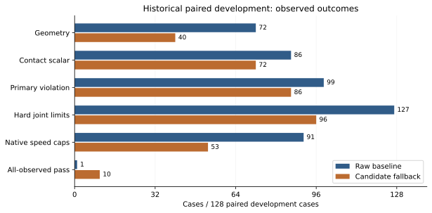


图1精确数值表（无需JavaScript）
| 指标与方向 | raw | 候选 |
|---|---|---|
| 几何违规 ↓ | 72/128 | 40/128 |
| 接触scalar违规 ↓ | 86/128 | 72/128 |
| primary违规 ↓ | 99/128 | 86/128 |
| 硬限位违规 ↓ | 127/128 | 96/128 |
| 原生速度违规 ↓ | 91/128 | 53/128 |
| all-observed完整通过 ↑ | 1/128 | 10/128 |
摘要
我们把策略比较与状态准入分成两条实验轨道。历史受限开发分布中的候选fallback减少观测违规，却增加获挽救案例的跟踪代价；新的全74关节冻结A128在完整数值与配额门后没有准入状态。随后隔离fixture的原生采集与独立RAW审计揭示incoming轴投影包含drive之外的响应，阻止把该投影直接用于生产电机力矩认证。本文报告固定cohort的描述性计数、拒绝案例与证据范围，不将相关时序行视为独立任务试验，也不提供无依据的成功率或置信区间。
新增机制V6实际采集16提案的32 AB窗口，独立RAW数据有效；B仅1/16可构造，唯一102仍触发几何、接触及速度拒绝，全部32窗口均有原数值拒绝。该结果保留非可构造项，不识别生产drive或约束的因果来源。
01实验问题与两条轨道
本报告回答两个不同的问题：在历史配对状态上，候选方案是否改变观测违规与跟踪误差；在新的全范围冻结初值上，完整数值与相机门是否能产生满足配额的准入状态。两条轨道各自保留原始人口、观察窗口和拒绝案例。
| 轨道 | 人口与窗口 | 比较或筛查 | 结论范围 |
|---|---|---|---|
| A · 历史受限配对 | 128组；raw/候选各128窗口；每窗口480控制、960微步 | 同组raw与候选fallback比较 | 固定开发分布的描述性比较 |
| B · 冻结全74 A128 | 4种子×32状态；每状态初始行+12物理步 | 数值门、实际相机区间、16格配额 | 0/128准入；无准入状态库、无任务策略评测 |
1664行是128个状态沿13个时点的重复观测；52项tracking ratio来自13案例的四臂窗口。本文按固定cohort给出计数，不将这些行或窗口视为独立、同分布的任务试验。
[事实表]02方法与准入协议
历史 raw 与候选 fallback 怎样产生动作
历史 restricted128 的 raw 使用共同预生成的26维绝对位置目标：初始受控关节位置加幅度缩放的随机命令，再裁剪至原生受控软限位；注册协议每8个控制周期更新随机目标。raw 将原目标直接送入六槽 FIFO。两种方案都经过相同六个控制周期的执行延迟，48个手部关节的位置目标保持初始值。
候选 fallback 只修改新入队的26维目标。它以队尾目标为中心，在受控软限位与每坐标 ±0.02 rad 的交集内先迭代投影原请求；投影未通过时，再尝试最小化与原请求 L1 距离的线性规划。随后按投影目标、可获得的 LP 目标、队尾保持目标的顺序，复核实际 float32 目标的全部名义约束：9021项几何速度约束，以及完整74自由度的速度和 drive effort 约束。选择首个通过者。
若所有候选均未通过，执行器仍重复队尾目标继续测量，同时记录 UNQUALIFIED。已有 FIFO 不清空、不重写，失败窗口保留。这里的名义模型准入不等于实际物理安全；队尾保持也未被证明为安全保持。
配对运行复用相同原请求、初始原生状态、场景配置、增益和物理参数设置。闭合配对摘要核对了原请求序列、前六个控制周期的完整74维执行目标，以及前缀 q/qd 一致。tracking 针对延迟六周期后的原始请求计算；static 为初始 q 的计算参考。隐藏 PhysX 求解器状态没有恢复或证明相同，实际生产 drive effort 仍为 UNKNOWN_UNMEASURED。
上述定义仅解释历史随机目标跟踪对照。名义单物理步模型和被动延迟外推尚未证明完整 FIFO 动力学或物理安全，不代表当前 A128 或未来策略已执行。
历史primary违规定义为任一注册raw9021 gap<0、任一自身/伙伴接触点标量和>0.1 N，或非有限观测。all-observed还纳入74关节硬限位、原生速度上限及26受控关节软限位。共同前缀覆盖最初6个已应用控制步（12微步）。后缀条件比较仅在共同合格人口中计算；全部前缀拒绝案例仍保留在全128总体统计中。 [判据与窗口定义]
四臂布局合计74个原生关节：F_L/F_R各19个，U_L/U_R各18个。全范围采样与边缘覆盖先于准入；在采样支撑内不等于满足几何、动力学或相机条件。
| 项目 | 本报告使用的协议 |
|---|---|
| 环境与实体 | Isaac Sim / PhysX原生仿真；四臂F_L、F_R、U_L、U_R；不含真实机器人任务 |
| 状态与动作维度 | q74与qd74；26个受控关节＋48个手关节；原生参数、关节次序及阈值保持 |
| 冻结初值 | 8192个生成提案；4个冻结seed×4families：uniform74、beta035_position74、single_position_face、single_velocity_face |
| 本轮观察 | 固定A128、每seed32状态；13行含恢复初始行，随后12真实物理微步；未执行任务策略动作 |
| 数值检查 | 74硬限位、74原生速度上限、26受控软限位、注册9021几何gap、82原生接触标量；类别可重叠 |
| 接触与几何单位 | gap为m；新鲜接触scalar为N，门槛>0.1 N；micro0接触值不作为新鲜动力学接触结论 |
| 相机检查 | 只在已执行的相机区间评价；原始RGB/ID masks、视角覆盖及held27；先前数值拒绝后的相机记NOT_TESTED |
| 准入状态库规则 | 4seed×4family=16格，每格需2例，共32例；任一短缺则selection=[]，不得跨格借用 |
| 统计单位 | 固定状态和重复时点描述；不报告未执行任务的成功率，不添加IID/binomial推断 |
历史轨道复用其已封存的受限状态与两种方案窗口，候选仍保留原生48手关节hold。primary、all-observed分别沿用原报告判据；不同判据下的前缀合格人口分别报告。失败与重试记录保留在附录。
[历史完整配对页]03历史配对：违规减少，跟踪代价增大
在全部128组中，primary失败从99/128降至86/128，all-observed完整通过从1/128增至10/128。几何、接触scalar、硬限位和速度类别的计数均下降；这些指标属于固定开发cohort。
[历史事实]共同primary前缀合格人口为70组，其中后缀失败为raw 41/70、候选28/70；13例救回、0例引入失败。共同all-observed前缀合格人口为54组，是另一种合格定义，不是70→54的失败变化。全部58个primary前缀未合格案例仍计入全128统计。
| 人口/配对事件 | 数值 |
|---|---|
| 共同primary前缀合格 | 70/128 |
| 共同all-observed前缀合格 | 54/128 |
| 共同primary人口内raw后缀失败 | 41/70 |
| 共同primary人口内候选后缀失败 | 28/70 |
| primary救回 / 引入失败 | 13 / 0 |
13个primary救回案例的四臂tracking RMSE ratio全部大于1：候选相对raw和static均更差。降低观测违规与提高跟踪精度并非同一个目标，这52项相关窗口不作显著性推断。
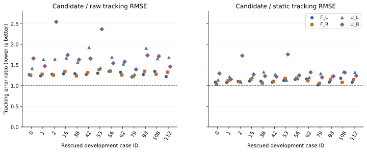


图2精确数值表（无需JavaScript）
| 案例 | 臂索引 | 候选/raw RMSE比 | 候选/static RMSE比 |
|---|---|---|---|
| 0 | 0 | 1.2661311439780996 | 1.083453223633806 |
| 0 | 1 | 1.2520094286602912 | 1.03728578654584 |
| 0 | 2 | 1.4182161705001957 | 1.1362091330698973 |
| 0 | 3 | 1.6602643920511129 | 1.2948900626390383 |
| 1 | 0 | 1.2393240335846605 | 1.0796465093518917 |
| 1 | 1 | 1.2770839328359498 | 1.1197315783119284 |
| 1 | 2 | 1.6331650466164813 | 1.21458313822737 |
| 1 | 3 | 1.4731964830385653 | 1.1540973102488514 |
| 2 | 0 | 1.2758493410076948 | 1.0999674156595458 |
| 2 | 1 | 1.2543800700280983 | 1.096047735348846 |
| 2 | 2 | 1.6423458028483562 | 1.0895596261105929 |
| 2 | 3 | 2.545997253269073 | 1.7256643391964808 |
| 15 | 0 | 1.2874786212512705 | 1.1134540087082836 |
| 15 | 1 | 1.3472426395339874 | 1.1539430298537348 |
| 15 | 2 | 1.6699469223981365 | 1.2013184552665026 |
| 15 | 3 | 1.7427920785428137 | 1.2718557343741907 |
| 38 | 0 | 1.2894083070990452 | 1.1053559291154738 |
| 38 | 1 | 1.2380598399328722 | 1.0638092546963798 |
| 38 | 2 | 1.5663961074169537 | 1.3285621557177374 |
| 38 | 3 | 1.6307217142580601 | 1.2321939780818443 |
| 42 | 0 | 1.271666818589082 | 1.083726062185297 |
| 42 | 1 | 1.3151885964472763 | 1.1042013994621886 |
| 42 | 2 | 1.9238404045444162 | 1.270004170353671 |
| 42 | 3 | 1.657247653044541 | 1.2175007811824814 |
| 53 | 0 | 1.301294225753967 | 1.1253479102643509 |
| 53 | 1 | 1.3933178978321978 | 1.1768951512360568 |
| 53 | 2 | 1.4295431215448982 | 1.1313829397807385 |
| 53 | 3 | 2.367741441530933 | 1.7571175129183492 |
| 56 | 0 | 1.3465934454067474 | 1.1526447399825466 |
| 56 | 1 | 1.353625975959576 | 1.1837898843584247 |
| 56 | 2 | 1.6879922969131453 | 1.169383510737756 |
| 56 | 3 | 1.54325743860149 | 1.2488225026975532 |
| 62 | 0 | 1.3245830290100011 | 1.1601306155974282 |
| 62 | 1 | 1.2572694992772218 | 1.118517528215105 |
| 62 | 2 | 1.523667815372222 | 1.200877845048432 |
| 62 | 3 | 1.5799479106104153 | 1.3229642913356559 |
| 79 | 0 | 1.2112512170368217 | 1.0191505168841215 |
| 79 | 1 | 1.2286882708948825 | 1.0578234691526838 |
| 79 | 2 | 1.269159331580781 | 1.2908833513853306 |
| 79 | 3 | 1.392907540926355 | 1.2005876429048372 |
| 93 | 0 | 1.270283004391467 | 1.0866075918629399 |
| 93 | 1 | 1.3493021147149047 | 1.1483418148170497 |
| 93 | 2 | 1.9055655172468149 | 1.228129610633984 |
| 93 | 3 | 1.7348070056151426 | 1.22807415161463 |
| 108 | 0 | 1.3456722940117867 | 1.1796455677791442 |
| 108 | 1 | 1.2760454983571519 | 1.079753453734826 |
| 108 | 2 | 1.653291760246701 | 1.3320001782083406 |
| 108 | 3 | 1.7145513384264208 | 1.31903162987354 |
| 112 | 0 | 1.2192216849213802 | 1.0830347591808898 |
| 112 | 1 | 1.3264358532701486 | 1.1469771570253375 |
| 112 | 2 | 1.6797275949692703 | 1.322754637675834 |
| 112 | 3 | 1.4606756466365722 | 1.240483765161169 |
04冻结A128：0/128准入，16格全部短缺
四个seed的32状态批次均有原生wait0并完成13行观测，合计1664个state-time行。独立raw审计完成后，准入仍为0/128；原生退出0只说明执行结束，准入状态库选择0/32、正式留出0、策略动作0。
[封存A128结果]| seed | 提案ID | 状态×观测 / 步 | native exit | 原outer exit | 初始相机通过/执行 | 初始相机NOT_TESTED | eligible |
|---|---|---|---|---|---|---|---|
| 0 | 64–95 | 32 × 13 / 12步 | 0 | 1 | 1/1 | 31/32 | 0 |
| 1 | 512–543 | 32 × 13 / 12步 | 0 | 0 | 0/0 | 32/32 | 0 |
| 2 | 672–703 | 32 × 13 / 12步 | 0 | 0 | 0/0 | 32/32 | 0 |
| 3 | 1120–1151 | 32 × 13 / 12步 | 0 | 0 | 0/0 | 32/32 | 0 |
seed0中只对proposal92执行并通过初始相机组；其余127个初始状态因数值拒绝而未进入相机评测。所有最终相机组均未执行。held27只覆盖实际相机区间。
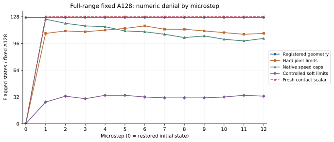


图3精确数值表（无需JavaScript）
| micro | raw9021 | scalar82 | hard74 | velocity74 | soft26 |
|---|---|---|---|---|---|
| 0 | 127 | 0 | 0 | 0 | 0 |
| 1 | 127 | 128 | 108 | 125 | 26 |
| 2 | 127 | 128 | 111 | 120 | 33 |
| 3 | 127 | 128 | 110 | 117 | 30 |
| 4 | 127 | 128 | 112 | 116 | 34 |
| 5 | 127 | 128 | 114 | 111 | 34 |
| 6 | 127 | 128 | 117 | 110 | 32 |
| 7 | 127 | 128 | 113 | 107 | 31 |
| 8 | 127 | 128 | 113 | 103 | 31 |
| 9 | 127 | 128 | 111 | 105 | 31 |
| 10 | 127 | 128 | 109 | 101 | 32 |
| 11 | 127 | 128 | 107 | 99 | 34 |
| 12 | 127 | 128 | 108 | 102 | 33 |
| seed | family索引 | eligible | 要求 | 缺额 |
|---|---|---|---|---|
| 0 | 0 | 0 | 2 | 2 |
| 0 | 1 | 0 | 2 | 2 |
| 0 | 2 | 0 | 2 | 2 |
| 0 | 3 | 0 | 2 | 2 |
| 1 | 0 | 0 | 2 | 2 |
| 1 | 1 | 0 | 2 | 2 |
| 1 | 2 | 0 | 2 | 2 |
| 1 | 3 | 0 | 2 | 2 |
| 2 | 0 | 0 | 2 | 2 |
| 2 | 1 | 0 | 2 | 2 |
| 2 | 2 | 0 | 2 | 2 |
| 2 | 3 | 0 | 2 | 2 |
| 3 | 0 | 0 | 2 | 2 |
| 3 | 1 | 0 | 2 | 2 |
| 3 | 2 | 0 | 2 | 2 |
| 3 | 3 | 0 | 2 | 2 |
相机未执行的状态保持NOT_TESTED。它们不会因没有相机失败记录而被计为相机通过；当前也没有任务成功率分母。
05校准实测：incoming投影不能普遍等同drive通道
隔离fixture的19个固定配置各保留4步，共76条相关观测行。独立RAW算术审计完成且data_valid=true；静态参数前后相同，19个fixed-base结构各有1个DOF、2个link，碰撞关闭。数据有效不等于物理安全认证。
[真实RAW闭合][独立76行与19配置审计]44行来自11个drive读回为零的配置；其中18行、6个配置出现零drive投影反例。explicit-only的两配置各4行、stop两配置各第0步、friction两配置各4行构成这18行。反例计数是配置内观测行，不是18个独立案例或IID试验。
纯drive的modest配置投影均值约±0.03575 N·m，saturating配置约±0.2000 N·m。drive-off、explicit命令±0.04 N·m时，incoming投影均值仍为−0.04000 / +0.04000 N·m。combined配置均值约±0.16 / ±0.24 N·m不能认证生产机器人微步内drive峰值；body-load配置的getter轴投影近零（约±9.31×10⁻¹⁰ N·m）。
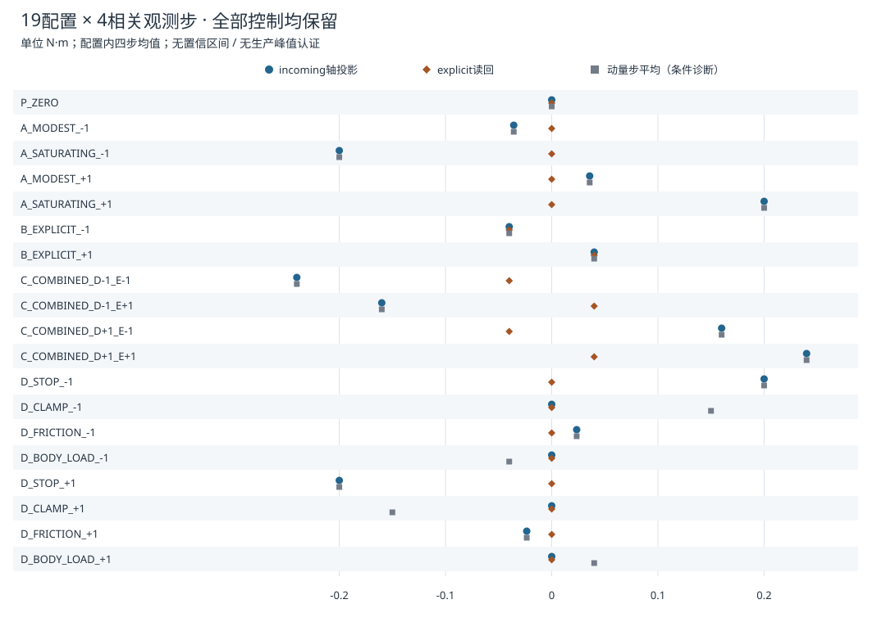

图4无脚本完整数据表：19配置四步均值（N·m）
| 配置 | 族 | 控制条件 | incoming投影 | explicit读回 | 动量步平均 | 反例step |
|---|---|---|---|---|---|---|
| P_ZERO | P_PASSIVE_REFERENCE | kp=0; kd=0; explicit=0; body=0 | 0 | 0 | 0 | 无 |
| A_MODEST_-1 | A_PURE_DRIVE | kp=2; kd=0.02; explicit=0; body=0 | -0.03575 | 0 | -0.03575 | 无 |
| A_SATURATING_-1 | A_PURE_DRIVE | kp=2; kd=0.02; explicit=0; body=0 | -0.2 | 0 | -0.2 | 无 |
| A_MODEST_+1 | A_PURE_DRIVE | kp=2; kd=0.02; explicit=0; body=0 | 0.03575 | 0 | 0.03575 | 无 |
| A_SATURATING_+1 | A_PURE_DRIVE | kp=2; kd=0.02; explicit=0; body=0 | 0.2 | 0 | 0.2 | 无 |
| B_EXPLICIT_-1 | B_EXPLICIT_ONLY | kp=0; kd=0; explicit=-0.04; body=0 | -0.04 | -0.04 | -0.04 | 0,1,2,3 |
| B_EXPLICIT_+1 | B_EXPLICIT_ONLY | kp=0; kd=0; explicit=0.04; body=0 | 0.04 | 0.04 | 0.04 | 0,1,2,3 |
| C_COMBINED_D-1_E-1 | C_COMBINED | kp=2; kd=0.02; explicit=-0.04; body=0 | -0.24 | -0.04 | -0.24 | 无 |
| C_COMBINED_D-1_E+1 | C_COMBINED | kp=2; kd=0.02; explicit=0.04; body=0 | -0.16 | 0.04 | -0.16 | 无 |
| C_COMBINED_D+1_E-1 | C_COMBINED | kp=2; kd=0.02; explicit=-0.04; body=0 | 0.16 | -0.04 | 0.16 | 无 |
| C_COMBINED_D+1_E+1 | C_COMBINED | kp=2; kd=0.02; explicit=0.04; body=0 | 0.24 | 0.04 | 0.24 | 无 |
| D_STOP_-1 | D_STOP | kp=0; kd=0; explicit=0; body=0 | 0.2 | 0 | 0.2 | 0 |
| D_CLAMP_-1 | D_CLAMP | kp=0; kd=0; explicit=0; body=0 | -5.676e-28 | 0 | 0.15 | 无 |
| D_FRICTION_-1 | D_FRICTION | kp=0; kd=0; explicit=0; body=0 | 0.02351 | 0 | 0.02351 | 0,1,2,3 |
| D_BODY_LOAD_-1 | D_BODY_LOAD | kp=0; kd=0; explicit=0; body=-0.04 | 9.313e-10 | 0 | -0.04 | 无 |
| D_STOP_+1 | D_STOP | kp=0; kd=0; explicit=0; body=0 | -0.2 | 0 | -0.2 | 0 |
| D_CLAMP_+1 | D_CLAMP | kp=0; kd=0; explicit=0; body=0 | 5.676e-28 | 0 | -0.15 | 无 |
| D_FRICTION_+1 | D_FRICTION | kp=0; kd=0; explicit=0; body=0 | -0.02351 | 0 | -0.02351 | 0,1,2,3 |
| D_BODY_LOAD_+1 | D_BODY_LOAD | kp=0; kd=0; explicit=0; body=0.04 | -9.313e-10 | 0 | 0.04 | 无 |
44行满足clean-fixture前提，20行有passive/load响应，二者是可重叠的诊断标签。配置内相关观测，不作独立试验统计；生产drive峰值仍未知。微步内峰值及全局认证误差界为UNKNOWN。
不同作者的实际数据语义审阅已闭合为PASS_DATA_ONLY，仅确认这76行校准数据的语义与算术范围。生产drive峰值、实际explicit冲量及全局认证误差界仍未知。[最终DATA语义审阅] [真实worker/tool闭合]
06A实测干预：可构造不等于数值准入
同一冻结cohort的16提案（IDs92–107）组成32个A/B窗口，实际共同执行12个物理步、各保留13状态，共416个相关观测。native、outer及独立RAW worker均真实0；独立RAW为PASS_DATA_ONLY，不同作者的实际DATA语义审阅状态为PASS_DATA_ONLY。这不改变A128的0/128准入、准入状态库0/32或完整安全验收未通过。[本次闭合事实与审阅范围]
干预方法与资格
A使用原始全74 q/qd与对应held target；B仅按冻结URDF关系构造U_L/U_R依赖手关节的q、qd与相应held target，F_L/F_R及26受控坐标保持原值。原始增益、限位、物理/几何参数与提案IDs不变，实际q/qd/targets按float32字节独立核对。原方案同时改变q、qd与target，不隔离单一因果因素。无重采样、裁剪或速度清零。
B仅proposal102可构造（1/16）；其余15项超出原构造资格，按冻结协议在B重放A输入，仍保留原16分母并标为非干预对照。92–95为既有结果选择的sentinel，96–107为预定proposal组；仅102属于可比较的后者。2368个angular state API实例的类型、全部74 DOF及native mimic=0已核验。通过的USD state属性原值未被producer保存，不能独立证明这些原值的有限性；原始native q/qd非有限flag另行重算。[独立RAW方法和完整结果]
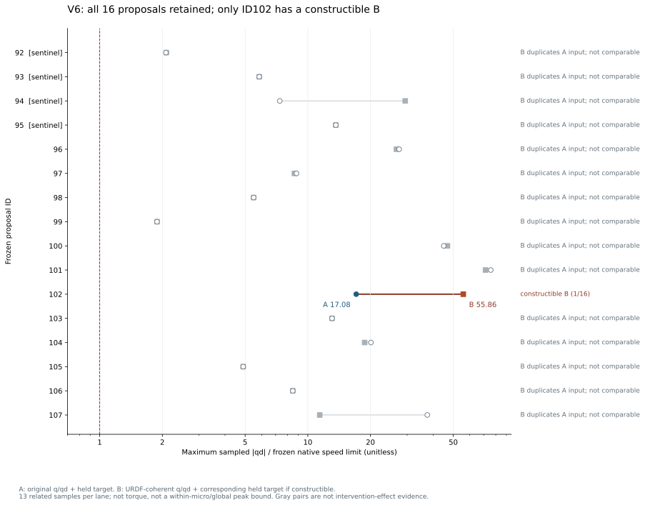


| proposal / family | B构造资格 | A采样速度比 | B采样速度比 | A / B数值拒绝 |
|---|---|---|---|---|
| 92 / 0 · sentinel | 不可构造；B重复A，非干预对照 | 2.082 | 2.09 | 拒绝 / 拒绝 |
| 93 / 1 · sentinel | 不可构造；B重复A，非干预对照 | 5.841 | 5.843 | 拒绝 / 拒绝 |
| 94 / 2 · sentinel | 不可构造；B重复A，非干预对照 | 7.331 | 29.38 | 拒绝 / 拒绝 |
| 95 / 3 · sentinel | 不可构造；B重复A，非干预对照 | 13.63 | 13.63 | 拒绝 / 拒绝 |
| 96 / 0 | 不可构造；B重复A，非干预对照 | 27.47 | 26.67 | 拒绝 / 拒绝 |
| 97 / 1 | 不可构造；B重复A，非干预对照 | 8.824 | 8.625 | 拒绝 / 拒绝 |
| 98 / 2 | 不可构造；B重复A，非干预对照 | 5.492 | 5.491 | 拒绝 / 拒绝 |
| 99 / 3 | 不可构造；B重复A，非干预对照 | 1.886 | 1.886 | 拒绝 / 拒绝 |
| 100 / 0 | 不可构造；B重复A，非干预对照 | 45 | 46.89 | 拒绝 / 拒绝 |
| 101 / 1 | 不可构造；B重复A，非干预对照 | 75.7 | 71.44 | 拒绝 / 拒绝 |
| 102 / 2 | 可构造（仅此1对） | 17.08 | 55.86 | 拒绝 / 拒绝 |
| 103 / 3 | 不可构造；B重复A，非干预对照 | 13.08 | 13.08 | 拒绝 / 拒绝 |
| 104 / 0 | 不可构造；B重复A，非干预对照 | 20.11 | 18.75 | 拒绝 / 拒绝 |
| 105 / 1 | 不可构造；B重复A，非干预对照 | 4.892 | 4.892 | 拒绝 / 拒绝 |
| 106 / 2 | 不可构造；B重复A，非干预对照 | 8.47 | 8.47 | 拒绝 / 拒绝 |
| 107 / 3 | 不可构造；B重复A，非干预对照 | 37.5 | 11.41 | 拒绝 / 拒绝 |
负结果与原判据
可构造的102，A/B初始均有注册几何负gap；12步中两侧均有12/12新鲜接触拒绝及12/12几何拒绝。速度拒绝为A10/12、B12/12，最大采样速度比分别17.08、55.86。原始URDF位置关系残差在B初始降至约2.478e−8 rad，但这次构造未恢复数值准入，不能由此识别drive或约束冲量来源。
| 原判据 | initial拒绝 A · B | 12步内曾拒绝窗口 A · B | prefix拒绝相关行 A · B |
|---|---|---|---|
| 非有限观测 | 0/16 · 0/16 | 0/16 · 0/16 | 0/192 · 0/192 |
| 74硬限位 | 0/16 · 0/16 | 16/16 · 16/16 | 171/192 · 171/192 |
| 74速度上限 | 0/16 · 0/16 | 16/16 · 16/16 | 150/192 · 152/192 |
| 26受控软限位 | 0/16 · 0/16 | 7/16 · 7/16 | 43/192 · 44/192 |
| 注册9021负gap | 15/16 · 15/16 | 15/16 · 15/16 | 180/192 · 180/192 |
| 82新鲜接触scalar>0.1N | UNKNOWN | 16/16 · 16/16 | 192/192 · 192/192 |
| 74 held target漂移 | 0/16 · 0/16 | 0/16 · 0/16 | 0/192 · 0/192 |
全部32窗口均有原数值拒绝。每侧192个新鲜prefix行都触发接触scalar；micro0的接触新鲜性为UNKNOWN，不把其false flag解释为“无接触”。独立重建全部9021几何行，最大误差约1.317 μm、符号不一致0；原负gap判据仍用零epsilon，5e−5 m仅用于原有重建诊断，未放宽门槛。[完整416相关行flags]
416行为配置内相关观测，不作独立试验统计。V6相机NOT_TESTED；frame MODEL_NOT_READY，64+64模型校准、8192模型评价、任务及正式留出均NOT_RUN。生产drive峰值、微步内峰值与全局误差界仍UNKNOWN。
完整V6原始native数据（含所有contact点、clock和frame失败诊断） · 逐字段下载、SHA及闭合证明
报告14：初始覆盖已验收，首步与完整安全仍未通过REPORT14: initial coverage verified; first-step and full safety requirements remain unmet
固定科学快照，非实时状态Fixed scientific snapshot, not live status： / Asia/Shanghai 2026-10-11T15:01:30.814723+08:00
本轮第一次有独立数据验收支持全部32个初始相机组。每组包含四臂各三个手部视角及三个宽视角，共480张选定原图。这个进展解决了本轮初态的规定像素覆盖，尚未完成后续12步挑战或最终相机验收，安全银行仍为0。Independent data checks now support all32 initial camera groups: three hand views per arm for four arms, plus three wide views per group, totaling480 selected original images. This establishes the prescribed initial pixel coverage for this attempt. It does not complete the12-step challenge or final camera checks; the safety bank remains0.
首个已记录挑战步中，32个候选均触发至少一个原数值门槛。两条lane的球代理最小间距由正转负，另有位置与速度门槛触发。接触标量虽然可以从保存的点记录复算，但“新鲜”标签尚无独立SDK刷新时刻证据，因此不能把这些数值拒绝提升为完整物理判定。At the first recorded challenge step, all32 candidates triggered at least one original numerical predicate. Two lanes changed from positive to negative minimum sphere-proxy gaps, with position and velocity predicates also triggered. Stored point records support scalar reconstruction, but the fresh label has no independent SDK refresh-epoch evidence; these numerical denials do not establish a complete physical verdict.
方法与实验设置Methods and experimental setup
本轮仍是此前固定的同32个开发候选重试，保持74维原生位置、速度、目标以及原门槛。模型8192与补充32768各自保留分母，累计40960仅为模型预测；重复这32个候选和读取初态、首步，不产生64个新的独立实验样本。正式留出集未开启。This is a related retry of the same32 fixed development candidates, with74 native position, velocity and target coordinates and unchanged thresholds. The original8192 and supplemental32768 model cohorts retain separate denominators; their total40960 is model prediction only. Repeating32 candidates and reading initial and first-step states does not create64 new independent experiments. The formal holdout remains unopened.
独立审计分四个8候选CPU分片消费既有闭合数据，核验初始相机、74维数值、9021个几何代理与82个接触标量身份及记录运算。本报告只消费该审计的闭合JSON和64行CSV，并按SHA复制选定原图；没有重新执行原生物理、SDK或整批原始数组复算。The independent audit consumed closed data in four CPU shards of8 candidates, checking initial cameras,74-coordinate numerical fields,9021 geometry proxies and identities and recorded operations for82 contact scalars. This report consumes its closed JSON and64-row CSV and copies selected original images bySHA. It performs no native physics, SDK execution or full raw-array re-audit.
相机门槛保持原定义：每臂三个相隔至少30°的视角；掌部至少2048像素，五指各至少512，每个原生手部body至少64且无缺口。三个宽视角中，四臂与两桌各在至少一幅达到1024像素，关键前臂与wrist2 body各达到128。每次渲染保持原27项状态，整批32候选均核验；这些可见像素门槛不等于全表面、无遮挡或接触面认证。The original camera definition remains: three views per arm separated by at least30°; palm at least2048 pixels, each of five fingers at least512, and every native hand body at least64 without gaps. Across the three wide views, each of four arms and two tables reaches1024 pixels in at least one view, and each critical forearm and wrist2 body reaches128. The original27 held-state fields are checked across all32 candidates for every render. These visible-pixel thresholds do not certify complete surfaces, absence of occlusion or contact patches.
结果：把初态、首步和完整轨迹分开Results: initial state, first step and complete trajectory
| 范围Scope | 实际证据Actual evidence | 可以得出的结论Supported conclusion |
|---|---|---|
| 初始相机Initial camera | 32/32组；480选定原图；1201初始attempt图像独立审计。32/32 groups;480 selected originals;1201 initial-attempt images independently audited. | 仅本轮初始规定覆盖通过；不补足最终相机。Prescribed initial coverage passes for this attempt only; final cameras remain missing. |
| 保存的图像Saved images | 共1312张；另111张部分或孤立图像保留。1312 total;111 other partial or orphan images retained. | 111张未获得像素验收，不能计入480或合格组。The111 are not pixel-accepted and do not enlarge the480 selected images or qualified groups. |
| 已提交数值Committed numerical fields | 初态micro0与首步micro1，各32条相关观察。Initial micro0 and first-step micro1, each32 related observations. | 首步32/32记录数值拒绝；不是完整物理安全结论。First-step recorded numerical denial32/32; not a complete physical safety verdict. |
| 完整12步Complete12 steps | micro2..12与最终相机缺失；producer终结收据缺失。micro2..12 and final cameras missing; producer final receipt absent. | 完整挑战未完成；不能从两行补造推进总数。Full challenge incomplete; two rows cannot synthesize the total physical advance count. |

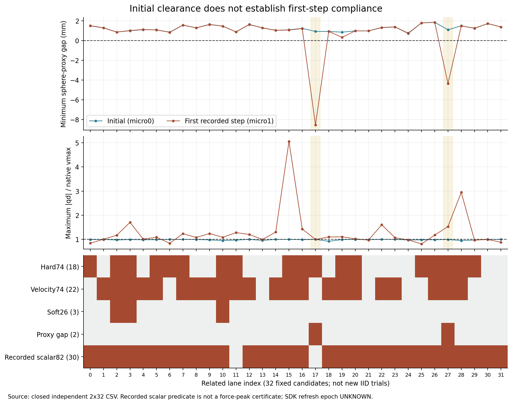
首步门槛触发数量为：硬位置18、速度22、软范围3、球代理负间距2、接触标量30；非有限值和目标保持各0。它们相互重叠。保存的代理距离与独立float64复算最大差约1.166微米、符号分歧0，仅说明这64条相关记录的代理运算一致，不构成网格碰撞或全局误差界证明。First-step predicate counts are18 hard-position,22 velocity,3 soft-range,2 negative proxy-gap and30 contact-scalar, with0 nonfinite and0 held-target flags. Counts overlap. Stored proxy distances agree with independent float64 reconstruction to about1.166 micrometers with0 sign disagreements. This establishes proxy-operation agreement on64 related records, not mesh-collision certification or a global error bound.

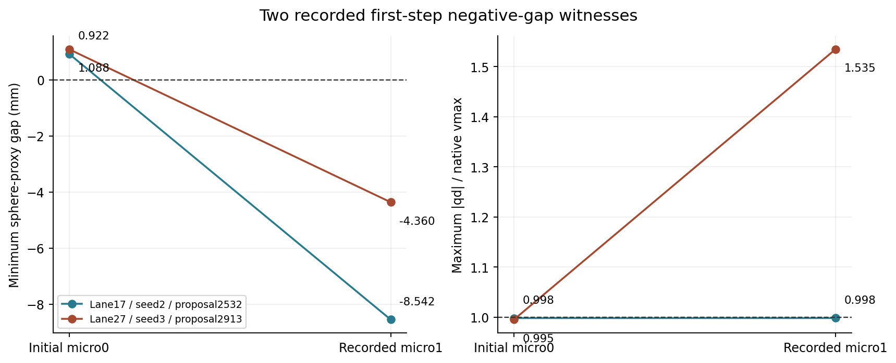
真实初始画面与全量选定原图Actual initial views and all selected originals
以下展示两条负间距lane的初始宽视角和手部视角，原始1280×720字节不编辑、不裁切。该初始相机组已通过规定的独立像素覆盖；画面仍可能包含同环境其他手或遮挡，不能称为无异物、无接触或安全。详细页保留所有32组，每组15幅选定原图及身份、SHA与审计范围。Initial wide and hand views for the two negative-gap lanes appear below as unchanged, uncropped1280×720 originals. Their initial groups pass the prescribed independent pixel coverage. Images may still contain other hands in the same environment or occlusion; they are not evidence of foreign-free, contact-free or safe scenes. Detail pages retain all32 groups,15 selected originals each, with identities, SHA and audit scope.


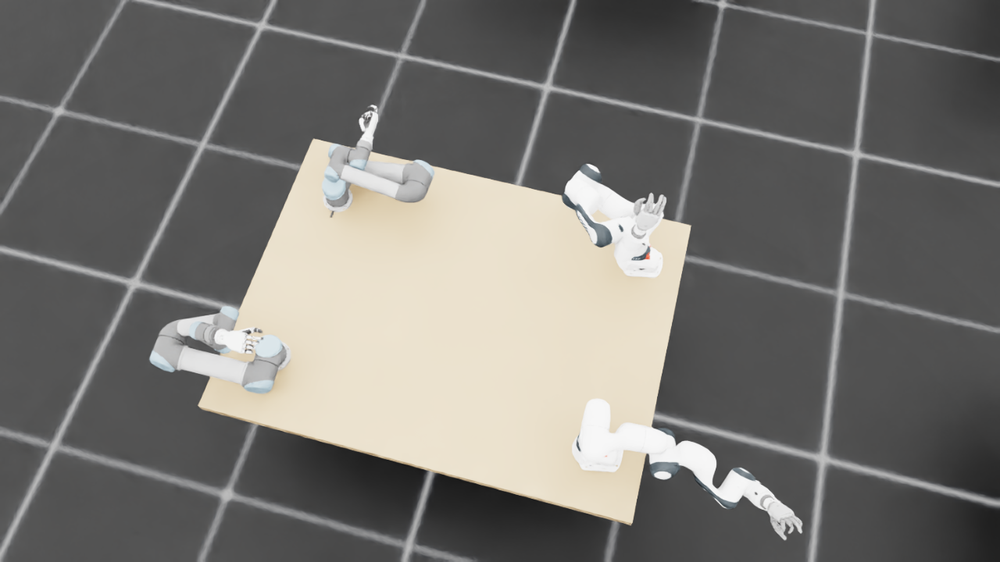
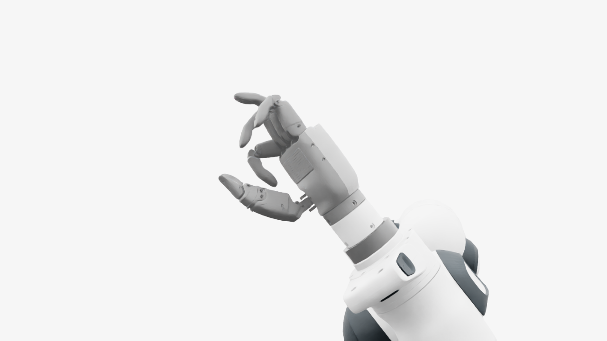
查看全部32组 × 15张选定原图（480张）View all32 groups ×15 selected originals (480 images)
失败分析Failure analysis
静态模型使用初始位置预测代理间距，而原生初始速度并不为零，保持的位置目标等于初始位置。两条lane的记录说明：初始代理间距为正不能保证下一步仍满足约束。驱动、被动约束、接触以及未恢复的求解器状态各自的贡献尚未被因果实验区分，不能只从大标量或一次超时选定根因。The static model predicts proxy gaps from initial positions, while native initial velocities are nonzero and held position targets equal initial positions. The two recorded lanes show that positive initial proxy gaps do not ensure next-step compliance. Contributions from drives, passive constraints, contacts and unrestored solver state have not been separated by a causal experiment; large scalars or a timeout alone do not identify a root cause.
采集在原1200秒期限附近被关闭，未留下完整producer终结记录。监督器也记录了期限附近一次GPU查询超时；这不证明资源不足、GPU选择错误或此前崩溃已修复。与历史重试相比，本轮初始图像和提交行覆盖增加，是数据完整性进展，不能据此宣称提速、稳定性或安全成功。Capture closed near the original1200-second deadline without a complete producer final record. The supervisor also recorded a near-deadline GPU-query timeout. This does not establish resource shortage, wrong GPU selection or repair of the earlier crash. Compared with historical related retries, initial-image and committed-row coverage increased; that is progress in data completeness, not proof of speed, stability or safety gains.
限制与验收表Limitations and acceptance table
接触刷新时刻、实际驱动峰值、微步内力峰、力矩坐标、终端集合与全局误差界仍未知。初始点标签为“不新鲜”，首步“新鲜”标签也不能替代独立SDK刷新证据；既不能把初始接触读数判作全32失败，也不能判作安全通过。原27项保持要求有效；42项仍是未绑定、未采纳提案。Contact refresh epochs, actual drive peaks, within-micro force peaks, wrench coordinates, terminal sets and a global error bound remain unknown. Initial points are labeled not fresh, and the first-step fresh label does not replace independent SDK refresh evidence. Initial readings establish neither contact failure for all32 nor safety acceptance. The original27 held-state requirements remain;42 fields are an unbound, unadopted proposal.
| 要求Requirement | 实际达到的范围Achieved scope | 验收缺口Acceptance gap |
|---|---|---|
| 模型预测Model prediction | 8192与32768分别完成；40960 MODEL_ONLY。8192 and32768 separately completed;40960 MODEL_ONLY. | 956个预测CLEAR不等于安全样本；原8192空调度不变。956 predicted CLEAR labels are not safe samples; original8192 empty schedule retained. |
| 初始/最终强相机Initial/final strong camera | 初始32/32，480选定原图与原27项保持核验。Initial32/32,480 selected originals and original27 held fields checked. | 最终相机缺失；不证明全网格/无遮挡。Final cameras missing; no complete-mesh or occlusion-free proof. |
| 全74维/12微步All74 coordinates/12 microsteps | micro0,1共64条相关观察；首步数值拒绝32/32。64 related observations at micro0,1; first-step numerical denial32/32. | micro2..12缺失；原门槛不放宽。micro2..12 missing; original thresholds unchanged. |
| 接触/驱动/误差界Contact/drive/error bound | 保存点身份与标量运算复算，代理运算一致。Stored point identity/scalar reconstruction and proxy-operation agreement. | 刷新时刻、驱动峰值与全局界未知；物理安全未通过。Refresh epoch, drive peaks and global bound unknown; physical safety not accepted. |
| 任务/留出/安全银行Tasks/holdout/safety bank | 任务未运行；留出集未开启；银行0。Tasks not run; holdout unopened; bank0. | 完整要求未达成，初始覆盖与模型预测不能替代。Full requirements unmet; initial coverage and model prediction do not replace them. |
下一项可检验的工作Next testable work
先补足完整挑战与最终状态证据，并针对非零初始速度、保持目标下的驱动与被动反力做独立、预先冻结的区分实验；刷新时刻与实际峰值测量仍需权威接口。新实验未执行，不能用本轮有限记录推断其结果，也不改变原采样分母或门槛。Complete the challenge and final-state evidence, and use an independently frozen experiment to separate drive and passive reactions under nonzero initial velocity and held targets. Refresh epochs and actual peaks still require authoritative measurement interfaces. These new experiments have not run; the finite records here predict neither their outcomes nor changes to the original denominators or thresholds.
证据与复现附录：原始字段、退出状态、SHA、CSV与原图清单Evidence and reproduction appendix: exact fields, exits, SHA, CSV and original-image inventory
{
"snapshot_utc": "2026-10-11T07:01:30.814723+00:00",
"native_terminal": {
"native_exit": -9,
"raw_status": 9,
"CPU_exit": 0,
"outer_exit": 1,
"tool_exit": 1,
"work_deadline_seconds": 1200,
"elapsed_seconds": 1212.4957920899615,
"signals": [
{
"pid": 4130015,
"signal": 15,
"identity": {
"pid": 4130015,
"ppid": 3993792,
"pgid": 3993792,
"sid": 3993792,
"startticks": 182148844,
"state": "R"
}
},
{
"pid": 3993792,
"signal": 15,
"identity": {
"pid": 3993792,
"ppid": 3991887,
"pgid": 3993792,
"sid": 3993792,
"startticks": 182028846,
"state": "S"
}
},
{
"pid": 3993792,
"signal": 9,
"identity": {
"pid": 3993792,
"ppid": 3991887,
"pgid": 3993792,
"sid": 3993792,
"startticks": 182028846,
"state": "S"
}
}
],
"resource_abort": "TimeoutExpired: Command '['nvidia-smi', '--query-gpu=index,uuid,memory.free', '--format=csv,noheader,nounits']' timed out after 0.007295994088053703 seconds",
"error": "TimeoutExpired: Command '['nvidia-smi', '--query-gpu=index,uuid,memory.free', '--format=csv,noheader,nounits']' timed out after 0.007295994088053703 seconds",
"failure_cause": "UNKNOWN",
"registered_identity_count": 253,
"registered_identity_scope": "251_NATIVE_PLUS_1_CPU_PLUS_1_OUTER",
"all_registered_fresh_absent": true,
"ENTRY": null,
"PRODUCER": null,
"ProfileClose": null,
"physical_advance": "UNKNOWN_PRODUCER_ABSENT"
},
"independent_data_scope": {
"status": "PASS_DATA_ONLY_PARTIAL_INITIAL32_AND_COMMITTED01",
"initial_camera_qualified_groups": 32,
"selected_original_images": 480,
"raw_initial_original_PNGs_audited": 1201,
"raw_attempts_audited": 1201,
"all_native_original_PNGs": 1312,
"other_PNGs_preserved_without_pixel_acceptance": 111,
"micro1_numeric_denied_lanes": 32,
"reason_counts_micro1": {
"nonfinite": 0,
"hard74": 18,
"velocity74": 22,
"soft26": 3,
"raw9021": 2,
"point_scalar82": 30,
"held_target74": 0
},
"valid_owned_point_counts": [
3166,
2546
],
"raw9021_max_reconstruction_error_m": 1.165812354653184e-06,
"raw9021_sign_disagreements": [
0,
0
],
"minimum_micro1_gap": {
"micro": 1,
"lane": 17,
"seed": 2,
"proposal_id": 2532,
"global_id": 25060,
"family": 0,
"raw9021_min_m": -0.00854162871837616,
"raw9021_negative_pairs": 1,
"scalar82_max_N": 0.0,
"scalar82_max_owner": "/World/envs/env_17/F_L/f2_hand/left_hand_base",
"qd_over_vmax_ratio": 0.9983530640602112,
"point_fresh_label": true,
"simulation_step": 4,
"simulation_time_s": 0.03333333507180214,
"nonfinite": false,
"hard74": true,
"velocity74": false,
"soft26": false,
"raw9021": true,
"point_scalar82": false,
"held_target74": false
},
"maximum_micro1_contact_scalar": {
"micro": 1,
"lane": 28,
"seed": 3,
"proposal_id": 2338,
"global_id": 33058,
"family": 2,
"raw9021_min_m": 0.001482158899307251,
"raw9021_negative_pairs": 0,
"scalar82_max_N": 1163501.2724609375,
"scalar82_max_owner": "/World/envs/env_28/U_R/forearm_link",
"qd_over_vmax_ratio": 2.947174072265625,
"point_fresh_label": true,
"simulation_step": 4,
"simulation_time_s": 0.03333333507180214,
"nonfinite": false,
"hard74": true,
"velocity74": true,
"soft26": false,
"raw9021": false,
"point_scalar82": true,
"held_target74": false
},
"micro1_contact_refresh_freshness": "UNKNOWN_NO_INDEPENDENT_SDK_REFRESH_EPOCH_EVIDENCE",
"kernel_fresh_rows_interpretation": "PRODUCER_CLOSED_POINT_LABEL_CHECK_ONLY_NOT_INDEPENDENT_SDK_FRESHNESS",
"physical_advance": "UNKNOWN_PRODUCER_ABSENT",
"rawgap_mesh_collision_certificate": false,
"drive_torque": "UNKNOWN",
"within_micro_peak": "UNKNOWN",
"global_error_bound": "UNKNOWN",
"full12": false,
"missing_micro_rows": [
2,
3,
4,
5,
6,
7,
8,
9,
10,
11,
12
],
"final_camera": "MISSING_UNAUDITED",
"ENTRY": null,
"producer": null,
"ProfileClose": null,
"bank_count": 0,
"safety_acceptance": false,
"task_acceptance": false,
"full_RAW_status": "CLOSED_FAILED_NATIVE_RECEIPTS_ONLY",
"full_RAW_exit": 2,
"same32_related_not_new_IID": true,
"mandatory27": true,
"latest42": "UNKNOWN_UNBOUND"
},
"physical_unknowns": {
"contact_SDK_refresh_epoch": "UNKNOWN",
"actual_drive_peak": "UNKNOWN",
"within_micro_force_peak": "UNKNOWN",
"wrench_frame": "UNKNOWN",
"terminal_set": "UNKNOWN",
"global_error_bound": "UNKNOWN"
},
"source_refs": {
"V10_parent": {
"path": "/mnt/nas/data/lyf/double_hand/safety_verified_fallback_20261010_0352/parent_supplement_native32_profile_intake_v1/campaign_ssd_v10_minimal_only/actual_native01/PARENT_ACTUAL_NATIVE_CLOSED_V10.json",
"sha256": "b7bc08bd1f5c9d093f237c3a0d850b6f2f8141093e77495e631719a54ecc893e"
},
"V10_DATA_handoff": {
"path": "/mnt/nas/data/lyf/double_hand/safety_verified_fallback_20261010_0352/astra_full74_supplemental_mixed32_v10_initial32_micro1_independent_audit_v1/CLOSED_ACTUAL_PARTIAL_DATA_HANDOFF_V1.json",
"sha256": "984e1dd5b84047e7238e3bcbdd449cc1e9e0dcfb11b6900f5b215a91720e1689"
},
"V10_DATA_peer": {
"path": "/mnt/nas/data/lyf/double_hand/safety_verified_fallback_20261010_0352/astra_full74_supplemental_mixed32_v10_partial_data_semantic_review_v1/REVIEW_V1.json",
"sha256": "b57cce953375186f14abc61c2ca15c4d55dcba6604461a4ee44f26a936fc2998"
},
"V10_DATA_peer_closed": {
"path": "/mnt/nas/data/lyf/double_hand/safety_verified_fallback_20261010_0352/astra_full74_supplemental_mixed32_v10_partial_data_semantic_review_v1/ACTUAL_CLOSED_HANDOFF_V1.json",
"sha256": "658a9c89945cc17000fc4697885a42660599ff79e6780065013aa15edd4277a2"
},
"V10_DATA_peer_final": {
"path": "/mnt/nas/data/lyf/double_hand/safety_verified_fallback_20261010_0352/astra_full74_supplemental_mixed32_v10_partial_data_semantic_review_v1/FINAL_TOOLS_CLOSED_V1.json",
"sha256": "849f9a9e001d10513dc04645410b8961ac962409db6ddab71f57774c2cf678a3"
},
"parent_DATA_adoption": {
"path": "/mnt/nas/data/lyf/double_hand/safety_verified_fallback_20261010_0352/parent_supplement_native32_profile_intake_v1/V10_partial_data_parent_adoption01/PARENT_PARTIAL_DATA_DISTINCT_PEER_ADOPTED_V2.json",
"sha256": "46789c0ec242bdf01a073b8c2873bc3703577eefd228f43896a986b690fbd512"
},
"dynamic_frontier": {
"path": "/mnt/nas/data/lyf/double_hand/safety_verified_fallback_20261010_0352/astra_v10_dynamic_admission_frontier_v1/actual01/CLOSED_PARENT_HANDOFF_V1.json",
"sha256": "22ec939662f5150d76fef7fe582912e45fe5fa4de650501626de00ea36952bfb"
},
"public13": {
"path": "/mnt/nas/data/lyf/double_hand/safety_verified_fallback_20261010_0352/astra_report_increment13_v1/parent_current_public_browser_gate_v1/CURRENT_PUBLICATION_REQUIREMENTS_CLOSED_V13.json",
"sha256": "f525d87081f96a9f5fb337adc477ba27cc891f9648164fc4c8f5691d32665a1c"
},
"candidate13": {
"path": "/mnt/nas/data/lyf/double_hand/safety_verified_fallback_20261010_0352/astra_report_increment13_v1/release6/LOCAL_CLOSED_CANDIDATE_V13.json",
"sha256": "9bf57499a1cd7cf1b30f0cdec7c875beb0f4a99a2f2cd665e8c1fc50d6632f06"
},
"public13_peer": {
"path": "/mnt/nas/data/lyf/double_hand/safety_verified_fallback_20261010_0352/astra_report13_publication_final_independent_review_franklin_v1/actual01/REVIEW_V1.json",
"sha256": "aea69afef3f3379c6ef812392612a94fbc9015b8e1281b4a5218d216ea11582a"
},
"public13_peer_closed": {
"path": "/mnt/nas/data/lyf/double_hand/safety_verified_fallback_20261010_0352/astra_report13_publication_final_independent_review_franklin_v1/actual01/CLOSED_PUBLICATION_PEER_HANDOFF_V2.json",
"sha256": "5ae5becbc0010fe1d80487ff0bfe5763377a1f045406beafabf073ddb1c17c96"
}
}
}报告13：部分覆盖扩大，完整安全验收仍未完成REPORT13: broader partial coverage, full safety acceptance still incomplete
摘要Summary
本轮仍未取得完整的原生相机组，也未完成安全验收。最新重试保存了更多初始画面，但在原定工作期限后结束；没有完整挑战轨迹可供验收。This attempt produced no complete native camera group and did not complete safety acceptance. The latest retry saved more initial views but ended after its original work deadline; no complete challenge trajectory is available for acceptance.
- 模型初态预测Model initial predictions
- 40,96040,960
- 本轮完整原生组Complete native groups this attempt
- 00
- 安全验收Safety acceptance
- 尚未通过Not yet passed
- 任务验证Task trials
- 未运行Not run
- 正式留出集Formal holdout
- 未开启Unopened
科学快照截至上海时间 2026-10-11 12:42:16.350993（UTC 2026-10-11 04:42:16.350993）。本页反映固定时点，不是实时进程状态。Frozen scientific cutoff: 2026-10-11 04:42:16.350993 UTC / 2026-10-11 12:42:16.350993 Asia/Shanghai. This page reports a fixed snapshot, not live process status.
方法Method
模型预测、采集器初态读数、独立数据复算与物理安全验收分别报告。模型预测通过，或一张画面被采集器接受，都不能替代完整轨迹与完整相机组的验收。Model predictions, producer initial readings, independent data reconstruction and physical safety acceptance are reported separately. A predicted-clear state or a producer-accepted image does not replace acceptance of a complete trajectory and camera group.
本报告使用已关闭的元数据、已固定选定的原图和既有模型结果。没有运行新的原生实验，没有重算完整几何或像素，也没有修改原资格门槛。This report uses closed metadata, fixed original image selections and existing model results. It runs no new native experiment, recomputes no complete geometry or pixel inventory, and changes no qualification threshold.
实验设置Experimental setting
原模型批次为 8,192 个候选，补充模型批次为 32,768 个候选，保留两个独立分母。原批次的空调度保持不变；预测结果不构成安全样本。原生采集重试使用同一组 32 个候选，相关重试不产生新的独立样本。The original model batch contains 8,192 candidates and the supplemental batch 32,768, with separate denominators retained. The original empty schedule remains unchanged; predictions are not safety samples. Native retries use the same 32 candidates and add no new independent samples.
完整原生前缀要求每个候选有初态和 12 次真实挑战微步，并核对全部 74 维位置、速度与目标。相机要求覆盖全部手部、初始与最终状态以及挑战中的告警组；状态保持和原可见性标准均不变。A complete native prefix requires an initial state and 12 actual challenge microsteps per candidate, with all 74 positions, velocities and targets checked. Camera coverage must include every hand, initial and final states, and alarm groups during the challenge; held-state and original visibility criteria remain unchanged.
结果Results
最新 V9 重试保留了 399 张初始 PNG 文件，涉及 11 个已分配的环境目录。此前 V8 仅保留首个环境的 24 张图。保存的部分覆盖扩大了，但 11 个目录不是 11 个完整样本，且没有形成完整相机组。不同相关重试也不能据此推断速度提升。The latest V9 retry retained 399 initial PNG files across 11 allocated environment directories. V8 retained 24 in its first environment. Saved partial coverage expanded, but 11 directories are not 11 complete samples and no complete camera group was produced. Related retries do not establish a speed improvement.
V9 只有初始记录被提交。它在原定工作期限及清理流程后关闭；后续挑战记录和最终采集证明缺失，因此完整前缀仍未评估。失败原因尚未确定。V9 committed only its initial record. It closed after the original work deadline and cleanup sequence; later challenge records and the final producer evidence are missing, so the complete prefix remains unevaluated. The cause is unresolved.
| 模型预测Model prediction | 初始读数Initial readings | 完整前缀判定Complete-prefix finding |
|---|---|---|
| 40,960 个候选的模型批次均已评估；预测间隙不代表物理安全。Both model batches were evaluated, totaling 40,960 candidates; predicted gaps do not establish physical safety. | 保存的初态几何读数为正，但接触读数的新鲜性未知；初态标志不能当作完整资格通过。Saved initial geometry readings are positive, but contact-reading freshness is unknown; initial flags are not complete qualification. | 同组 32 个候选尚无完整挑战轨迹与相机组可验收；安全银行仍为零。The same 32 candidates have no complete challenge trajectory and camera group available for acceptance; the safety bank remains zero. |
父级诊断只读取已提交的初态。接触缓存的新鲜性未得到确认，因此不能据其较大读数判定所有候选接触失败，也不能据几何正间隙与初态标志宣告安全。三次初始化步不等于 12 次挑战微步。The parent diagnostic reads only the committed initial state. Contact-cache freshness is unconfirmed: large readings do not establish contact failure for every candidate, and positive gaps or initial flags do not establish safety. Three initialization steps are not 12 challenge microsteps.
部分原始画面Partial original views
先展示 V9，再保留 V8 对照。选定视角包含被拒绝的画面，用于说明覆盖障碍；不是经过安全挑选的新样本。以下均为未裁切、未编辑的 1280×720 原图，尚未通过相机组资格验收。V9 views appear first, followed by V8 for comparison. Fixed selections retain rejected views to illustrate coverage barriers; they are not newly safety-selected samples. All images below are uncropped, unedited 1280×720 originals and have not passed camera-group qualification.

部分初始图像；未通过相机组验收。Partial initial image; camera group not qualified.

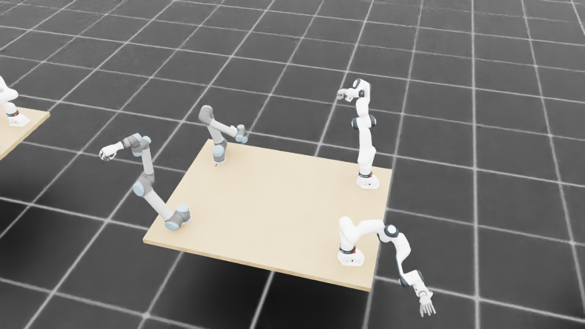
部分初始图像；未通过相机组验收。Partial initial image; camera group not qualified.

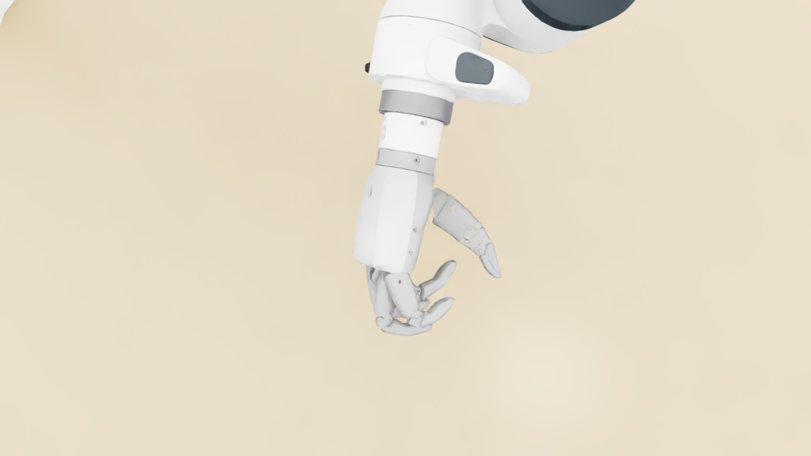
部分初始图像；未通过相机组验收。Partial initial image; camera group not qualified.

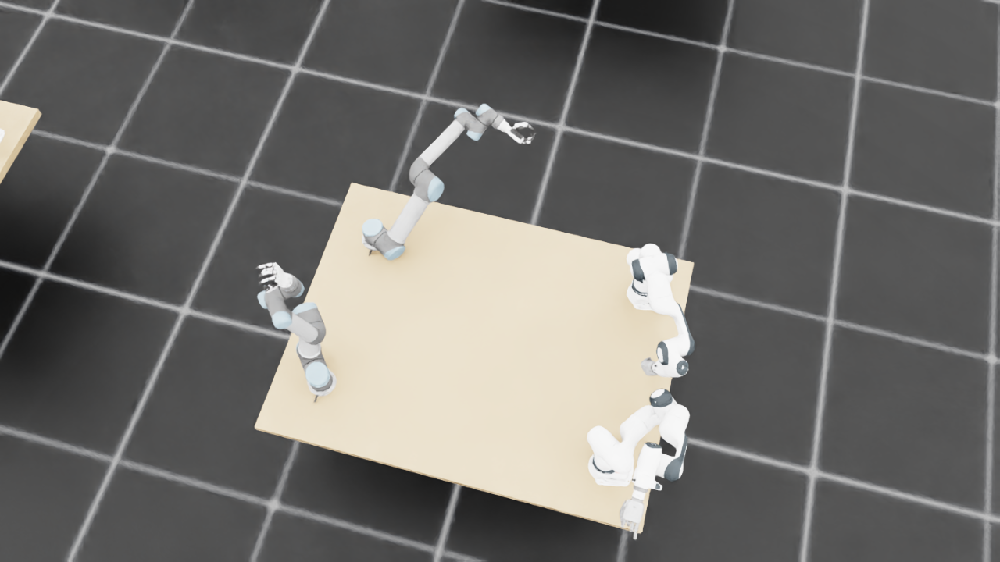
部分初始图像；未通过相机组验收。Partial initial image; camera group not qualified.

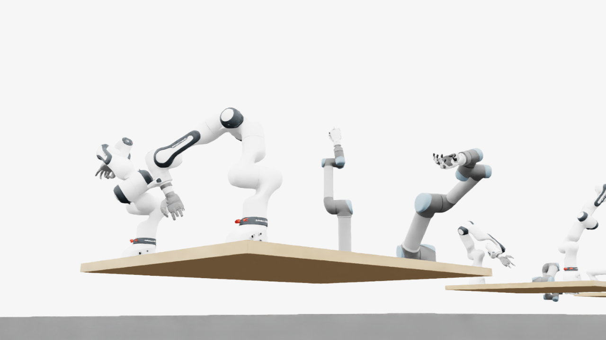
部分初始图像；未通过相机组验收。Partial initial image; camera group not qualified.

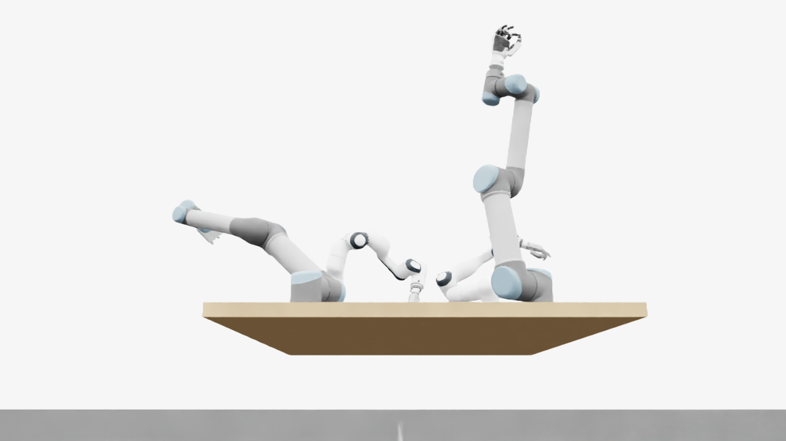
部分初始图像；未通过相机组验收。Partial initial image; camera group not qualified.
失败分析Failure analysis
本轮增加的画面说明采集已到达更多环境，但不足以区分渲染、状态保持、记录成本或其他因素的贡献。预渲染上下文确实被保存，但这仅是观测，不能据此断言超时或此前崩溃的根因已修复。The additional images show capture reaching more environments, but do not separate contributions from rendering, held-state checks, recording costs or other factors. Pre-render context was saved, but observation alone does not establish that the timeout or earlier crash cause was fixed.
外部几何排序提案仍存在阻断性的源码审阅问题；后续修复不在本快照中。栈观测提案只通过源码审阅，尚未集成本轮原生采集。两者都不是本轮安全或运行收益的证据。The foreign-geometry ordering proposal still has a blocking source-review finding; later repairs are outside this snapshot. The stack-observation proposal passed source review only and was not integrated into this native attempt. Neither establishes safety or runtime gains.
限制Limitations
V8 的独立读取器只核验了失败收据，不能提供完整轨迹与像素复算。V7 的字节镜像完成并保留 SSD 原件，但归档成功不改变原生失败，也不构成物理验收。The V8 independent reader checked failed receipts only; it provides no complete trajectory or pixel reconstruction. V7 byte mirroring completed and retained SSD originals, but successful archiving neither changes native failure nor establishes physical acceptance.
实际驱动峰值、接触新鲜性、力矩坐标、终端集合及全局误差界仍缺乏完整验收证据。原 27 项相机状态保持要求继续有效；新增 42 项只是未采纳提案，不是用户新增的资格要求。任务未运行，正式留出集未开启。Actual drive peaks, contact freshness, wrench coordinates, terminal sets and a global error bound still lack complete acceptance evidence. The original 27 camera held-state requirements remain; the proposed 42 are not adopted and are not a new user qualification requirement. Tasks were not run and the formal holdout remains unopened.
验收表Acceptance table
| 验收项Criterion | 已有证据Available evidence | 尚缺什么What remains missing |
|---|---|---|
| 模型预测Model predictions | 两个独立分母共40,960；预测已评估。Two separate denominators totaling40,960; predictions evaluated. | 模型清空标签不等于物理安全；原空调度保留。Predicted-clear labels are not physical safety; original empty schedule retained. |
| 完整原生采集Complete native capture | 本轮只提交初态，完整组为0。This attempt committed an initial state only; complete groups0. | 同32候选的全部挑战微步、最终状态及完整相机组。All challenge microsteps, final states and complete camera groups for the same32. |
| 独立数据验收Independent data acceptance | 有失败收据与初态范围诊断。Failed receipts and initial-state scope diagnostics exist. | 全部74维状态、几何、逐步接触、像素与状态保持的完整复算。Complete reconstruction of all74 states,geometry,per-step contact,pixels and held states. |
| 物理安全Physical safety | 尚未通过；安全银行为0。Not yet passed; safety bank0. | 实际驱动峰值、接触与误差界等完整权威证据。Complete authoritative evidence for actual drive peaks,contacts,error bounds and other requirements. |
| 任务与留出验证Tasks and holdout | 任务未运行；留出集未开启。Tasks not run; holdout unopened. | 原任务验收与后续预定验证，不能用模型预测或相关重试替代。Original task acceptance and planned validation; predictions or related retries do not replace them. |
证据附录：精确字段、退出状态与复现链接Evidence appendix: exact fields, exit statuses and reproduction links
| 要求与证据层Requirement and evidence layer | 已有结论Available conclusion | 尚未完成的验收Remaining acceptance |
|---|---|---|
| MODEL_ONLY | 原8192：8018NEG /174预测CLEAR /0UNKNOWN；补32768：31986NEG /782预测CLEAR /0UNKNOWN；分母独立，累计40960。Original8192:8018NEG /174predictedCLEAR /0UNKNOWN; supplemental32768:31986NEG /782predictedCLEAR /0UNKNOWN. Separate denominators,cumulative40960. | 初态模型预测不是物理或task资格；不能合并为IID安全样本或借格配额。Initial model predictions are not physical or task qualification;no pooled IID safety cohort or quota borrowing. |
| NATIVE / full74 | V9提交micro[0]，仅初态；ENTRY、producer和ProfileClose缺失。V9 commits micro[0],initial only;ENTRY,producer andProfileClose are absent. | 需要32×13行/12实际步与全74 q/qd/target、硬74/速度74/soft26检查、真实闭合链。Need32×13 rows/12 actual steps,full74 q/qd/targets,hard74/speed74/soft26 checks and genuine closure. |
| RAW / geometry / contacts | V8 reader实际2/2/2：CLOSED_FAILED_NATIVE_RECEIPTS_ONLY。V9 row0为父级诊断非独立RAW。V8 reader actual2/2/2:CLOSED_FAILED_NATIVE_RECEIPTS_ONLY. V9 parent row0 diagnostic is not independentRAW. | 需独立9021身份/几何、82标量/body映射、逐micro contact freshness、时钟与before/after实际参数；初始freshness UNKNOWN。Need independent9021 identity/geometry,82 scalar/body mapping,per-micro contact freshness,timing and actual before/after parameters;initial freshness UNKNOWN. |
| CAMERA / all groups | 六张选定partial原图，0完整相机组；producer单图标签保留，不转资格。Six selected partial originals,0 complete camera groups;producer single-view labels are retained without promotion. | 原32初始+32最终及12micro全部alarm组；4手组各≥3视角/广角≥3、间隔≥30°，palm2048/finger512/body64；三幅广角中四臂与两桌各自峰值≥1024像素，关键原生forearm/wrist2 body各自峰值≥128像素；零覆盖缺口。Original32 initial+32 final and all alarm groups across12 microsteps;4 hand groups with≥3 views each and≥3 wide views,≥30° separation,palm2048/finger512/body64; across the three wide views each of four arms and each of two tables must peak at≥1024 pixels, and each critical native forearm/wrist2 body at≥128 pixels; zero coverage gaps. |
| HELD / camera state | original27 mandatory；latest42仅NEW_PROPOSED_NOT_ADOPTED，历史catalogue未绑定。Original27 mandatory;latest42 onlyNEW_PROPOSED_NOT_ADOPTED,historical catalogue unbound. | 完整组需原27状态逐capture bitexact；42不是用户明确的新资格要求。Complete groups require the original27 states bitexact at every capture;42 is not a newly declared user acceptance requirement. |
| ARCHIVE / V7 mirror | 8171文件/1156446835字节source/NAS读回SHA一致，SSD保留。8171 files/1156446835 bytes match source/NAS readback SHA;SSD retained. | 仅字节archive；旧native−9/raw9/outer1/tool1保持，不升级RAW或物理验收。Byte archive only;old native−9/raw9/outer1/tool1 is retained,no RAW or physical promotion. |
| SOURCE / proposals | foreign geometry源审阅NEEDS_FIX；C-stack源审阅COND_PASS_SOURCE_ONLY，未集成V9。Foreign geometry source review NEEDS_FIX;C-stack review COND_PASS_SOURCE_ONLY,not integrated intoV9. | 后续修复/采纳与真实native效果需另行证据；这些工程审阅不是崩溃原因或native证书。Later repair/adoption and actual native effects need separate evidence;engineering reviews are not crash causes or native certificates. |
| PHYSICAL / peak authority | CONTACT、实际implicit-drive peak、wrenchframe、terminal set、global error bound仍UNKNOWN。CONTACT,actual implicit-drive peak,wrenchframe,terminal set and global error bound remain UNKNOWN. | 模型CLEAR、平均力、SOURCE检查、partial画面都不能证明峰值安全；typed74/hand48权威仍需完整证据。ModelCLEAR,average forces,source checks and partial views cannot prove peak safety;typed74/hand48 authority still needs complete evidence. |
| TASKS / holdout | BANK0；tasks NOT_RUN；formal holdout UNOPENED。BANK0;tasks NOT_RUN;formal holdout UNOPENED. | 完整要求false；本报告不打开holdout，也不新增/改变生产资格门。Full requirements false;this report neither opens the holdout nor adds or changes production qualification gates. |
{
"frozen_UTC": "2026-10-11T04:42:16.350993+00:00",
"V9": {
"native_exit": -9,
"raw_status": 9,
"CPU_check_exit": 0,
"outer_exit": 1,
"tool_exit": 1,
"elapsed_seconds": 1215.1310947341844,
"deadline_seconds": 1200,
"resource_abort": "TimeoutError: max_wall exceeded",
"error": "TimeoutError: max_wall exceeded",
"signals": [
{
"pid": 3455020,
"signal": 15,
"identity": {
"pid": 3455020,
"ppid": 3451735,
"pgid": 3455020,
"sid": 3455020,
"startticks": 181467986,
"state": "S"
}
},
{
"pid": 3455020,
"signal": 9,
"identity": {
"pid": 3455020,
"ppid": 3451735,
"pgid": 3455020,
"sid": 3455020,
"startticks": 181467986,
"state": "S"
}
}
],
"registered_campaign_owned_fresh_absent": 91,
"registered_identity_breakdown": {
"native": 89,
"CPU_check": 1,
"outer": 1
},
"gallery_CPU_worker_count_not_inferred": true,
"micro_ids": [
0
],
"allocated_env_dirs": [
"env_000",
"env_001",
"env_002",
"env_003",
"env_004",
"env_005",
"env_006",
"env_007",
"env_008",
"env_009",
"env_010"
],
"allocated_env_count": 11,
"partial_PNG_filename_count": 399,
"completed_camera_groups": 0,
"qualified_camera_groups": 0,
"all32_complete_prefix": "NOT_EVALUATED",
"physical_prefix_advance_count": "UNKNOWN_PRODUCER_ABSENT",
"ENTRY": null,
"PRODUCER": null,
"ProfileClose": null,
"source_selected_operation_files_unchanged": true,
"selected_operational_file_count": 36,
"failure_cause": "UNKNOWN",
"same32_related_not_new_IID": true
},
"initial_numeric_scope": {
"scope": "COMMITTED_INITIAL_ROW_METADATA_ONLY_NOT_INDEPENDENT_RAW",
"examined_rows": [
0
],
"preallocated_rows_1_to_12_examined": false,
"parent_raw9021_min_m": 0.0007192343473434448,
"producer_initial_violation_bits_all_false": true,
"parent_scalar82_max": 872.3035888671875,
"scalar_sum_not_net_force": true,
"contact_freshness": "UNKNOWN",
"contact_acceptance": false,
"all32_force_failure_inferred": false,
"all32_initial_safe_inferred": false,
"simulation_step": 3.0,
"simulation_time_s": 0.025000001303851604,
"settle_is_not_12_challenge_steps": true,
"independent_RAW_math": false,
"independent_pixels": false,
"independent_scope_peer": {
"path": "/mnt/nas/data/lyf/double_hand/safety_verified_fallback_20261010_0352/astra_full74_native_v9_initial_contact_scope_supplement_v1/FINAL_HANDOFF_V1.json",
"sha256": "18bf8bfc6b70b999852d4a367e439fd45eb0a89109886d8dba692108592a0793"
},
"scope_verdict": "PASS_COMMITTED_ROW0_SCOPE_ONLY",
"CONTACT0": "UNKNOWN"
},
"V8_reader": {
"ref": {
"path": "/mnt/nas/data/lyf/double_hand/safety_verified_fallback_20261010_0352/parent_supplement_native32_profile_intake_v1/CPU/parent_ssd_v8_reader01/PARENT_ACTUAL_READER_CLOSED_V1.json",
"sha256": "92b971e39eda062bab473710b81b9d9981e0194a7252153a9216e730ddcdf020"
},
"result": {
"path": "/mnt/nas/data/lyf/double_hand/safety_verified_fallback_20261010_0352/astra_full74_supplemental_mixed32_v8_ssd_independent_reader_v1/actual_closed01/INDEPENDENT_MIXED32_RAW_V1.json",
"sha256": "821ee538e96a72c54daf354ae080e641861e324c618c9d9dc41f21c180e73ba8"
},
"actual_exits": [
2,
2,
2
],
"status": "CLOSED_FAILED_NATIVE_RECEIPTS_ONLY",
"physical_data": "NO_DURABLE_PRODUCER_RECEIPT",
"complete": false,
"RAW_qualification": false
},
"foreign_geometry": {
"peer": {
"path": "/mnt/nas/data/lyf/double_hand/safety_verified_fallback_20261010_0352/astra_full74_foreign_render_geometry_independent_source_review_v1/REVIEW_V1.json",
"sha256": "090efe8ef0e53cb06e83b7c93cdd13abc7f8a2f3b2d07c1b2593b886b54c3ca8"
},
"verdict": "NEEDS_FIX_SOURCE_ONLY",
"native_pass": false,
"later_repair_not_bound": true
},
"cstack": {
"peer": {
"path": "/mnt/nas/data/lyf/double_hand/safety_verified_fallback_20261010_0352/astra_full74_render_hang_cstack_independent_source_review_v2/REVIEW_V2.json",
"sha256": "550e5ea59821e0a644dec61c40a53b8d0f1f3e3cd75a080225e0d0d5a981fada"
},
"verdict": "COND_PASS_SOURCE_ONLY",
"native_integrated": false,
"native_or_attach_runs": 0,
"native_certificate": false
},
"held_state_scope": {
"original27": "MANDATORY",
"latest42": "NEW_PROPOSED_NOT_ADOPTED",
"historical_catalogue": "NOT_BOUND",
"user_explicit42_requirement": false
}
}450是候选数量，不是秒数；state.json在整批32最终状态核验后才写。缺失不能推断所有lane失败或没有初态。原图图注与审计文件保持原字节，可从下列链接下载。450 is a candidate count,not seconds;state.json is written after final verification of the whole32 batch. Absence does not imply every lane failed or that no initial states existed. Original image captions and audit files retain their source bytes and are downloadable below.
- 历史公开12关闭证明 / Published12 closure
- 历史12候选 / Historical12 candidate
- V8失败收据读取 / V8 failed receipt reader
- V7字节镜像 / V7 byte mirror
- V8原图与UTF-8图注 / V8 originals and UTF-8 captions
- V9真实关闭证明 / V9 actual closure
- V9原图与原图注 / V9 original images and captions
- 初态数值范围诊断 / Initial numeric scope
- 独立初态接触范围复核 / Independent initial contact scope
- 外部几何SOURCE提案 / Foreign geometry source proposal
- 外部几何源码阻断复核 / Foreign geometry blocking review
- 栈观测SOURCE提案 / Stack-observer source proposal
- 栈观测SOURCE复核 / Stack-observer source review
- 栈观测SOURCE关闭证明 / Stack-observer source closure
- 冻结逐项事实 / Frozen typed facts
- 原字节报告12 / Original-byte REPORT12
报告12：部分原生画面与证据边界REPORT12: partial native views and evidence boundaries
完整要求仍未完成；BANK0。以下四图来自失败的V7初态，均未资格化，0完整相机组。Full requirements remain incomplete; BANK0. These four views come from failed V7 initial capture; none is qualified and there are0 complete camera groups.
科学截止快照（不是实时）Frozen scientific cutoff, not live status： / Asia/Shanghai 2026-10-11T11:22:09.318440+08:00
V8 native / raw / outer / tool: [-9, 9, 1, 1]. 这是独立列出的后续相关重试终态；下方图像仍属于历史V7。This is the separately listed later related retry; the images below remain historical V7 views.
原native工作期限1200秒；TERM15后原grace再KILL9；elapsed包含原grace。原因UNKNOWN，超时不证明V4崩溃已修复；SOURCE工程测试不代替原生验收。Original native deadline1200s;TERM15 followed by original grace andKILL9;elapsed includes grace. Cause UNKNOWN;timeout does not prove the V4 crash was fixed. SOURCE engineering tests do not replace native acceptance. elapsed 1213.1610117419623s.
CPUcheck0；13个登记owned身份现已不存在。仅env000的24张partial PNG、micro[0]、0相机组；ENTRY / PRODUCER / ProfileClose均缺失。物理prefix推进数UNKNOWN_PRODUCER_ABSENT。这些目录、PNG和初态producer记录不能补足32×13或12步验收。CPUcheck0;13 enrolled owned identities are absent. Only env000 with24 partial PNGs,micro[0],0 camera groups;ENTRY / PRODUCER / ProfileClose are missing. Physical prefix advances remain UNKNOWN_PRODUCER_ABSENT. Directories,PNGs and producer initial records cannot fill32×13 or12-step acceptance.
V8独立FAILED_METADATA审计已真实闭合，PASS_METADATA_SCOPE_ONLY：核验终态、SOURCE、journal及缺失收据与env000文件名。仅micro[0]、24个PNG文件名；完整12步prefix为0、完整相机组为0，32候选全NOT_EVALUATED。没有解码相机像素、NPY尾部或重算RAW数学；这不是camera/native/物理PASS。The V8 independent FAILED_METADATA audit genuinely closed: PASS_METADATA_SCOPE_ONLY for waits, SOURCE, journal, missing receipts and env000 filenames. Only micro[0] and24 PNG filenames;0 complete12-step prefixes,0 complete camera groups, all32 candidates NOT_EVALUATED. No camera pixels or NPY tails were decoded and no RAW math was recomputed. This is not camera, native or physical acceptance. FAILED_METADATA review

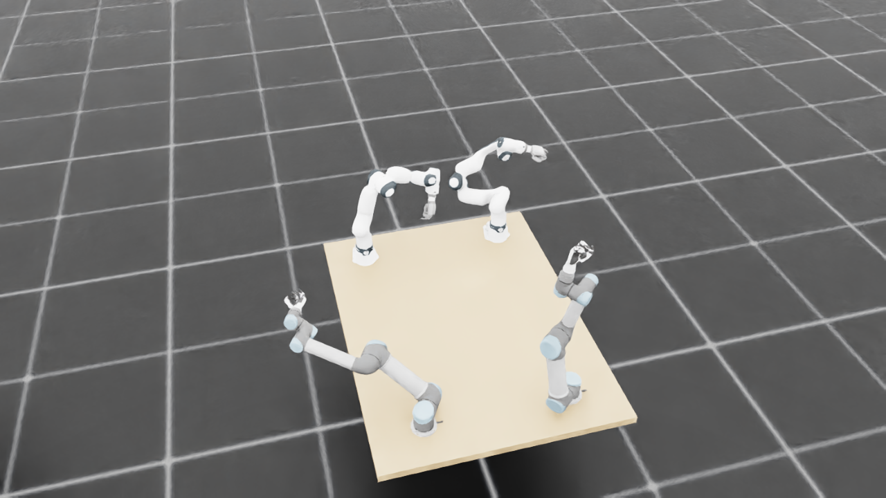

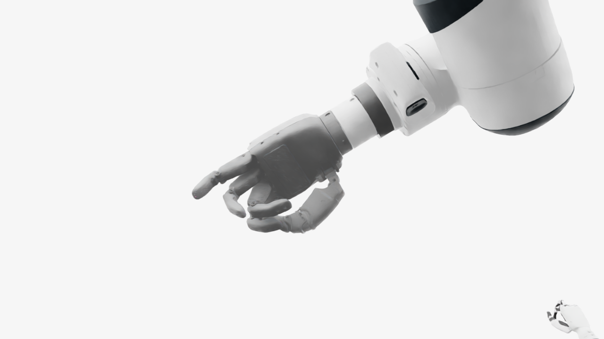

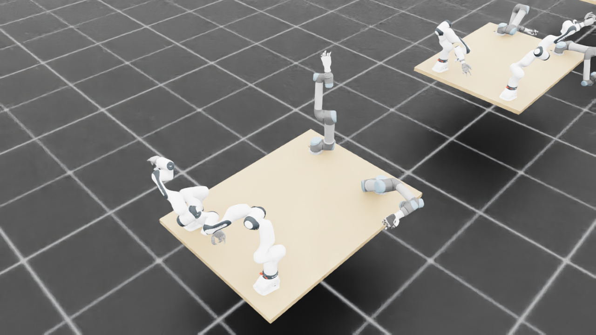

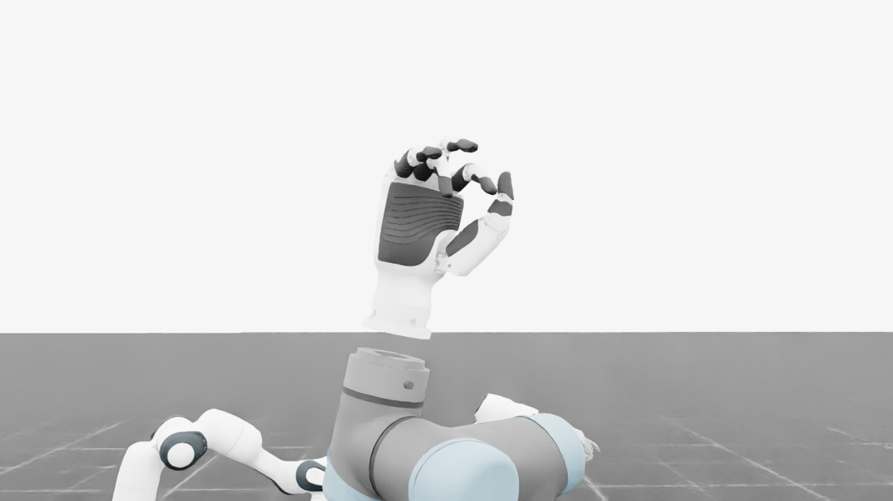
UR04局部两流各识别目标U_R手43323像素、同环境F_L手601像素；两流是同一画面，不能相加或算作独立样本。原predicate仅拒其他环境的手；NoHide禁止可见性修改，并不要求其它手不可见。没有复现mask bug，也不新增同环境其它手的资格门或unsafe判定。UR04 local instance and semantic streams each identify43323 target U_R pixels and601 same-environment F_L pixels. They describe the same image; counts are not additive or independent samples. The original predicate rejects hands from other environments. NoHide forbids visibility mutation; it does not require other hands to be absent. No mask bug was reproduced; no extra same-environment-hand qualification gate or unsafe label is introduced.
UR04部分非手semantic原生身份仍UNKNOWN（66647像素）；不能据此断言未标注手或clean。wide01的env5=47867、env10=185是局部instance全场景范围，不能与早期仅机器人计数直接比较。UR04 non-hand semantic native identity remains partly UNKNOWN(66647 pixels); this does not establish an unlabelled hand or a clean view. wide01 env5=47867 and env10=185 are local instance counts across the whole scene; they cannot be compared directly with earlier robot-only counts.
V8作者43项与独立29项SOURCE检查真实闭合；这些是工程检查，不是原生实验样本或camera/native验收。V8 author43 and independent29 SOURCE checks genuinely closed. These are engineering checks, not native experiment samples or camera/native acceptance.
| 项目Item | 真实范围与缺口Actual scope and gap |
|---|---|
| V7 reader v3 | receipts-only; actual worker/outer/tool2/2/2; NO_DURABLE_PRODUCER_RECEIPT; not RAW numerical or camera PASS |
| Camera state | original27 MANDATORY; latest42 NEW_PROPOSED_NOT_ADOPTED; historical catalogue NOT_BOUND;42 is not an explicit user acceptance requirement |
| Strong camera | original thresholds unchanged;32 initial +32 final +all alarm groups across12 microsteps;4 hand groups ×3 views +3 wide views/group; partial PNGs cannot fill absent groups |
| MODEL_ONLY | 8192(8018NEG/174predictedCLEAR)+32768(31986NEG/782predictedCLEAR)=40960; original8192 EMPTY retained; predictedCLEAR is not safety; same32 retries newIID0 |
| Physical acceptance | Drive / CONTACT / wrenchframe / terminal set / global error bound UNKNOWN; tasks NOT_RUN; holdout UNOPENED; fullrequirementsfalse / BANK0 |
{"committed_micro_ids": [0], "physical_prefix_advance_count": "UNKNOWN_PRODUCER_ABSENT", "allocated_initial_env_dirs": ["env_000"], "partial_PNG_count": 24, "completed_camera_groups": 0, "ENTRY": null, "PRODUCER": null, "ProfileClose": null, "held27": "UNKNOWN_MISSING_BOUND_FIELD", "independent_RAW_scope": "UNKNOWN_MISSING_BOUND_FIELD"}报告11：实际终态与验收缺口REPORT11: actual terminal outcome and acceptance gaps
完整安全需求未完成；BANK0。模型预测、源代码检查、实际数据与物理验收各有独立范围。Full safety requirements remain incomplete; BANK0. Model predictions, source checks, actual data and physical acceptance have distinct scopes.
科学快照截止（不是实时）Frozen scientific cutoff, not live status： / Asia/Shanghai 2026-10-11T10:05:21.689269+08:00
| 原生 / 父级 / 工具Native / outer / tool | ENTRY与数据审计ENTRY and data audit |
|---|---|
| {"native_exit": -9, "native_raw_status": 9, "outer_exit": 1, "tool_exit": 1} | {"ENTRY": "UNKNOWN_MISSING_ENTRY", "RAW": "UNKNOWN_NOT_AUDITED"} |
| 范围Scope | 真实观测Actual observation | 验收边界Acceptance limit |
|---|---|---|
| native / outer / tool | −9 / raw9; outer1 / tool1; original1200s; TERM15 →10s grace→KILL9; elapsed1212.4210530288983s; CPUcheck0;121 exact owned fresh absent | failure preserved, no physical acceptance |
| allocated versus completed | 14 allocated initial env dirs;548 partial PNG;0 cameraGroups | not14 completed groups; pixels/held27/latest42 UNKNOWN |
| numeric journal | committed micro[0] only; missing1..12; full32 independent prefix NOT_EVALUATED | ENTRY / PRODUCER / ProfileClose MISSING; physical prefix advances UNKNOWN_PRODUCER_ABSENT |
| producer INITIAL observations | flags32×7 allfalse; exact q/qd/target restore32; root admission32 | PRODUCER_INITIAL_ONLY; not independent RAW or full-prefix PASS |
V5的15个与V7的14个allocated目录来自相关重试，并有不同启动与SOURCE条件；不得用目录数比较native收益。SSD版本保留原fresh SDK getters、codec与NAS phase/journal；真实CPU文件38.060401/3.076201ms不是原生端到端加速证明。V5’s15 and V7’s14 allocated directories are related retries with different startup and source conditions; directory counts cannot measure native gain. Fresh SDK getters,codec and NAS phase/journal were retained;CPU file38.060401/3.076201ms is not a native end-to-end speedup.
- public10
- public10_handoff
- host_closed
- host_compact
- IO_closed
- IO_readout
- fsync_closed
- fsync_readout
- V6_preApp_closed
- V7_source
- V7_API_closed
- camera_protocol
- producer_micro0
- producer_admission
- parent_closed
- native_wait
- outer_wait
- tool_closure
- Frozen typed facts / 冻结事实
- PUBLIC10 frozen archive / 历史原字节
| 层级Layer | 所需证据或已知范围Required evidence or known scope | 实际状态 / 缺口Actual status / gap |
|---|---|---|
| SOURCE / APISOURCE / API | V7 SOURCE 4c6e、实际API348闭合；工程检查V7 SOURCE 4c6e and actual API348 closed; engineering checks | 不能代替真实原生或像素验收Cannot replace native measurement or pixel acceptance |
| 模型分母Model denominators | 8192: 8018 NEG / 174 predicted CLEAR; 32768: 31986 NEG / 782 predicted CLEAR; cumulative40960 MODEL_ONLY | 原8192 EMPTY保留；预测CLEAR不是安全状态库Original8192 EMPTY retained; predicted CLEAR is not a safety bank |
| 原生全74状态Full74 native state | q74 / qd74 / target74; 32 related lanes × 13 journal points; 12 microsteps | NOT_ACCEPTED_PENDING_INDEPENDENT_RAW |
| 数值与backendNumerics and backend | hard74 / speed74 / soft26 / raw9021 / scalar82; actual clock and source/readback | 本报告不重解码RAW；依赖单独已闭合审计No RAW redecoding here; a separate closed audit is required |
| 原始相机Raw cameras | 32 initial + 32 final + all alarm groups across12 micro; 4 hand groups ×3 +3 wide views/group | 0 |
| held与设备身份Held state and device identity | native27 bitwise before/after; simulation time unchanged; actual CUDA/Kit identity | {"held27_status": "UNKNOWN_MISSING_BOUND_FIELD", "device_identity": "UNKNOWN_MISSING_BOUND_FIELD"} |
| 接触与driveContact and drive | production DrivePeak / CONTACT / wrench frame / terminal set / global error bound | UNKNOWN; 不存在全局物理误差界No global physical error bound |
| 任务 / holdoutTasks / holdout | tasks NOT_RUN; holdout UNOPENED; BANK0; complete=false | 同32重试相关；新增IID=0Related retries of the same32; new IID=0 |
| 范围Scope | 量化门槛Quantitative threshold |
|---|---|
| 4 hands ×3 views | pairwise ≥30°; palm ≥2048 px; each5 finger family ≥512 px |
| all native hand bodies | each peak ≥64 px; zero gaps |
| 3 wide views / 4 arms / 2 tables | each arm ≥1024 px; each table ≥1024 px |
| critical forearm + wrist2 | each native body ≥128 px; zero gaps |
| native27 / time / inventory | ALL registered before-after bitwise equal; time unchanged; raw RGB/masks/path/SHA; independent pixels |
组内各视角峰值不是完整表面、接触点可见性、无遮挡或物理安全证明。初末态与全部alarm组不能靠部分目录或PNG数量补齐。Per-view group maxima do not prove full-surface or contact-patch visibility, absence of occlusion, or physical safety. Directory or PNG counts cannot fill missing initial/final or alarm groups.
| 边界Boundary | host seconds | 解释Interpretation |
|---|---|---|
| NPZ file / nested codec | 310.338412 / 61.278319 | 5076 begun / 5075 closed; file median43.752434ms; nested, NONADDITIVE |
| PNG file / nested codec | 96.213480 / 65.229639 | NONADDITIVE |
| JSON file / nested codec | 113.641792 / 6.460142 | NONADDITIVE |
| existing render | 45.278053 | host boundary, not GPU kernel time |
| completed boundary overhead LOWERBOUND | 332.812 | includes logger/setup/scheduling; NOT pure IO; journal_IO_ns UNKNOWN_PROFILE_CLOSE_ABSENT |
| root / method | median ms | 证据边界Scope |
|---|---|---|
| NAS_CIFS / compressed_original | 38.060401 | 3 related original samples ×5 repeats; typed bytes checked |
| SSD_NVME_EXT4 / compressed_original | 3.076201 | 3 related original samples ×5 repeats; typed bytes checked |
| NAS_CIFS / hardlink_verified_current | 105.011537 | 3 related original samples ×5 repeats; typed bytes checked |
NAS hardlink inode身份UNKNOWN_NOT_ADOPTABLE；105.011537ms包含实际验证路径，不能宣传link加速。fsync基准保留每event fsync与完全相同bytes；本工作负载没有显示SSD收益。不能外推已改善V7时限、崩溃原因或物理结果。NAS hardlink inode identity is UNKNOWN_NOT_ADOPTABLE;105.011537ms includes the actual verification path and does not support a link speedup claim. The fsync benchmark preserves every-event fsync and identical bytes; this workload demonstrates no SSD benefit. Neither benchmark establishes a V7 speedup, crash cause, or physical outcome.
| root | total close median ms |
|---|---|
| NAS_CIFS | 2871.816309 |
| SSD_NVME_EXT4 | 3531.994723 |
V6 SSD路由尝试真实before-App失败native1、outer1/tool1，0物理步与0render；旧失败永久保留。V7 SOURCE/API0仅是修复工程证据，与原生终态及DATA验收分别列明。The V6 SSD routing attempt failed before App with native1,outer1/tool1,0 physics steps and0 renders; this failure is retained. V7 SOURCE/API0 are engineering evidence, distinct from native closure and DATA acceptance.
报告10：V5期限失败已关闭，CPU编码诊断不构成原生加速或安全验收
Report10: V5 wall-time failure closed; CPU codec diagnostics establish neither native speedup nor safety.
冻结事实截止 / Frozen cutoff：2026-10-11 00:11:44 UTC／Asia/Shanghai 2026-10-11 08:11:44。此版本是静态snapshot；不包含截止后的SOURCE、V6或新native结果。Later source changes and future native attempts are excluded.
| 范围 / Scope | 真实关闭 / Actual closure | 验收缺口 / Acceptance gap |
|---|---|---|
| 原生等待 / Native wait | native−9/raw9；1200s original deadline；TERM15→KILL9；elapsed1212.304119881941s including original shutdown grace | 资源/错误记录TimeoutError: max_wall exceeded；不是新natural SIGSEGV |
| 父级与进程 / Parent and ownership | outer1/tool1；127 exact enrolled identities fresh absent；CPU check0 | true closure preserves failed data；不是native PASS |
| 数值提交 / Numeric commits | allocated13；micro[0] committed1；缺1..12；同32 full-prefix NOT_EVAL | 实际未提交physics活动UNKNOWN；不把allocated tail当12步 |
| 相机与测量 / Camera and measurement | 15 initial envdirs；0 group receipt；ENTRY/PRODUCER/ProfileClose MISSING | held27/latest42/RAWpixels/journal_IO UNKNOWN；dirs ≠ qualification |
V5原生从23:38:25.622246 UTC开始，23:58:37.926347 UTC真实wait4关闭，原工作期限1200秒；supervisor向精确owned native发送TERM15后KILL9，native−9/raw9、outer1/tool1。elapsed1212.304119881941包含既定shutdown grace；不是延长工作预算。127个注册owned身份已fresh absent，失败和超时原因原样保存。The genuine terminal wait closes a failed attempt; it does not certify its products.
只有row000/micro0提交，1..12缺失。13行NPY是预分配，未提交tail未解码。15envdirs、0group/state receipt不构成相机覆盖；ENTRY、PRODUCER、ProfileClose缺失。held27 UNKNOWN_INCOMPLETE_RECEIPTS；latest42 UNKNOWN_CATALOGUE_UNBOUND；RAWpixels UNKNOWN_NOT_AUDITED；journal_IO UNKNOWN_PROFILE_CLOSE_ABSENT，实际未提交physics活动UNKNOWN_WITHOUT_FULL_CLOCK_AUDIT。独立peer仅核验终态、metadata与SHA，不执行RAW数学或像素审计。Missing lifecycle, camera and measurement boundaries remain UNKNOWN.
| 记录 / Record | 实际闭合 / Actual evidence | 边界 / Limit |
|---|---|---|
| release2 SOURCE independent peer9d | source-only COND_PASS；绑定原source graph ac335；真实CPU worker/outer/tool0 | 不是完整原生DATA；保留09的旧q1 sourceguard失败1 |
| 实际q2 API d1a9 | frozen request harness CPU0/tool0；无external wrapper；此CPU检查未启动native | 工程入口检查不是物理样本／不抹去旧失败 |
| owned process map fe389 | 23:39:29.277906 UTC同PID/startticks，6个570.124.06库含libcuda已映射 | 映射片段不是final CUDA UUID/Kit ENTRY；缺失最终身份UNKNOWN |
release2 source-only审查9d、q2实际CPU API d1a9和owned process map fe389是三个不同范围。q1失败1与首次普通import sourceguard拒绝永久保留；后来q2 CPU0只确认冻结入口。fe389在同一owned PID/startticks看到570.124.06 EGL/GLX/libcuda/glcore/NVML/PTXJIT库映射，全局驱动未变；没有完整ENTRY，所以最终actual CUDA UUID与Kit identity仍UNKNOWN_ENTRY_MISSING。本报告仅公开选择性已关闭的mapped-library片段，不复制foreign GPU telemetry或查询stdout。A process map is not final device identity or a demonstrated crash repair.
| 相关角色 / Related role | compressed median / p95 (ms) | stored median / p95 (ms) | archive bytes |
|---|---|---|---|
| lexical_first_initial_before_all64 | 2.105811 / 2.307947 | 0.362430 / 0.423842 | 96896 → 116370 (+19474; +20.097836856%) |
| lexical_first_wide_before | 2.069895 / 2.088232 | 0.341347 / 0.355120 | 96896 → 116370 (+19474; +20.097836856%) |
| lexical_first_hand_before | 2.057026 / 2.281325 | 0.348348 / 0.374338 | 96896 → 116370 (+19474; +20.097836856%) |
James真实CPU benchmark：3个预声明角色来自同一原始archive SHA，相关held-state工作负载；每sample/codec 3warmups、5measurements，表中median/p95保留原数值。compressed约2.1ms、stored约0.35ms，archive96896→116370字节，+19474／+20.097836856%；这不是生产端到端倍速。10个相关before/after pairs的27 typed字段（keys/dtype/shape/layout/rawbytes）全等；27是held-state keys，不是27张相机。容器bytes可不同，typed payload保持一致。These are related CPU observations, not diverse IID native trials.
| 已知 / Known | 仍未得到 / Missing |
|---|---|
| metadata peer6c963实际关闭 / Closed metadata peer | 不是数值RAW、RGB/mask/角度/held完整验收 |
| 10related pairs ×27typed fields逐字节相等；codec输出全typed identity验证 | 不是未来所有payload相同；不能跳过fresh27/latest42 getters |
| 5 measurements＋3 warmups eachsample/codec；p95仅5个观测的描述性插值 | 未测NAS/SSD/file IO/flush/fsync/冷缓存/并发native/端到端耗时 |
| V4−11与V5原期限timeout均真实保留 | crash cause UNKNOWN；timeout bottleneck UNKNOWN；没有native speedup证明 |
仅BytesIO writer耗时，不含file IO/flush/fsync/hash/decode。不测NAS、SSD durability、冷缓存、并发Kit或native端到端收益；不能从约42ms现场writer p50减去2ms并把余量归因fsync。未部署codec/dedup优化，不跳过future fresh27/latest42，也不授权下一原生。A codec diagnostic cannot assign the timeout bottleneck or justify omitting fresh getters.
V4−11原因UNKNOWN保留，V5期限timeout不是crash已修复的证明。同32related重试新增IID为0，full32 NOT_EVAL、BANK0；完整需求仍false。原8192／8018 NEG／174预测CLEAR／0 UNKNOWN与原EMPTY/HELD保留；补充32768／31986 NEG／782预测CLEAR／0 UNKNOWN独立，16×512与16×2048不合并物理样本。累计40960只MODEL_ONLY（40004 NEG／956预测CLEAR／0 UNKNOWN）。Drive／CONTACT／wrench frame／terminal set／global error bound UNKNOWN；tasks NOT_RUN、holdout UNOPENED；旧8图15原RGB及所有失败archive字节保留。Model prediction, engineering closure and physical acceptance have separate denominators.
- 父级真实timeout失败闭合 / Actual parent failure
- 独立failed metadata闭合（非RAW）
- 独立终态与缺口metadata review
- 真实native−9/raw9 wait4
- 真实outer1 wait4
- 真实parent tool1 terminal
- release2 SOURCE-only distinct review9d
- 真实q2 API CPU0 d1a9（旧q1失败保留）
- James CPU codec/dedup实际闭合fb5acc
- 原CPU timings与typed equality结果512977
- CPU诊断范围与限制10215
- 真实CPU benchmark worker wait0
- 真实CPU benchmark outer wait0
- owned mapped-library选择性历史片段 / Bound historical map projection
- 冻结typed事实与原NAS refs（未复制rawtree/journal）
- 已发布报告09冻结历史正文 / Published09 archive
报告09：部分证据文件核验完成，完整原生挑战仍未评估
Report09: partial evidence inventory verified; complete native challenge remains unevaluated.
事实截止 / Frozen cutoff：2026-10-10 23:22:37.346130 UTC／Asia/Shanghai 2026-10-11 07:22:37.346130。所有后续repair或native结果不属于此静态快照。Later repairs and native results are excluded.
| 范围 / Scope | 闭合记录 / Closed record | 仍未知 / Remaining gap |
|---|---|---|
| 原始文件 / Native files | 13641 SHA/signature checked；919 PNG / 920 groups / 1 orphan，全保留 | 不重新解码像素、角度或数值；not RAW mathematics |
| 数值行 / Numeric rows | allocated13；committed micro[0]、1行；缺1..12；postinitial committed0 | 实际physical advances UNKNOWN；allocated tail is not evaluated |
| 相机 / Cameras | 24 initial directories；0 camera state receipt；producer labels432 qualified /487 rejected /1 None | 独立group qualification UNKNOWN_NOT_AUDITED；producer labels ≠ camera PASS |
| 验收 / Acceptance | 同32 related；full32 NOT_EVAL；BANK0；原native−11/raw139 outer1/tool1 | cause UNKNOWN；ENTRY/PRODUCER MISSING；not new IID |
独立 inventory peer实际核验13641文件的SHA/signature与membership，约1.90GB原文件保留在NAS，本报告不复制大raw tree、不重复扫描或解码。919 PNG、920 attempt groups与1 orphan均保留；orphan是未完成的文件组，并非额外成功相机。432 qualified／487 rejected／1 None是producer attempt标签，不能升级为独立camera state资格。A complete file inventory does not establish camera visibility or numerical validity.
| 字段 / Field | 预分配shape / Allocated | 提交shape / Committed | 数值谓词 / Values |
|---|---|---|---|
| q74 | [13, 32, 74] | [1, 32, 74] | NOT_RECOMPUTED |
| qd74 | [13, 32, 74] | [1, 32, 74] | NOT_RECOMPUTED |
| target74 | [13, 32, 74] | [1, 32, 74] | NOT_RECOMPUTED |
| raw9021 | [13, 32, 9021] | [1, 32, 9021] | NOT_RECOMPUTED |
| scalar82 | [13, 32, 82] | [1, 32, 82] | NOT_RECOMPUTED |
| violations | [13, 32, 7] | [1, 32, 7] | NOT_RECOMPUTED |
allocated13 ≠ committed13。已提交只有micro0／初始1行，1..12缺失；postinitial committed0不是“实际物理活动0”的证明。可能未提交的physics活动仍UNKNOWN_WITHOUT_PRODUCER_CLOCK_AUDIT。0 camera state receipt、完整32 NOT_EVAL、ENTRY与PRODUCER缺失仍保留。Preallocated tails cannot stand in for twelve completed physics steps.
| 记录 / Record | 实际结果 / Actual result | 边界 / Limit |
|---|---|---|
| profile sourceguard CPU API | worker1/tool1；external wrapper未启动；beforeKit/native | stale/unverified module collision: profile_runtime_v5；repair PENDING at cutoff |
| 进程本地570绑定 / Process-local570 | 69fc previous probe → fb0 bound probe；distinct f577 CPU review；selected NVML query0 | global driver unchanged；CUDA/Kit loaded identity PENDING_ACTUAL_NATIVE |
| 未来测量 / Future measurement | 本版不追加截止后的SOURCE／native结果 | no crash-cause proof, no successful native or speedup claim |
profile API检查真实worker1/tool1闭合，sourceguard在request_pair中的首次普通import之后拒绝stale/unverified profile_runtime_v5；Kit/native均未启动，外层wrapper wait为null。此处不是又一次native0或物理结果。repair截至23:22:37.346130仅PENDING，本报告不混入后来SOURCE闭合。The CPU refusal preserves the verification boundary; it adds no native experiment.
69fc→fb0绑定只在父进程拥有的local库目录；独立f577确认所选库与别名SHA，NVML query0。全局驱动未改。实际CUDA、torch、Kit、JIT和Vulkan加载身份仍PENDING_ACTUAL_NATIVE；查询不是资源许可、V4 SIGSEGV根因、成功运行或speedup证据。本报告只公开选择性binding metadata，不复制查询stdout、memory/free遥测或GPU进程清单。Process-local library binding is not a demonstrated crash fix or native success.
原8192仍8018 NEG／174预测CLEAR／0 UNKNOWN、原schedule EMPTY/HELD；补充32768仍31986 NEG／782预测CLEAR／0 UNKNOWN，16×512与16×2048分母分开。累计40960仅MODEL_ONLY台账（40004 NEG／956预测CLEAR／0 UNKNOWN），不得合成IID物理安全；same32相关重试新增IID为0。BANK0、requirements false；Drive／CONTACT／wrench frame／terminal set／global error bound UNKNOWN；tasks NOT_RUN，holdout UNOPENED。旧8图15原RGB与全部07/06/05/04历史和失败不删改。MODEL_CLEAR is not a safety bank; task and holdout acceptance remain absent.
- 独立inventory PASS_DATA_ONLY闭合 / Closed inventory DATA peer
- 完整metadata DATA审查（非RAW值重算） / Metadata review
- 父级inventory真实关闭 / Parent closure
- 独立inventory worker wait0
- 独立inventory outer wait0
- 真实CPU API失败1、native未启动 / Actual beforeKit CPU failure
- CPU failed worker wait1
- CPU failed tool1 terminal
- 进程本地绑定 distinct CPU closed review
- binding CPU worker wait0
- binding CPU outer wait0
- 选择性local binding metadata（无查询遥测）
- 冻结typed事实、NAS完整inventory refs与prefix SHA
- 冻结已发布报告08历史正文 / Published08 archive
报告08：同32原生崩溃，完整挑战仍未评估
事实截止：2026-10-10 22:03:37.385121 UTC／Asia/Shanghai 2026-10-11 06:03:37.385121。之后完成的独立失败metadata核验（22:04:35 UTC）只核验这些既存记录；没有追加后续native或profiling事件。
| 记录 | native wait / ENTRY | outer / tool | 提交步 / 相机 | 完整32挑战 |
|---|---|---|---|---|
| 首次v3（07已保留） | 0 / failed | 1 / 1 | 0步 / 0组 | 32 NOT_EVAL |
| 同32 v4实际失败 | −11 / raw139；ENTRY MISSING | 1 / 1 | row000；提交物理步0；24目录 / 完整组0 | 32 NOT_EVAL |
v4真实native SIGSEGV −11／raw139；outer1、tool1已reaped。ENTRY和PRODUCER均缺失。1086.5235147180501秒小于原1200秒预算；guardian未记录resource_abort、error或supervisor signals。本次记录不是guardian超时终止，但不能据此推断崩溃原因或所有资源风险已排除，原因仍UNKNOWN。
| 证据范围 | 已闭合事实 | 仍未测得 |
|---|---|---|
| 进程与guardian | native−11/raw139，1086.5235147180501s < 原1200s；resource_abort / error为空，supervisor signals=[] | 崩溃原因UNKNOWN；无fatal C++指令／stack |
| 原生数值与时间 | 持久化micro ID只有[0]；完整12步前缀0 | 初始数值未独立复算；未提交物理活动UNKNOWN |
| 原始相机与held状态 | 24个初始camera目录；完整group receipt0 | 像素／角度未审；all27/latest42 held UNKNOWN |
| 测量与验收 | ENTRY、PRODUCER缺失；32分母保留 | before/after native测量UNKNOWN；完整DATA未通过；BANK0 |
24个目录不等于24个合格相机状态。只有初始row000持久化提交metadata，提交物理advance0，完整挑战12步前缀0；可能未提交的物理活动UNKNOWN。原始PNG／NPZ保留，但独立失败metadata审查没有解码像素、角度或原生数值；完整camera DATA、held27/latest42、参数before/after闭合不能补造。
独立诊断只完成有界只读观察：周期性Python SyntheticData stack不是fault-time fatal stack，也未识别崩溃C++指令或因果机制。没有执行新原生复现，没有已证修复；本版不纳入未闭合的未来profiling、重试或物理结果。
| seed | family | proposal | global ID | 期望步 | 提交步 | 完整挑战 | RAW / 相机 | bank |
|---|---|---|---|---|---|---|---|---|
| 0 | 0 | 2236 | 8380 | 12 | 0 | NOT_EVALUATED | 未复算 / 未接受 | 0 |
| 0 | 0 | 2276 | 8420 | 12 | 0 | NOT_EVALUATED | 未复算 / 未接受 | 0 |
| 0 | 1 | 2609 | 8753 | 12 | 0 | NOT_EVALUATED | 未复算 / 未接受 | 0 |
| 0 | 1 | 2645 | 8789 | 12 | 0 | NOT_EVALUATED | 未复算 / 未接受 | 0 |
| 0 | 2 | 2102 | 8246 | 12 | 0 | NOT_EVALUATED | 未复算 / 未接受 | 0 |
| 0 | 2 | 2162 | 8306 | 12 | 0 | NOT_EVALUATED | 未复算 / 未接受 | 0 |
| 0 | 3 | 2231 | 8375 | 12 | 0 | NOT_EVALUATED | 未复算 / 未接受 | 0 |
| 0 | 3 | 2319 | 8463 | 12 | 0 | NOT_EVALUATED | 未复算 / 未接受 | 0 |
| 1 | 0 | 2072 | 16408 | 12 | 0 | NOT_EVALUATED | 未复算 / 未接受 | 0 |
| 1 | 0 | 2240 | 16576 | 12 | 0 | NOT_EVALUATED | 未复算 / 未接受 | 0 |
| 1 | 1 | 2385 | 16721 | 12 | 0 | NOT_EVALUATED | 未复算 / 未接受 | 0 |
| 1 | 1 | 2825 | 17161 | 12 | 0 | NOT_EVALUATED | 未复算 / 未接受 | 0 |
| 1 | 2 | 2054 | 16390 | 12 | 0 | NOT_EVALUATED | 未复算 / 未接受 | 0 |
| 1 | 2 | 2066 | 16402 | 12 | 0 | NOT_EVALUATED | 未复算 / 未接受 | 0 |
| 1 | 3 | 2083 | 16419 | 12 | 0 | NOT_EVALUATED | 未复算 / 未接受 | 0 |
| 1 | 3 | 2143 | 16479 | 12 | 0 | NOT_EVALUATED | 未复算 / 未接受 | 0 |
| 2 | 0 | 2496 | 25024 | 12 | 0 | NOT_EVALUATED | 未复算 / 未接受 | 0 |
| 2 | 0 | 2532 | 25060 | 12 | 0 | NOT_EVALUATED | 未复算 / 未接受 | 0 |
| 2 | 1 | 2137 | 24665 | 12 | 0 | NOT_EVALUATED | 未复算 / 未接受 | 0 |
| 2 | 1 | 2777 | 25305 | 12 | 0 | NOT_EVALUATED | 未复算 / 未接受 | 0 |
| 2 | 2 | 2054 | 24582 | 12 | 0 | NOT_EVALUATED | 未复算 / 未接受 | 0 |
| 2 | 2 | 2442 | 24970 | 12 | 0 | NOT_EVALUATED | 未复算 / 未接受 | 0 |
| 2 | 3 | 2107 | 24635 | 12 | 0 | NOT_EVALUATED | 未复算 / 未接受 | 0 |
| 2 | 3 | 2251 | 24779 | 12 | 0 | NOT_EVALUATED | 未复算 / 未接受 | 0 |
| 3 | 0 | 2072 | 32792 | 12 | 0 | NOT_EVALUATED | 未复算 / 未接受 | 0 |
| 3 | 0 | 2124 | 32844 | 12 | 0 | NOT_EVALUATED | 未复算 / 未接受 | 0 |
| 3 | 1 | 2737 | 33457 | 12 | 0 | NOT_EVALUATED | 未复算 / 未接受 | 0 |
| 3 | 1 | 2913 | 33633 | 12 | 0 | NOT_EVALUATED | 未复算 / 未接受 | 0 |
| 3 | 2 | 2338 | 33058 | 12 | 0 | NOT_EVALUATED | 未复算 / 未接受 | 0 |
| 3 | 2 | 2350 | 33070 | 12 | 0 | NOT_EVALUATED | 未复算 / 未接受 | 0 |
| 3 | 3 | 2123 | 32843 | 12 | 0 | NOT_EVALUATED | 未复算 / 未接受 | 0 |
| 3 | 3 | 2199 | 32919 | 12 | 0 | NOT_EVALUATED | 未复算 / 未接受 | 0 |
仍保留原8192：8018 NEG／174预测CLEAR／0 UNKNOWN，原schedule EMPTY/HELD；新增32768：31986 NEG／782预测CLEAR／0 UNKNOWN，16×512及16×2048分母分开保留。累计40960仅MODEL_ONLY台账；模型预测CLEAR不是安全，same32相关重试不是新IID。完整requirements仍false，BANK0；Drive、CONTACT、wrench frame、terminal set、global error bound均UNKNOWN；tasks NOT_RUN、formal holdout UNOPENED。旧8图与15张原生RGB及全部失败不删改。
- 父级真实v4失败闭环（−11／outer1／tool1）
- 实际native wait4 −11／raw139
- 实际outer wait1
- 实际tool1终态
- 独立FAILED_ATTEMPT_METADATA_VERIFIED闭合
- 完整metadata审查与明确缺口
- 原metadata输出（非RAW数值／像素oracle）
- 独立只读崩溃诊断：root cause UNKNOWN
- 诊断worker／tool0真实闭合
- 相同32身份、原12步／1200秒冻结请求
- 父级原门槛review
- 原冻结生产SOURCE图（metadata复用）
- 本版typed事实及全部exact来源
- 父级原32行metadata草稿CSV（原PENDING标签保留，非RAW验收）
- 冻结已发布报告07 REPAIR1历史正文
报告07：真实失败与同32修复就绪
科学截止：2026-10-10 21:30:27.935059 UTC／Asia/Shanghai 2026-10-11 05:30:27.935059。首次v3的native进程clean退出0不代表测量成功：ENTRY failed，外层及工具真实退出1；32项全部NOT_EVAL，未到挑战前缀，无挑战状态行、无相机组、无新bank。失败记录和独立FAILED_ATTEMPT_METADATA_VERIFIED审查完整保留。
| 阶段 | native实际wait | ENTRY | outer / tool | 挑战行 / 相机 | 32状态 |
|---|---|---|---|---|---|
| 首次v3真实attempt | 0（raw0） | failed：selected dependency declared | 1 / 1 | 0 / 0 | 32 NOT_EVAL |
| v4修复后的历史快照 | NOT_STARTED；wait缺失，不填写0 | 未产生；无测量 | 未启动；不填写0 | 未产生 | 同32等待采集 |
实际异常停在GPU helper依赖未被READ_PINS声明。telemetry helper也缺pin是源码检查发现，不能写成第二个实际原生异常。v4 final release补齐选定依赖及真实buffer工程验证；科学参数、同32身份、12micro预算、原相机协议与资源门槛保持。修复就绪不等于原生通过。
| 工程边界 | 作者CPU checks | 独立CPU checks | 结果与范围 |
|---|---|---|---|
| v4采集源码修复 | 30 | 43 | SOURCE条件通过；非native DATA |
| 父级retry helper | 35 | 42 | metadata／source条件通过；非物理试验 |
| 父级freeze及最终native API check | worker／outer／tool真0 | 已绑定final request／review | 只做CPU检查；未启动Kit／native |
历史资源读数，不是实时状态或启动许可：2026-10-10 21:29:22 UTC，GPU0 free 9400 MiB < 原initial floor 11000 MiB。随后闭合的最终请求CPU检查记录v4 native NOT_STARTED、attempt root不存在。该读取不代替以后实际启动前fresh资源、串行global lease及owned terminal检查；本版不推断后续运行。
最终父级请求已freeze并绑定独立SOURCE/helper审查；它是同32 pre-challenge失败后的related retry，不是新随机采样或新IID实验。原8192：8018 NEG／174预测CLEAR／0 UNKNOWN，原schedule EMPTY/HELD保留；固定新增32768：31986 NEG／782预测CLEAR／0 UNKNOWN。16×512与16×2048两套分母、累计40960台账保持。模型预测CLEAR不升级为安全，也不删首次失败或用CPU工程checks扩充实验样本。
当前完整requirements仍未达成：整体安全验收false、BANK0；实际Drive peak、CONTACT、wrench frame、全局误差界与terminal set仍UNKNOWN；tasks未运行，formal holdout未打开。没有新增科学图，本版不重算模型gaps、不解码原native ZIP。
- 真实首次v3失败闭环
- 独立失败metadata审查
- 真实native wait0（不代表测量成功）
- 真实outer wait1
- 真实tool1
- 真实failed ENTRY
- v4 final采集修复SOURCE／CPU闭合
- v4独立SOURCE审查30＋43工程checks
- retry helper作者35 metadata checks
- retry helper独立42 metadata checks
- 真实父级freeze CPU闭合
- 同32最终冻结请求
- 最终父级review及原门槛条件
- 最终native API CPU闭合与历史资源读数
- 修复SOURCE SHA图
- 父级helper SOURCE SHA图
- 本版全部typed事实与exact来源
- 冻结的已发布报告06历史正文
追加06：固定32768开发补充，仅MODEL_ONLY
原8192：8018 NEG／174预测初态CLEAR／0 UNKNOWN，原调度EMPTY保持。新32768独立分母：31986 NEG／782预测初态CLEAR／0 UNKNOWN，全部完成、未评0。累计40960仅为两批台账相加，预测CLEAR不是安全或原生准入。
沿用原四个开发seed，按PCG64(SeedSequence([original_seed_integer, proposal_id]))逐提案地址扩展，local ID2048..10239、global ID8192..40959；不是持久随机流状态续跑或新增seed。全74 q／qd范围保持；controlled26 hard∩soft、hand48 hard、qd74原±vmax。不clip、不置零、不按结果重抽；端点family仍是预定义结构化开发取样，不称新IID物理实验或holdout。
| seed | family | 分母 | NEG | 预测CLEAR | UNKNOWN |
|---|---|---|---|---|---|
| 0 | 0 | 2048 | 2004 | 44 | 0 |
| 0 | 1 | 2048 | 2030 | 18 | 0 |
| 0 | 2 | 2048 | 1995 | 53 | 0 |
| 0 | 3 | 2048 | 1984 | 64 | 0 |
| 1 | 0 | 2048 | 1992 | 56 | 0 |
| 1 | 1 | 2048 | 2019 | 29 | 0 |
| 1 | 2 | 2048 | 1994 | 54 | 0 |
| 1 | 3 | 2048 | 1984 | 64 | 0 |
| 2 | 0 | 2048 | 1998 | 50 | 0 |
| 2 | 1 | 2048 | 2021 | 27 | 0 |
| 2 | 2 | 2048 | 2000 | 48 | 0 |
| 2 | 3 | 2048 | 1986 | 62 | 0 |
| 3 | 0 | 2048 | 1987 | 61 | 0 |
| 3 | 1 | 2048 | 2024 | 24 | 0 |
| 3 | 2 | 2048 | 1985 | 63 | 0 |
| 3 | 3 | 2048 | 1983 | 65 | 0 |
新增32为补充32768 alone各格first2的DERIVED_PROSPECTIVE32_NOT_ADOPTED，未adopt、未启动native、未新增camera，BANK0。旧8192缺额没有被借quota或覆盖。父级另行采用和实际原生验证仍是后续步骤。
独立DATA验证覆盖全部1024块headers／fullfileSHA与32768输入和逐项处置；数值仅预声明12块／384行复算，误差与符号不一致均0，未独立重算全部32768距离矩阵。Drive peak、wrench frame及全局误差界UNKNOWN；完整安全验收尚未通过，formal holdout未打开。报告发布由独立科学内容peer和正常公共验证闭环约束。
来源与输入不同作者复现：原8192重新生成逐bit／canonical NPY SHA一致，新增32768 q74／qd74及family／IDs一致；重复完整148维bit串观测0，不因重复而重抽。该复现是SOURCE+INPUT DATA，不是新增物理试验。
| 台账批次 | 分母 | MODEL_NEGATIVE | 预测INITIAL CLEAR | MODEL_UNKNOWN |
|---|---|---|---|---|
| 原8192 | 8192 | 8018 | 174 | 0 |
| 固定新增32768 | 32768 | 31986 | 782 | 0 |
| 累计台账 | 40960 | 40004 | 956 | 0 |
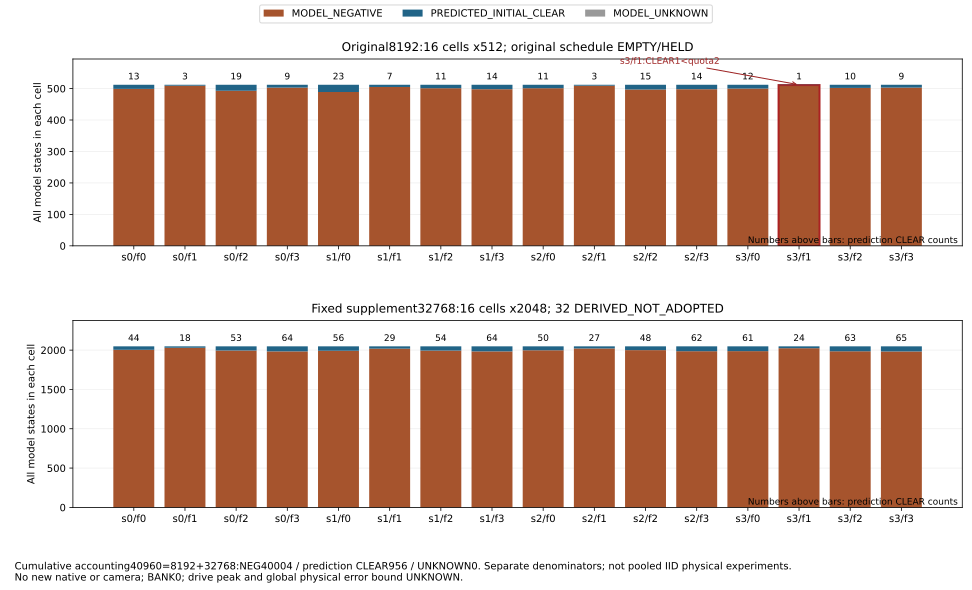
| seed | family | proposal ID | global ID | storage row |
|---|---|---|---|---|
| 0 | 0 | 2236 | 8380 | 188 |
| 0 | 0 | 2276 | 8420 | 228 |
| 0 | 1 | 2609 | 8753 | 561 |
| 0 | 1 | 2645 | 8789 | 597 |
| 0 | 2 | 2102 | 8246 | 54 |
| 0 | 2 | 2162 | 8306 | 114 |
| 0 | 3 | 2231 | 8375 | 183 |
| 0 | 3 | 2319 | 8463 | 271 |
| 1 | 0 | 2072 | 16408 | 8216 |
| 1 | 0 | 2240 | 16576 | 8384 |
| 1 | 1 | 2385 | 16721 | 8529 |
| 1 | 1 | 2825 | 17161 | 8969 |
| 1 | 2 | 2054 | 16390 | 8198 |
| 1 | 2 | 2066 | 16402 | 8210 |
| 1 | 3 | 2083 | 16419 | 8227 |
| 1 | 3 | 2143 | 16479 | 8287 |
| 2 | 0 | 2496 | 25024 | 16832 |
| 2 | 0 | 2532 | 25060 | 16868 |
| 2 | 1 | 2137 | 24665 | 16473 |
| 2 | 1 | 2777 | 25305 | 17113 |
| 2 | 2 | 2054 | 24582 | 16390 |
| 2 | 2 | 2442 | 24970 | 16778 |
| 2 | 3 | 2107 | 24635 | 16443 |
| 2 | 3 | 2251 | 24779 | 16587 |
| 3 | 0 | 2072 | 32792 | 24600 |
| 3 | 0 | 2124 | 32844 | 24652 |
| 3 | 1 | 2737 | 33457 | 25265 |
| 3 | 1 | 2913 | 33633 | 25441 |
| 3 | 2 | 2338 | 33058 | 24866 |
| 3 | 2 | 2350 | 33070 | 24878 |
| 3 | 3 | 2123 | 32843 | 24651 |
| 3 | 3 | 2199 | 32919 | 24727 |
可下载本次完整32768逐项处置、全部1024 COMMIT／gaps headers及SHA、原始q74／qd74与身份、固定采样源码。超过2GiB派生距离矩阵留NAS，原native RAW不删；这里只复制输入和审计元数据，未重新解码该矩阵。
- 本次事实与来源
- 完整32768逐项MODEL_ONLY处置
- 全部1024闭合COMMIT／SHA
- 全部9021矩阵headers／SHA
- 两批全部16格计数
- 32派生身份，未adopt
- 派生32完整receipt
- 不同作者SCREEN_DATA审查
- SOURCE+INPUT复现审查
- 固定补充协议与四原seed
- 完整输入SHA／block索引
- 完整32768 q74原字节
- 完整32768 qd74原字节
- 原8192逐bit再生成证据
- 可复现sources／inputs exact refs
- 原采样API source
- 固定输入生成source
- 原MODEL_ONLY runner source
- 复现范围和原环境依赖
- 历史05已发布快照
正式64+64回放与完整8192 MODEL_ONLY：要求仍未达成
缺口：seed3/family1只有proposal45一个未reserved预测CLEAR，quota要求2。原32项schedule EMPTY／HELD，不借配额；174个预测CLEAR不是安全状态，bank0。
完整74独立关节模型由实际两phase的signed4736／roots256核对及不同作者FINAL DATA闭合支持；固定64+64仍来自旧128原生point0，非新128试验、非holdout。先前8904诊断与本次正式runner回放分开保留。
| 固定半组 | 状态数 | 观测最大误差m | RMS误差m | sign disagreements |
|---|---|---|---|---|
| calibration | 64 | 3.97668370322e-06 | 6.65398376459e-07 | 0 |
| development verification | 64 | 4.77118120323e-06 | 6.82237452969e-07 | 0 |
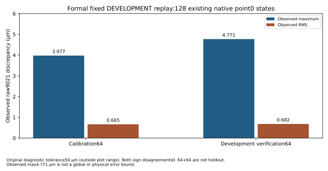
完整8192逐项记账：NEGATIVE8018、预测CLEAR174、UNKNOWN0；原16 cells各512全部保留。172个reserved只从后续候选中排除，不删除8192分母；其中预测CLEAR的proposal92已reserved，未reserved预测CLEAR173个。MODEL_PREDICTED_INITIAL_CLEAR仅为预测初态标签；native／camera均NOT_TESTED，不能计为合格状态。
| seed | family | 分母 | UNKNOWN | NEGATIVE | 预测INITIAL CLEAR | reserved总数 | 未reserved CLEAR | 要求 | quota诊断 |
|---|---|---|---|---|---|---|---|---|---|
| 0 | 0 | 512 | 0 | 499 | 13 | 19 | 12 | 2 | 仅诊断满足2 |
| 0 | 1 | 512 | 0 | 509 | 3 | 19 | 3 | 2 | 仅诊断满足2 |
| 0 | 2 | 512 | 0 | 493 | 19 | 19 | 19 | 2 | 仅诊断满足2 |
| 0 | 3 | 512 | 0 | 503 | 9 | 19 | 9 | 2 | 仅诊断满足2 |
| 1 | 0 | 512 | 0 | 489 | 23 | 8 | 23 | 2 | 仅诊断满足2 |
| 1 | 1 | 512 | 0 | 505 | 7 | 8 | 7 | 2 | 仅诊断满足2 |
| 1 | 2 | 512 | 0 | 501 | 11 | 8 | 11 | 2 | 仅诊断满足2 |
| 1 | 3 | 512 | 0 | 498 | 14 | 8 | 14 | 2 | 仅诊断满足2 |
| 2 | 0 | 512 | 0 | 501 | 11 | 8 | 11 | 2 | 仅诊断满足2 |
| 2 | 1 | 512 | 0 | 509 | 3 | 8 | 3 | 2 | 仅诊断满足2 |
| 2 | 2 | 512 | 0 | 497 | 15 | 8 | 15 | 2 | 仅诊断满足2 |
| 2 | 3 | 512 | 0 | 498 | 14 | 8 | 14 | 2 | 仅诊断满足2 |
| 3 | 0 | 512 | 0 | 500 | 12 | 8 | 12 | 2 | 仅诊断满足2 |
| 3 | 1 | 512 | 0 | 511 | 1 | 8 | 1 | 2 | 缺1 / HELD |
| 3 | 2 | 512 | 0 | 502 | 10 | 8 | 10 | 2 | 仅诊断满足2 |
| 3 | 3 | 512 | 0 | 503 | 9 | 8 | 9 | 2 | 仅诊断满足2 |
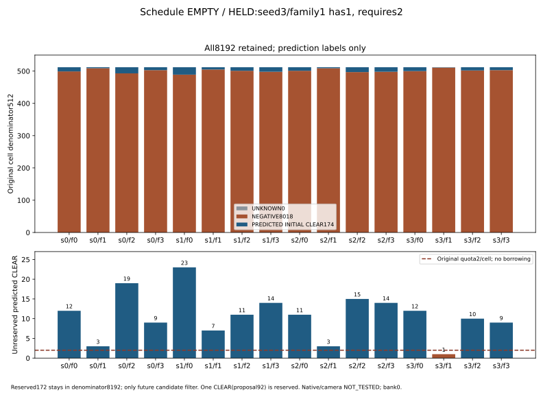
确定性schedule状态：MODEL_QUOTA_SHORTFALL_NO_NATIVE_SCHEDULE；候选数 0，shortfall cells 1。原每cell最早2个未用预测CLEAR、不可借用配额；存在缺额时整份schedule为空／HELD，不允许借用，不是原生准入。
完整8192逐项failure table、256 blocks/gaps SHA与可重算源代码下载；591MB模型gap原件保留NAS，旧native RAW不删除。完整8192逐项表 · 全部gaps SHA/路径索引 · 本次事实与输入 · 可重算输入refs · 完整可重算代码／模型／提案输入SHA索引 · CPU逐block重算入口 · 8192逐项9021负row IDs与flags · 历史04
完整安全与任务仍未验收；bank0；Drive、wrench、CONTACT、全局误差界UNKNOWN，正式holdout未打开。未来真实12micro强相机与独立raw核验仍必需。模型仅检查初态几何，尚不覆盖74硬限、74速度、26软限、82 scalar、动态隐式驱动／接触／终端或全局界。
07失败诊断：注册几何与原生接触的边界
初始时点已有127/128状态触发注册raw9021几何负gap；这解释了多数初始相机未执行。proposal92的初始几何未被拒绝，但在micro11和12分别观测到0.529576 N和0.502667 N的新鲜接触scalar，超过0.1 N门槛。
[闭合晚期接触事实]| micro | scalar82最大值 / N | 注册9021最小gap / m | 注册负gap数 |
|---|---|---|---|
| 11 | 0.529576 | 0.00142583251 | 0 |
| 12 | 0.502667 | 0.001427561045 | 0 |
原生接触报告中的U_L index2/thumb3 pair不在注册9021行集合中，因此正的注册gap不能覆盖这个遗漏pair。手内部的静态排除、逐行运行时exemption与原生collider过滤是不同机制。
目前证据能定位判据覆盖不一致，尚不能将接触归因于mesh不足、drive、被动关节限位冲量或原生collider过滤。原生接触getter也不直接测量关节约束wrench。CONTACT、ACTUAL_DRIVE_TORQUE、TERMINAL_SET及global error bound 的 UNKNOWN 标签表示完整物理或认证结论尚未闭合。已观测的接触及其数值仍保留；这些标签不表示接触是否发生未知。
先前机制实验在Kit启动前因GPU资源门失败：后续观测GPU1 free5383 MiB，低于11000 MiB要求；native未启动、attempt root未创建。该次实验没有机制结果，记NOT_TESTED。
[资源门闭合]失败尝试如何限制结论
结构、资源、设备、生命周期与schema失败：保留全部负终态
| 尝试 | 真实native / outer | 失败边界 | 实际测量 |
|---|---|---|---|
| 隔离校准V5 | 0 / 1 | fixed-base metatype结构断言 | physics0，无测量成功 |
| 隔离校准V6资源拒绝 | NOT_STARTED / 1 | 原始资源门拒绝，root不存在 | 无原生数据 |
| 隔离校准V6重试 | 0 / 1 | articulation view选择失败 | physics0 |
| 隔离校准V7 | 0（非clean） / 1 | stiffness设备错误；owned telemetry子进程存活，TERM/KILL清理 | physics0；signals保留 |
| full-robot机制V4 | 0（clean） / 1 | SDK parent映射解释失败 | AB未到达 |
| full-robot机制V5 | 0（clean） / 1 | 原生state API schema未识别触发guard；不证明真实coupling | metadata32×4已保存；physics0 / AB未到达 / MODEL_NOT_READY |
6个原始闭合证明JSON与SHA来源清单。所有上述失败保持原分类；隔离校准V8的76行数据有效不重分类旧失败，也不豁免原资源、测量或安全门。
09覆盖：边缘充分性与准入分开报告
冻结库含8192个生成提案。当前完整A128为128个状态；加上历史初始32，共160个唯一原生初值。160的覆盖统计从闭合reference派生，不表示160个完整窗口，也不增加新的原生观察。
[闭合覆盖事实]| 范围与变量 | 初值数 | 边缘bin cells | target face cells | 证据范围 |
|---|---|---|---|---|
| 生成提案（非原生完整窗口） | 8192 | 不在本表重新计算 | 不在本表重新计算 | 不用于准入 |
| 固定A128初始值 · q74 | 128 | 1478/1480 | 32/296 | REFERENCE_DERIVED |
| 固定A128初始值 · qd74 | 128 | 1478/1480 | 32/296 | REFERENCE_DERIVED |
| 历史32＋A128的160个唯一初值 · q74 | 160 | 1480/1480 | 40/296 | REFERENCE_DERIVED |
| 历史32＋A128的160个唯一初值 · qd74 | 160 | 1480/1480 | 40/296 | REFERENCE_DERIVED |
A128的q与qd各覆盖1478/1480边缘bin cells及32/296 target face cells；160唯一初值各覆盖1480/1480边缘bins，但face cells仍只有40/296。边缘bin覆盖不代表148维联合空间覆盖，更不表示状态安全或准入。
10定性相机证据：历史proposal92的15张原图
相机充分性判据
每只手须有3个选中视角，实际方位角两两至少相差30°。跨选中视角的可见像素峰值须满足：手掌≥2048、五类手指各≥512、每个原生手部body≥64；body可见性缺口为0。
须有3个wide视角。四臂各自及两张桌各自的可见像素峰值须≥1024；原生关键前臂与wrist2 body峰值≥128，关键body可见性缺口为0。
每个已执行相机区间须验证所有注册lane的27项原生状态字段前后逐位一致，仿真时间不变，并用原始RGB、ID mask、原生路径及SHA独立复算。数值拒绝后未采集的区间仍为NOT_TESTED。该判据不提供全mesh或接触patch的可见性认证。 [冻结相机协议]
以下展示四手各3张与wide3张，共15张已经选中的原始RGB；选择依据是历史attempt2中proposal92/env028的初始相机合格组。时间为2026-10-10 17:44:00 Asia/Shanghai / 2026-10-10 09:44:00 UTC。这些是INITIAL_ONLY的特选案例，不代表当前A128的整体表现或终态。
[原始相机snapshot]F_L · 三张原始选中视角

F_L / attempt4
原始1280×720 RGB · mask与闭合证据

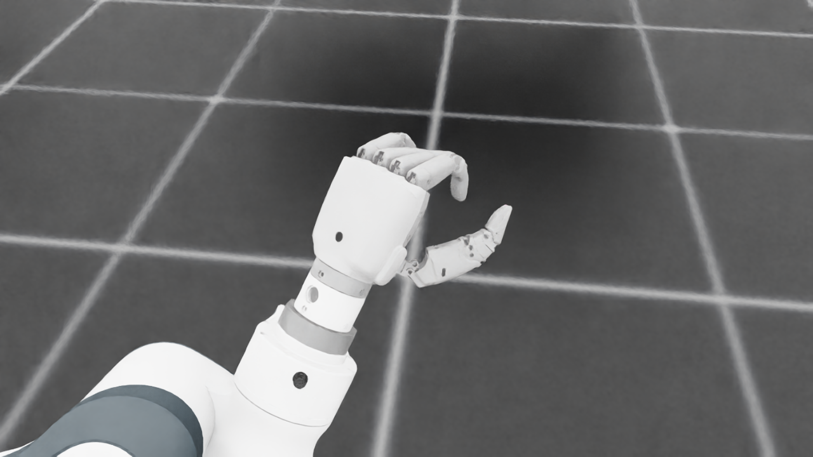
F_L / attempt1
原始1280×720 RGB · mask与闭合证据

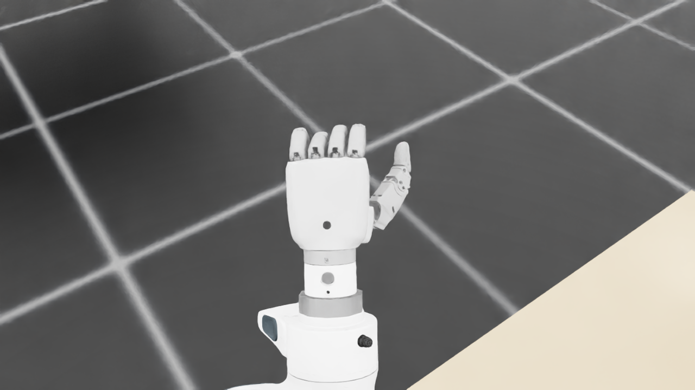
F_L / attempt3
原始1280×720 RGB · mask与闭合证据
F_R · 三张原始选中视角

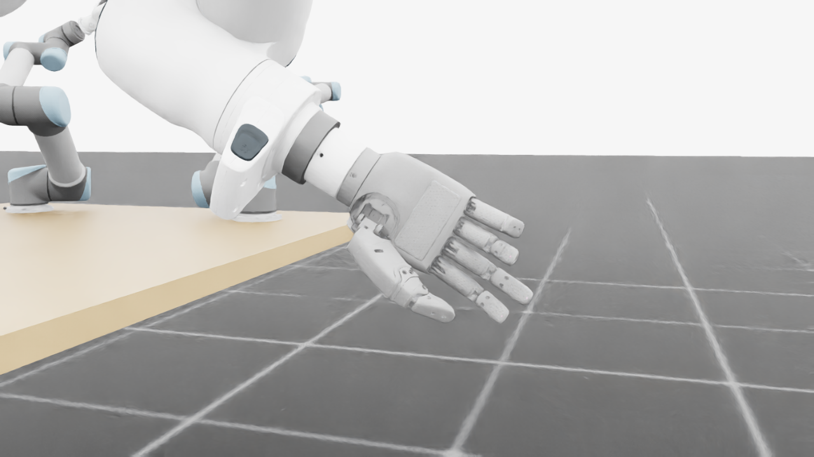
F_R / attempt3
原始1280×720 RGB · mask与闭合证据

F_R / attempt2
原始1280×720 RGB · mask与闭合证据

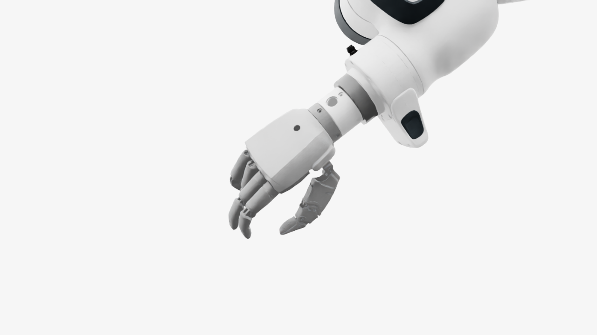
F_R / attempt4
原始1280×720 RGB · mask与闭合证据
U_L · 三张原始选中视角

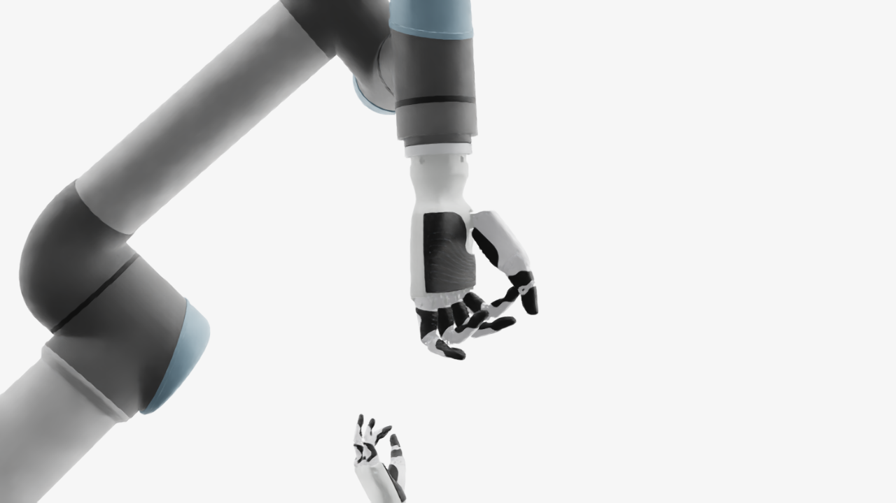
U_L / attempt4
原始1280×720 RGB · mask与闭合证据

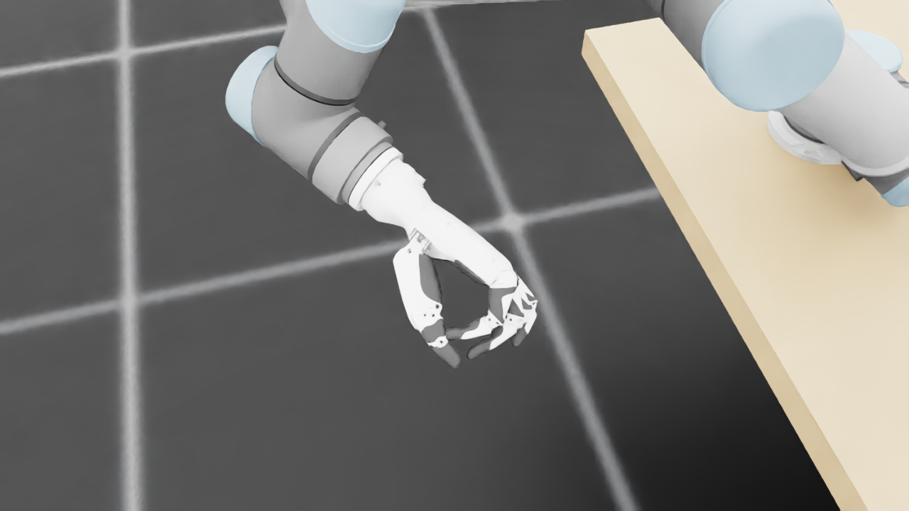
U_L / attempt3
原始1280×720 RGB · mask与闭合证据

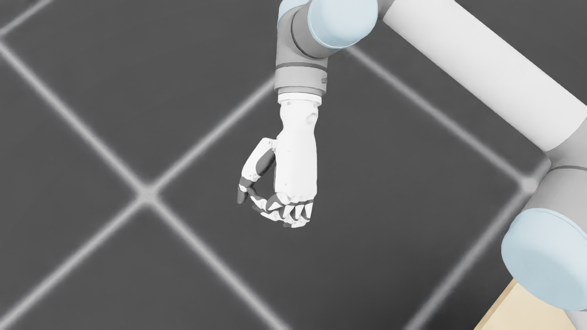
U_L / attempt1
原始1280×720 RGB · mask与闭合证据
U_R · 三张原始选中视角

U_R / attempt6
原始1280×720 RGB · mask与闭合证据

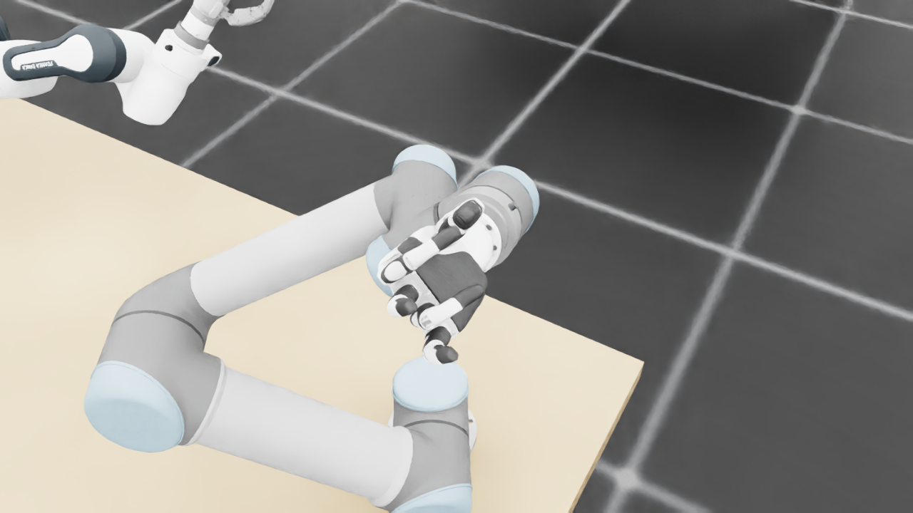
U_R / attempt8
原始1280×720 RGB · mask与闭合证据

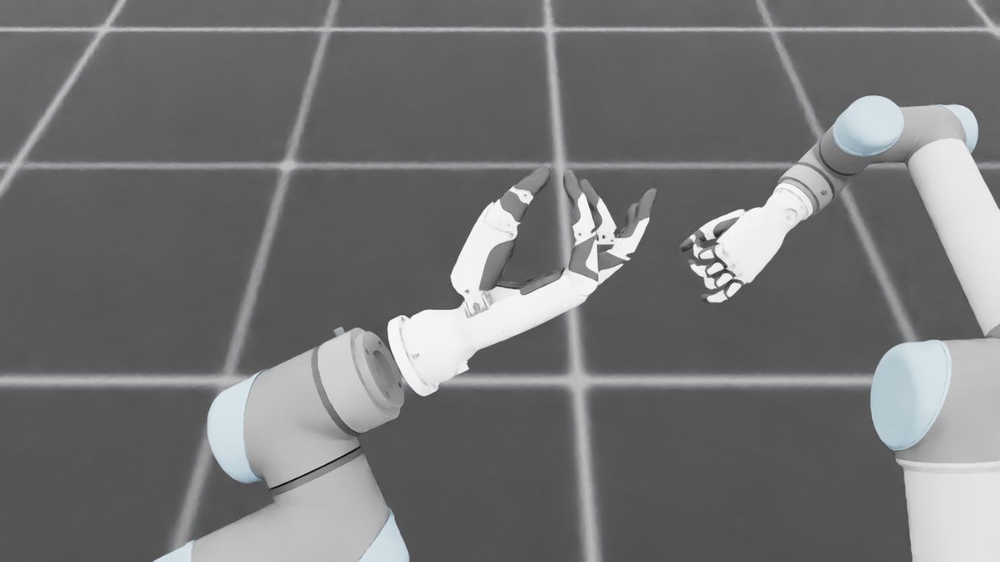
U_R / attempt7
原始1280×720 RGB · mask与闭合证据
wide · 三张原始选中视角

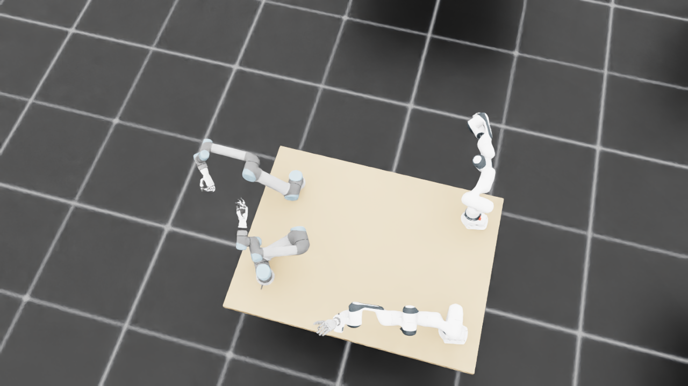
wide / attempt6
原始1280×720 RGB · mask与闭合证据

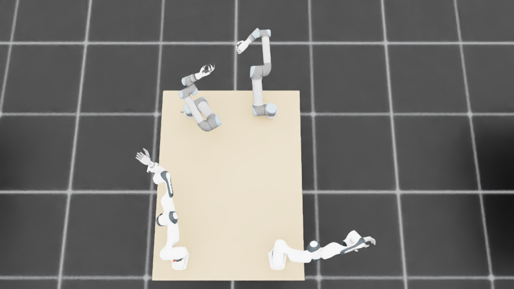
wide / attempt7
原始1280×720 RGB · mask与闭合证据

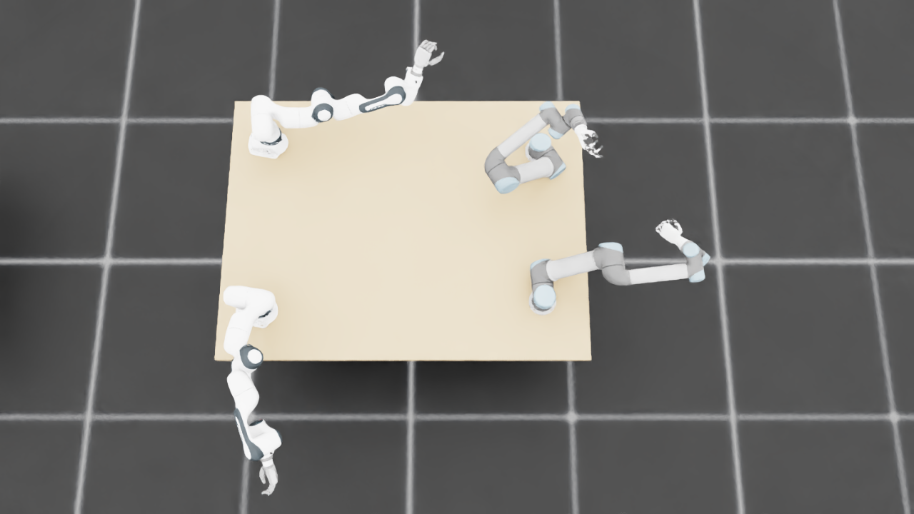
wide / attempt9
原始1280×720 RGB · mask与闭合证据
图像按原1280×720比例显示，未裁剪、重绘或改写字节。原始mask、metadata及wait来源可从证据包与附录追溯。
11对照与未执行项
| 问题或对照 | 状态 | 可支持的判断 |
|---|---|---|
| 历史raw与候选配对 | 已完成128组 | 开发cohort内违规与tracking trade-off |
| 救回案例相对static的tracking比 | 已报告52个相关臂窗口 | 候选误差全部更大；static为初始q参照，非另一次原生安全控制器执行 |
| 新A128完整数值筛查 | 已完成4seed、12步/状态 | 准入0/128；不能提升为安全通过 |
| 新A128任务策略与任务成功 | NOT_TESTED；策略动作0 | 没有任务成功率 |
| 未执行相机、全局held27 | NOT_TESTED / UNKNOWN | 只评价实际相机区间 |
| drive/约束来源机制干预 | 最新V6：native0、12步、32×13行；独立RAW数据有效 | B1/16可构造，32窗口数值拒绝；不作drive／约束因果识别 |
| 独立正式留出 / 真实机器人任务 | 未执行；formal0 | 无部署或完整安全验收 |
12局限与可解释范围
历史配对来自受限开发分布；当前A128来自冻结全范围提案，两者不能合并成一个成功率或外部benchmark排名。四seed和1664行描述执行覆盖，不提供跨任务泛化的独立试验。
本报告中的几何、接触scalar、限位与速度是不同观测判据；0/128准入是完整门与配额的结果。注册9021代理几何对未列入pair没有认证能力，接触数值与接触原因也须分开。
前三张历史图由闭合summary JSON导出，新增校准图保留全部19个配置；15张相机图是历史特选视角；图与原始证据支撑本报告的范围，但不能补足未执行的策略、任务、全局held27或正式留出。
隔离校准的四步属于同一配置内的相关观测。解析惯量、被动广义力矩缺失及explicit冲量假设限制条件均值解释；零drive反例否定普遍通道等同，却不证明生产电机力矩峰值或碰撞原因。
V6的416行属于32窗口中的相关时序观测；16提案中只有1对B可构造。15项重复初值不提供URDF一致性干预效果证据，重复窗口的后续轨迹也未被证明逐位相同。该构造同时改变依赖关节q、qd与对应held target，不能独立辨识位置、速度、drive或约束冲量的因果来源。
13完整要求尚未闭合：下一轮验收条件
| 阶段 | 冻结要求 | 当前状态 |
|---|---|---|
| 完整准入状态库 | 4种子×4family×2合格状态，共32个；数值、实际初终相机和独立raw全部通过 | 0/32；16格均缺2个 |
| 策略短窗 | 32案例×2方法；每窗8控制步/16微步 | 新队列未执行 |
| 策略完整窗 | 32案例×4方法；每窗480控制步/960微步 | 新队列未执行；历史128配对另行报告 |
| 主动跟踪 | 相对static初始q的RMSE比≤0.95，且相对paired raw≤1.1 | 尚未通过完整任务验收 |
| 暂停/恢复 | 暂停请求控制区间[240,272)，延迟后实际应用[246,278)；恢复RMSE比≤0.95；暂停末12控制速度比≤0.1 | 新策略暂停/恢复未测试 |
| 最终独立验证 | 策略冻结后独立256状态，以及64个暂停/恢复案例；全要求仍含独立物理、状态、相机与任务审计 | 正式留出未开启；完成数0 |
| 物理边界 | 实际drive effort和所需接触/约束观测；独立证据及可复现结果 | V6 RAW有效但数值拒绝保留；生产drive峰值及global error bound UNKNOWN |
static初始q与冻结暂停末态均为误差参照；它们不是另一次原生安全控制器实验。短窗、完整窗、任务和最终独立验证均须分别产生真实结果与独立审计，计划或CPU检查不会替代这些实验。 [冻结任务协议] [窗口与阈值]
当前准入状态库0/32、formal0、策略动作0。下一轮应在冻结协议下获得每个seed/family格至少2个同时满足数值与完整相机条件的状态，并以独立reader复核；任一格短缺仍维持空选择。
V6已完成固定16提案的实际AB观察，但仅102可构造B且仍有数值拒绝；proposal92的B不可构造、只重复A，尚未取得该案例的有效干预对照。仍需可归因的实际干预、生产drive及所需物理边界证据。准入状态库成立后，才能按既定流程执行策略、任务和正式留出检查。完整安全验收尚未通过。
V6原始数据／已审结论及V7待审采集证明
V6的独立RAW与不同作者DATA审阅已闭合PASS_DATA_ONLY；V7在本快照仅实际采集闭合，独立RAW／DATA审阅PENDING。V7两份phase文件是原始采集回执，不是已审完整模型；本页V6原始archive仅属于V6，未重新压缩或冒充V7数据。原compact与旧native closure的历史PENDING字段保持原样，当前采纳状态另见终态proof。
17:43历史candidate03正文原文件 · 历史summary · 历史manifest · 此前公开840对象版正文原文件
- FACTS_V6_SNAPSHOT.json
- data/ALL16_AB_COMPARISON_V6.csv
- data/ALL16_FIGURE_SOURCE_V1.json
- data/ALL416_RELATED_NUMERIC_FLAGS_V6.csv
- data/ORIGINAL_COMPACT_FINDINGS_V6.json
- evidence/DISTINCT_DATA_CLOSED.json
- evidence/DISTINCT_DATA_PEER.json
- evidence/DISTINCT_DATA_REVIEW.json
- evidence/DISTINCT_DATA_TOOL_WAIT.json
- evidence/DISTINCT_DATA_WORKER_WAIT.json
- evidence/FRAME_MODEL_NOT_READY.json
- evidence/INDEPENDENT_RAW_REPORT.json
- evidence/NATIVE_ACTUAL_CLOSED.json
- evidence/NATIVE_ACTUAL_WAIT.json
- evidence/NATIVE_ENTRY.json
- evidence/NATIVE_OUTER_ACTUAL_WAIT.json
- evidence/PARENT_FINAL_DATA_ADOPTION.json
- evidence/RAW_ACTUAL_CLOSED.json
- evidence/RAW_OUTER_ACTUAL_WAIT.json
- evidence/RAW_SOURCE_BEFORE_AFTER.json
- evidence/RAW_WORKER_ACTUAL_WAIT.json
- evidence/READER_AND_OPERATIONAL_SOURCES_V1.zip
- evidence/READER_CPU_CLOSED.json
- evidence/READER_HANDOFF.json
- evidence/READER_SOURCE_GRAPH.json
- evidence/SELECTED_SOURCE_INDEX_V1.json
- evidence/V7_ACTUAL_ENTRY.json
- evidence/V7_ACTUAL_FRAME_MODEL_NOT_READY.json
- evidence/V7_ACTUAL_NATIVE_CLOSED.json
- evidence/V7_ACTUAL_NATIVE_WAIT.json
- evidence/V7_ACTUAL_OUTER_WAIT.json
- evidence/V7_ACTUAL_SOURCE_GRAPH.json
- evidence/V7_ACTUAL_TOOL_CLOSED.json
- evidence/V7_AFTER_MICRO12_COLLECTION.json
- evidence/V7_PREAPP_OUTER_WAIT.json
- evidence/V7_PREAPP_REFUSAL_CLOSED.json
- evidence/V7_PREAPP_TOOL_CLOSED.json
- evidence/V7_PREWRITE_COLLECTION.json
- evidence/V7_SOURCE_CPU_REVIEW_ONLY.json
- figures/all16_sampled_velocity.png
- figures/all16_sampled_velocity.svg
- raw/DIRECT_FIELDS_V1.json
- raw/NATIVE_ORIGINAL_FILE_INDEX_V1.json
- raw/V6_NATIVE_ORIGINALS_V1.tar.gz
- raw/native_fields/initial_point_freshness_unknown.npy
- raw/native_fields/micro.npy
- raw/native_fields/point_fresh.npy
- raw/native_fields/q74.npy
- raw/native_fields/qd74.npy
- raw/native_fields/raw9021.npy
- raw/native_fields/scalar82.npy
- raw/native_fields/simulation_step.npy
- raw/native_fields/simulation_time_s.npy
- raw/native_fields/target74.npy
- raw/native_fields/violations.npy
| 下载相对路径 | bytes | SHA256 |
|---|---|---|
| mechanism_v6_addendum_v1/FACTS_V6_SNAPSHOT.json | 22,683 | 39367661d53c5eb5fad2d753ab49f5c12c203291ebf75b5bf6d16a96dacfafa6 |
| mechanism_v6_addendum_v1/data/ALL16_AB_COMPARISON_V6.csv | 4,335 | 0622f1b81f1e2cbe23f39672085f020cda6eb680c0e1e826c378a31724b1f592 |
| mechanism_v6_addendum_v1/data/ALL16_FIGURE_SOURCE_V1.json | 2,765 | 44b076728c13299260641c7f6cd40829636eb12066ef94f67e9a5407282ffd49 |
| mechanism_v6_addendum_v1/data/ALL416_RELATED_NUMERIC_FLAGS_V6.csv | 23,299 | b10e2f14f13b115561ff29f16056d51a0de30d51c61563f9701baae5e1769e91 |
| mechanism_v6_addendum_v1/data/ORIGINAL_COMPACT_FINDINGS_V6.json | 8,041 | a55a6cea334aa3be16c279e1a1aa9b3497ca979b1bb46ef38a134d9d390c602d |
| mechanism_v6_addendum_v1/evidence/DISTINCT_DATA_CLOSED.json | 1,904 | 1014049d4c46f24b8d3f127b32ee007ad8d4b2a21b54460f5842d964d224b380 |
| mechanism_v6_addendum_v1/evidence/DISTINCT_DATA_PEER.json | 2,720 | 5df1fccf6def6e60d2b858583ffbdf33ce073dac4f2029298a944fc87c09be93 |
| mechanism_v6_addendum_v1/evidence/DISTINCT_DATA_REVIEW.json | 26,884 | e515390f8deeec7e93ee038a55f4cafca178dcd13e0665ba628a051870f43f22 |
| mechanism_v6_addendum_v1/evidence/DISTINCT_DATA_TOOL_WAIT.json | 437 | 0d5656ff6080588a76415c45c94d6690f983fb57c51d7a7d9ed22ef453a57c8b |
| mechanism_v6_addendum_v1/evidence/DISTINCT_DATA_WORKER_WAIT.json | 1,758 | 4c94deb21dcfa82aaa919373b07852f6fa697e5e73742b7d34ffd1d18855ba43 |
| mechanism_v6_addendum_v1/evidence/FRAME_MODEL_NOT_READY.json | 4,034 | 43e52673c23b95f51e5bc76dd1ab86a7fe060f7fc95534c0511fdab2bf7add62 |
| mechanism_v6_addendum_v1/evidence/INDEPENDENT_RAW_REPORT.json | 580,380 | 286eaf6744c5ffc491d8e4c39c71c13bc26ea91178eda933b27b1e08dcefcfaa |
| mechanism_v6_addendum_v1/evidence/NATIVE_ACTUAL_CLOSED.json | 4,550 | 4495e829ccc2a50656cfcd286b3135f1f7b9aa08923dde75044c28af1a5caf5f |
| mechanism_v6_addendum_v1/evidence/NATIVE_ACTUAL_WAIT.json | 72,538 | 29f1587092f5976ae01b4c4082a81b8087f5185aac53f9d95b6f506a0d3c3066 |
| mechanism_v6_addendum_v1/evidence/NATIVE_ENTRY.json | 281,020 | 9af81f161ad69728926e052adf481c7de603d64e4c6501d083da34c20c34ae47 |
| mechanism_v6_addendum_v1/evidence/NATIVE_OUTER_ACTUAL_WAIT.json | 2,567 | 379563926e82884b1dc9c0323f9945e9348d4d226fc56e7b3776d04615e742b0 |
| mechanism_v6_addendum_v1/evidence/PARENT_FINAL_DATA_ADOPTION.json | 6,429 | 7069734de579556e4cd0d6118e8ec67d43a730d811197a7ad291907e6035d4cb |
| mechanism_v6_addendum_v1/evidence/RAW_ACTUAL_CLOSED.json | 2,268 | 60ecfeeb1cba7cd04cac88cb4c6d33a8c059cd03a6e8f3c0a422b5e2c0b395af |
| mechanism_v6_addendum_v1/evidence/RAW_OUTER_ACTUAL_WAIT.json | 2,152 | 9f43348f2bb62174fa46fb77fdb983b905e6d170af4fbf4aeb00472a8fd7a4ad |
| mechanism_v6_addendum_v1/evidence/RAW_SOURCE_BEFORE_AFTER.json | 19,761 | 742d73b425d12637a8dc5d55b4f9b5b4e3ed61490f8bb9ab713dd8ab62e9f317 |
| mechanism_v6_addendum_v1/evidence/RAW_WORKER_ACTUAL_WAIT.json | 2,188 | a999e79fd673faa2c0fcfb64a445841abe3846cea53f7476262f86c3e5a51e81 |
| mechanism_v6_addendum_v1/evidence/READER_AND_OPERATIONAL_SOURCES_V1.zip | 329,491 | 71acfab92cd438551c7994bf59b9858b3dfd2713b16419533cac41a9e68ba598 |
| mechanism_v6_addendum_v1/evidence/READER_CPU_CLOSED.json | 2,261 | 6083461d9796f1b6baf241e764a6a1584c932d9f2d127fbed795465957d44cfc |
| mechanism_v6_addendum_v1/evidence/READER_HANDOFF.json | 14,721 | 33cc1e3a7ab5c4fad956593245e6a1f0ad93f27d94775fc3aefc9ba59e3c8067 |
| mechanism_v6_addendum_v1/evidence/READER_SOURCE_GRAPH.json | 11,298 | 52c7c103c032e104d4175234b19057d06d7c0de6adfd155d1f830094be5e56c6 |
| mechanism_v6_addendum_v1/evidence/SELECTED_SOURCE_INDEX_V1.json | 22,165 | 54b7d071f4cd58366cb2562450201cbbd3e9a5d70f3b5437480d0680bdd68b94 |
| mechanism_v6_addendum_v1/evidence/V7_ACTUAL_ENTRY.json | 335,509 | c868f43645aaba555d53a0247b8bd2c468d04146969fc12a13b0e6003a77fc13 |
| mechanism_v6_addendum_v1/evidence/V7_ACTUAL_FRAME_MODEL_NOT_READY.json | 4,139 | eff4e9e92f0799c24e54d97f1a3b104502e4121748167a7c30f4a8a19e5b9e29 |
| mechanism_v6_addendum_v1/evidence/V7_ACTUAL_NATIVE_CLOSED.json | 6,957 | 31d56d1dadeed84a0dc595d06a9308f46bc29b2f8fd7a13cfd9d07df10d67a6d |
| mechanism_v6_addendum_v1/evidence/V7_ACTUAL_NATIVE_WAIT.json | 99,523 | 07b9ca30c3272467fcb9aae9db31d8de301c81addc33fbf88441d5308c9ae9fb |
| mechanism_v6_addendum_v1/evidence/V7_ACTUAL_OUTER_WAIT.json | 2,633 | c8eda02c2e73797ced89e8dffe8b688c462673ecb512f7a111bc749bd663edb1 |
| mechanism_v6_addendum_v1/evidence/V7_ACTUAL_SOURCE_GRAPH.json | 207,091 | 74e7051243aa588d394f84dab351761b55263e71c29045b222d0bd3d149e205f |
| mechanism_v6_addendum_v1/evidence/V7_ACTUAL_TOOL_CLOSED.json | 1,076 | 5ffc3e99c5b14cef907b426f56c949cd7b6e1dc4912f5637fe08d08c51cae22c |
| mechanism_v6_addendum_v1/evidence/V7_AFTER_MICRO12_COLLECTION.json | 3,623,907 | 06b7a9efc8f03ce18524eab54f6c315da0e1aa5aa3b7055abd17c149ffe81451 |
| mechanism_v6_addendum_v1/evidence/V7_PREAPP_OUTER_WAIT.json | 2,618 | da283c0ff136d1999eddd62a6099bab0b1893d64594a608178299734e8281c38 |
| mechanism_v6_addendum_v1/evidence/V7_PREAPP_REFUSAL_CLOSED.json | 1,571 | 47f7a3357f9fda23636f297068ad87119e94a3ea74f73707f3e73e1b59ced17b |
| mechanism_v6_addendum_v1/evidence/V7_PREAPP_TOOL_CLOSED.json | 1,087 | 6043f4d16457a33c2545debbb4139e4a0ed01ac362198396e7da44f70ad7163d |
| mechanism_v6_addendum_v1/evidence/V7_PREWRITE_COLLECTION.json | 3,634,208 | 1ec50ddbe52bfb0b4b1e67124e8f1beb8f04c9433003e8379566381ece4d3964 |
| mechanism_v6_addendum_v1/evidence/V7_SOURCE_CPU_REVIEW_ONLY.json | 16,646 | f5fb817f2d4e376e69d2893127d1dfaae1d8038a2dfef62755b160184ceff647 |
| mechanism_v6_addendum_v1/figures/all16_sampled_velocity.png | 217,110 | 9baf02ae88dd6388b8740bfa97bb5fdce254d997cae8d5a6e8bdf2a157f56b0f |
| mechanism_v6_addendum_v1/figures/all16_sampled_velocity.svg | 126,936 | 194f918ddf87c596feb3adbeab471867bd3ceb7d50239377d363226943e1602a |
| mechanism_v6_addendum_v1/raw/DIRECT_FIELDS_V1.json | 5,097 | 3fb6d0a0b582af35af2e2756bb2b079618f7016ef0d8e6f1caebb3d1ab9ffc5c |
| mechanism_v6_addendum_v1/raw/NATIVE_ORIGINAL_FILE_INDEX_V1.json | 370,313 | 187327c5fc6e81020f6a7e843a7272acf60d7472a50d95668582b98da7ee9d2a |
| mechanism_v6_addendum_v1/raw/V6_NATIVE_ORIGINALS_V1.tar.gz | 31,653,964 | ae531f906d97f65cb35f78b59098cb970fa77c831f753f29c2b7732bfbbdc8e5 |
| mechanism_v6_addendum_v1/raw/native_fields/initial_point_freshness_unknown.npy | 141 | 94ef6aec2a968ffff361f945984314afba9582ab27fbaaed7eba42e114647f35 |
| mechanism_v6_addendum_v1/raw/native_fields/micro.npy | 232 | 56e1ceda27a329855757493f5c5b2807c61729ca56a6a4a0539c3acd229c1b20 |
| mechanism_v6_addendum_v1/raw/native_fields/point_fresh.npy | 141 | cc1633dfbefc904f270855dc645f9562cacafadb8ea2972718a3f8b36ac3aad1 |
| mechanism_v6_addendum_v1/raw/native_fields/q74.npy | 123,264 | 82c33f28a96c13d0b06c45e8d2cb5abc18a81d1e8b3433dd79f8457c6cb9dc0e |
| mechanism_v6_addendum_v1/raw/native_fields/qd74.npy | 123,264 | d83dcfbcc0a166233dde6d51c3debbb8447362c16fde5813494d4133e31da006 |
| mechanism_v6_addendum_v1/raw/native_fields/raw9021.npy | 15,011,072 | 2c011276b15347e5e5c6a4d04468d9468601ea278041ff63dcd98e3b2757b941 |
| mechanism_v6_addendum_v1/raw/native_fields/scalar82.npy | 273,024 | 88738bea68d54b9b670b8d4c22b73e28a22b6eca5f49a7ee57f89e5207fec344 |
| mechanism_v6_addendum_v1/raw/native_fields/simulation_step.npy | 232 | 35023c06b4c5fc1b10bc0f93e18dd3fca968e880239a362104020fc9214f0d4b |
| mechanism_v6_addendum_v1/raw/native_fields/simulation_time_s.npy | 232 | 5e75e3bad78c5a17df174b80319cff2f68d8552cf7f969440edbc36a884cba1c |
| mechanism_v6_addendum_v1/raw/native_fields/target74.npy | 123,264 | a7f95f151ffbde05be8b21a1fe937bd8694ed59e7976de7695612a1fc31698c0 |
| mechanism_v6_addendum_v1/raw/native_fields/violations.npy | 3,040 | 54a9cc768dee3642ee11d4dde5e55862c9092c8dec46ac7bccb98f3d7fa867d3 |
A证据与历史附录
展开证据、执行历史与来源SHA（完整附录）
新增数据闭合证明、下载与先前报告原字节归档
- CALIBRATION_ENTRY.json
ed0f861dc6dfc5e90f6f57b9416f131f981e90e442a866d218400df5fbd33e7a - CALIBRATION_NATIVE_CLOSED.json
3ed31444eac08a6399154781f92cfe2c60ca7213fe513e216d27b22bfca89743 - CALIBRATION_NATIVE_WAIT.json
32aa9d60c83c2e0a7ea51223ba3bb7dff5500e5c5a8a5ed5a5573d5b80b6f853 - CALIBRATION_OUTER_WAIT.json
2d6475436c4e843663048765645b76d2d9d24df40a5c4442eb7c34432eae3f9c - CALIBRATION_PIPELINE_WAIT.json
477862e61b520cc823d9b31c2aeabd916703c581859da8f78f9d0e85e45bf070 - POINT0_DATA_REVIEW.json
1890fa074484ae129e1c976b29a764f0cac25c99e9f5268940c5c5f9889c056b - POINT0_DATA_REVIEW_TOOL_WAIT.json
6e2fc6daafc716d5e7d95f25ea75376256f6fa8b5b0e6aeaeca3ec1c027c0f40 - POINT0_DATA_REVIEW_WORKER_WAIT.json
abb9642719c6c0e0c2b2b5cfc3d99f5a65ddc87a5fa0109732567f0bec13f974 - POINT0_EXPORT_CLOSED.json
d2d55b70d2fd4f4bb6a86676ba0471dfe92069023df092dd04ed9ec2433fe250 - POINT0_EXPORT_MANIFEST.json
2ac5d1d80225c12656b79529561dda0d2268c0f8bc3de66a46de90874181ef08 - POINT0_EXPORT_WORKER_WAIT.json
0ec7e7132cec7a6ba3ea9bc888ca951c60f2dfdc97811ed0ff6ccf7bc53f3795 - POINT0_EXPORT_WRAPPER_WAIT.json
d9d4bd635b5db396eb4500999fbccc6c93ef07597bd2e8b5ad619f5a104044aa - CALIBRATION_RAW_CLOSED.json
7926d88c7935c9824a80a88fbe62d4d85ebadfd25d32ae912d59cd0f1fa3f921 - CALIBRATION_RAW_AUDIT.json
3c42f4d4713e32835debe9355c2a73618d6f96111d450c00fa4ed068295a5009 - CALIBRATION_RAW_DELIVERY.json
ee4463059e35b05df63cbad09270f1c1622f2b16401e4d0b41695af12ad2a65b - CALIBRATION_RAW_WORKER_WAIT.json
4ae6ce7de629e030c5cbec826f521c9a5d4b9163501a28b405ff9d61e55d1d6b - CALIBRATION_RAW_SOURCE_BOUND_WAIT.json
e417072647c97f7f1a729b82dbb9b51d057bb35cfa4c6691e685df232599b21d - CALIBRATION_RAW_TOOL_CLOSURE.json
ec1e1828d276a9eec45780b10e3e343735833cee3d07eede2ee97469f96cb6ba - MECHANISM5_ENTRY.json
42a8fd68b639d619596a265deb4f2d7dede8f88538c05b5ea793f5df77691e69 - MECHANISM5_NATIVE_WAIT.json
f6c680f6e4498bdf0f3403bdb52888198ddd299a0e4dc9ae9c2c4f04ef02438a
先前index.html原字节 · 先前panel_manifest.json原字节 · 先前summary.json原字节 ·
正文数据就近链接封存事实表。以下保留原始snapshot、来源SHA、真实wait和失败历史；资源与执行回执不作科学通过结论。
- FACT_SHEET_V1.json
- FIGURE_TABLE_DATA_V1.json
- PARENT_FACTS_FIGURES_CLOSED.json
- EVIDENCE_APPENDIX_V1.json
- MECHANISM_PRELAUNCH_FAILURE.json
- archive_a128/index.html
- archive_a128/summary.json
- archive_a128/panel_manifest.json
实际执行、raw审计与失败历史
| 事件 | 已闭合状态 |
|---|---|
| 历史配对原outer / retry96 | 1 / 0；失败与重试均保留 |
| 当前A128 native /原outer | 四native0；seed0旧outer1，续跑outer0 |
| seed0独立raw首轮 / retry2 | 1200秒timeout worker−15/outer2保留；retry2 worker0/outer0 |
| 当前独立raw / 配额 | 四seed raw已闭合；16格全部短缺 |
| 旧attempt1 | native−11，outer UNKNOWN保持 |
| 旧V5 OBS_ONLY | native−9/GDB0/outer1；观测超时，不是crash修复 |
| CalibV2 | pipeline−15/EINVAL/external1；nativewait UNKNOWN/raw缺失 |
| 先前机制尝试 | prelaunch资源门失败；native NOT_STARTED |
原有payload清单与SHA（原字节保持）
| 原有证据相对路径 | SHA256 |
|---|---|
| angle_causal_v1/ACTUAL_WAIT.json | 755fa14256483dfe730c4bd9cbb2c06e4936722e6ff9d7a0d4b827b4d26b6c3f |
| angle_causal_v1/CLOSED_DELIVERY.json | 701dac87d66e8d05d4e78af9e307c99aeb9957b29d38f25b3aaaca68a4c77896 |
| angle_causal_v1/ENROLLED.json | 0cd5ddcc315c68bec5f5fbd887daa2600aa30f18e67796edd65fead9a43477ad |
| angle_causal_v1/child.log | 36e9ef492a567bcff2d89c3f2f40ffb315468fe0fa886ea5fa3083cce6799c7a |
| angle_causal_v1/proofs/ANGLE_DIAGNOSTIC.json | 7aee0f9b8cddd55caa71f2b83b159569025a3c065662b89a62c6191e0b1704f7 |
| angle_causal_v1/sources/anchors.json | e39fbe8bf5b1576ecb363782fad6c3b4d32183ee03463af47470a5382508c698 |
| angle_causal_v1/sources/angle_diagnostic.py | 40d1be045dd1ef6ea4cc20e1e0158580279c65249638f7bbd8739c6321115604 |
| angle_causal_v1/sources/camera_adapter.py | 50ae4efdd37abe37e9cce8ee456457a991f772d9986a0df5c538ba85dbbff69c |
| angle_causal_v1/sources/camera_index.py | 3419fb2229557dc75c7b1750dbb35cef52ca71477a581780a07adcfc3aa01748 |
| angle_causal_v1/sources/camera_optics.py | 358a6f02e39b89331ce668e79dfe2d4c6e17ae809b8ad777fcd8bac55acdb2e9 |
| angle_causal_v1/sources/cpu_supervisor.py | 7f9f18cd1ebea7cf4510782e523bc003daf39f2c9b67143bad58e9c60320e90a |
| angle_causal_v1/sources/evidence_io.py | 464699d30dabfe44035e552799fe45549eb5123a709be1d44cb7efe2703b7b05 |
| angle_causal_v1/sources/science.py | 4c6b22b2a28db1cc26af71cc542874b35aa190f2a53293b049453bd1c133e259 |
| angle_v2/ALL16_ANGLE_ERRORS.csv | cc748d4b74b8dc7cf8e75335011b871f9c998a171c2124f0a11e7ad230946314 |
| angle_v2/PACKAGE_CLOSED_ANGLE_ORACLE_V2.json | f829cb9f4f7a22dcbab56b4bfb8f5eaf8bc6f6dc98d1576ee64e63eec22c34c9 |
| angle_v2/PARENT_HANDOFF_V2.txt | 658c0a7a9775ead1c48524261c30f090ce439d8927ee60e484ba794d241d6372 |
| angle_v2/READONLY_REVIEW_V2.json | add5fb304a30b614212bd78d556344461e5b00226d322aab1504fe270fa577c7 |
| angle_v2/cpu_attempt1/ACTUAL_WAIT.json | ad56562295e681d4aa82fba5950e62c199b93824960a43c5f00b1fb5fac24187 |
| angle_v2/cpu_attempt1/CLOSED_DELIVERY.json | 0f7278f998ba4c5fc735e579da638d65049ecf6828e73b7059aa4dfb0eb51ed9 |
| angle_v2/cpu_attempt1/ENROLLED.json | d0f948d024cfd6ae8e5410e258cb687a6a5c90e40db4f8fa969373b89b62012d |
| angle_v2/cpu_attempt1/child.log | b1a2a051123721e135c55c2c046a134fff26a63d0bc20924ff21a0fb2b53fb98 |
| angle_v2/cpu_attempt1/proofs/CAPTURED_ORACLE_REPLAY.json | 22a202fecb5a30aba957a2310881c180d40e70f4bef817f75394f73f74643612 |
| angle_v2/cpu_attempt1/proofs/CPU_TEST_REPORT.json | adae08c1de0c79112f69f662a181c6af67b5651d878af1ebad8d81f03562867f |
| angle_v2/cpu_attempt1/proofs/EVIDENCE_LEDGER.json | 55ddbd0c7a919a8d73052c6dab92a3b4934612eb048e5bee7a6e1453d2aadc51 |
| angle_v2/sources/actual_angle_oracle.py | f92febb5708378c035be081c3bd4ae89ddfc94d7f4ccf5363610b2df578562eb |
| angle_v2/sources/anchors.json | d232dd790ef7430663ba516493308a73ea36c677ebf913060c423c32971e4868 |
| angle_v2/sources/camera_optics.py | 358a6f02e39b89331ce668e79dfe2d4c6e17ae809b8ad777fcd8bac55acdb2e9 |
| angle_v2/sources/cpu_supervisor.py | 13b4a5f136a45ecaaed052401d9bb8857ba5a0dcc23034a85eedba5d54834e8b |
| angle_v2/sources/evidence_io.py | 14a7ffe8ba707e56f78f604f089d0a69d62b43407d8166b0241f8a5530227561 |
| angle_v2/sources/test_angle_oracle.py | 15142cb3828f5e07bcbe40800421b3e9cdb40fc7014d4793132ec5fdc63bad7a |
| camera_v3/BOUND_PARENT_REVIEW_V2.json | 442f9469deb203900d0d0331a66ba74b6dcb16a719b76898bd2099c31dec66e0 |
| camera_v3/CPU_REAPED_CLOSURE_V3.json | fd39d5ac9612a1063b3acf287c03077ae2c542a01c4ffdf9f1f5a1efa8fee081 |
| camera_v3/FROZEN_CAMERA_REPAIR_REQUEST_V2.json | 6dce37d9d5f011ff5fa6ebcc125b51f84ed274d4a9ffbb8022c05e0743f72208 |
| camera_v3/PARENT_CONTINUATION_CLOSED_V1.json | c959fbfe5708214b2c43391964837354ce4a9580349d07ff9e1c088d8d53d1ce |
| camera_v3/PARENT_NATIVE_WAIT_V1.json | d745404a90ab28b5dd439fdcba9c183a566963dd1b75f3710d276060b7ff89f8 |
| camera_v3/cpu_angles2/ACTUAL_WAIT.json | 02137f7b069311a5b72cd4e078283b9501d8dccc5ee1e7aa0cfcf17b876ab07b |
| camera_v3/cpu_angles2/child.log | fa8b81495a56481db9d1610514b9ac409210b1db166e98635b3ec6bf80bcd81e |
| camera_v3/cpu_angles2/resources.jsonl | b1baf179d369912fa6301280dba9a5e32c215c826ff215366a83e85f7c4717bd |
| camera_v3/cpu_helper1/ACTUAL_WAIT.json | 85c168932cae99b38db14707c32ffbded5b369ea76d37163288beb5fa65dec74 |
| camera_v3/cpu_helper1/child.log | b427bd4046f40f6a63c1a72834458fefe9c62ba69392eae41d051c8b696e3af2 |
| camera_v3/cpu_helper1/resources.jsonl | 51eaf9880c7f2f150e3a2a38ff2483308fd15f5d04f0158387a67d84c4b4928b |
| camera_v3/cpu_prepare1/ACTUAL_WAIT.json | 0be8ebc8325baf570b73aaef26ba08f11b3c907d9cf986dd29f2a4c4eb1c8afc |
| camera_v3/cpu_prepare1/child.log | 76a596a9e0027996d82702dcf9f6b9022424e951147ef252619bc785ae5f3e49 |
| camera_v3/cpu_prepare1/resources.jsonl | 444a1bfb4eba41749e846305299573f3575d8b488783b69f9803da5b5d5f24f8 |
| camera_v3/cpu_tests3/ACTUAL_WAIT.json | 6603f961f1ff51a42e66cd1e60cc71f464779ea85ce4f3d37fa4ed9a9ab5855c |
| camera_v3/cpu_tests3/child.log | 1936998dc4284c91d471f3ff8da94151169b51d46e93a4999d1c8d0bddfba628 |
| camera_v3/cpu_tests3/resources.jsonl | 649781e0a6e91918688835bb2e38800b900e6a0a1e82a73c15f1cef2899b79de |
| camera_v3/cpu_verify1/ACTUAL_WAIT.json | 65d3f63644c3fe1b2ddf292a600118d5e5c9639195e680a5674870dc9e8349f2 |
| camera_v3/cpu_verify1/child.log | 1e15c8032da1cba7f69117bf24bcadf2e92be3b2ed33db306150aba0e00d267b |
| camera_v3/cpu_verify1/resources.jsonl | 90cdebed03c79bcbf0b098bc590cd9b1db14f1866735fc692581d2cd62030dd1 |
| camera_v3/native/ACTUAL_WAIT.json | d745404a90ab28b5dd439fdcba9c183a566963dd1b75f3710d276060b7ff89f8 |
| camera_v3/native/child.log | 70b7fdf3ba0185e7cbf910e42512c6b6337db77c4ed2c5f8b4a0195db1217386 |
| camera_v3/native/resources.jsonl | 787803dd5ee77d2a500197eab83e4d9c6e605b8488801243d8b7f75caa0fbcfb |
| camera_v3/outer/ACTUAL_WAIT.json | 9c3eb875d9109ca15c64c378972369706d1acb9f95659025b065219600055f1f |
| camera_v3/outer/child.log | 04eb3108a355d60b31818a35bd46a1ca3c16d116d76786983d936568b247770b |
| camera_v3/outer/resources.jsonl | f2703a17b9d5fcb8c4125aedf3262a1c62d255dca1a64c123a9875b1f53394ce |
| camera_v3/outer_execution.json | 7510c859b7ee9e21bfa873568cadd2bef25b2d7bf2a402cf0b9fad5b06277fc0 |
| camera_v4/CLOSED_RELEASE_V4.json | 05513d2ec55278d546bc879e867deeb4ddf1b62ba597a5823baec906a6154b5c |
| camera_v4/CPU_BOOTSTRAP_ENVIRONMENT_REPORT_V4.json | 28152a6726796fc3714baff48e75344fa6da2b4af0623b7e3a62b416b73c67dd |
| camera_v4/PARENT_APPROVAL_TEMPLATE_V2.json | efbcce031eeb0a662945d2a4ece6ef71999491eb683ca365c04ab0f5bb48ff71 |
| camera_v4/PARENT_PLAN_DRAFT_V2.json | 44e1816a5dbee4ff5c281cd73276bbf0ca8ba5f5e7b1a9cd0c43b79bc46343d6 |
| camera_v4/PRESERVED_V3_BYTES_V4.json | 1912c7ce378b3eed0aa3a3179ecc20445f1090f29ef9d77b8deacb5badd65ce3 |
| camera_v4/REAPED_CLOSURE_V4.json | 80dfbe5727793560e16543e12a0097819499cb326dbdbe8419b94e16bb2f333b |
| camera_v4/RELEASE_ARTIFACT_SHA256_V4.json | 0fe87b42c047d1e4287a9d04dc5c0a171ae395085d85f1a305aca2a5955b64eb |
| camera_v4/REQUEST_DRAFT_V2.json | 5a206c32e4520b9096c7bbc37bd3bf954c19109669de980da8a6b4a5288938ab |
| camera_v4/SOURCE_GRAPH_V2.json | 176f1583d7ffd453961e15bf56eb70d7c3ee418f878b77a0c6f121af3ae0b1f8 |
| camera_v4/cpu_run_v2.py | 98a92219cfbd0ce34975d2ac797d944e3040c9e076faf9cdba4d63da0e2211af |
| camera_v4/environment1/ACTUAL_WAIT.json | e9c44acaf34fe2a9a241c0961183413654701d32a72289e96e9ff52cb21024fd |
| camera_v4/environment1/child.log | 6a37bca9d82265e19549dbb45d92a63811be2bd0339fb00dc8b07b95df9c0a7f |
| camera_v4/environment1/resources.jsonl | 650359de824ea88cd4e7a9193bcaa1da543b30ab846111b78784079e9aaf0abd |
| camera_v4/native_camera_repair_entry_v2.py | 5f414372caed61b06d35852d79e1a27e0d8deef07fd1b81c8403ef977ac26953 |
| camera_v4/native_measurements_v2.py | 01abbdae5b4e5a6ab12f28b987dd3e63f156b9bab69ff977aa6ed7916f6631f0 |
| camera_v4/parent_app_integration_v2.py | 11ebc1668dff006c1ceae6c7414961fb1cec5f439be76b6e36d5d76652205325 |
| camera_v4/parent_runtime_v2.py | f62d794627c906443acb6d6366eaf1084dcadcca80cf9d2a4ac84b1dfaf2824f |
| camera_v4/prepare1/ACTUAL_WAIT.json | 97b5834b0af782c75a4a4ed5227e13ac2b0ca1d29d166364da9c5fffa6c69320 |
| camera_v4/prepare1/child.log | 23c95ad9605b478f52465ae864b09dc97ff475eec244dc0d9015358b0f56c574 |
| camera_v4/prepare1/resources.jsonl | ccde60f1f82bf7044489aae4f24701f17d09a0c097725f5538603ca5cf622b48 |
| camera_v4/prepare_reused_release_v4.py | 24fb05b86642070efc820f26a7f2278f50b22a25c2c7019ead6ec832fe787d93 |
| camera_v4/repair_common_v2.py | a3c3e76a35ad5bcd67ff66fd9d2f31de41e34f787db27c0366c377a86359f481 |
| camera_v4/repair_phase_trace_v2.py | f1a628a00c40dfabbf81ff7b028878aca0cc0f847c2f4f0efe6276fba7789097 |
| camera_v4/request_review_builder_v2.py | d382863c00cca949c442930269548c9985ee827022b9c01e51e1994749de2313 |
| camera_v4/test_bootstrap_environment_v4.py | a0fffe672b9856d1b721a3cbba2761aac5c0e3b577c152fcfb2b1134dfa9b1ce |
| cases/env_000.state.json.gz | fa9c4edfd471b823a9c4b59744988b6304df7b8d8e4f106a57d236c24b10da72 |
| cases/env_001.state.json.gz | fea9bf8f90f1669506ccca86bfb20ee41cc7100fa95ecb5820ce2b21589bfab4 |
| cases/env_002.state.json.gz | e0533ca7cd6585db378daaf987724f3b14f9ec1509020dbb566c4439c9d91503 |
| cases/env_003.state.json.gz | c63f4da1985ee466c4fa57b06532e24393affa0d5485d9943180453702b49867 |
| cases/env_004.state.json.gz | 58f97ff501e0b28c01fa6c0960cf825cdbdfc72fc6cf5937f4e360fbf0eb4119 |
| cases/env_005.state.json.gz | 65fcdfd6f63f0109360805d48e6b03fae1d0b8532648c48bd4ab7f2b112e0b39 |
| cases/env_006.state.json.gz | d6aa95d84e62d8d7083dd452bf9c56af8a056b79cbf2deb82217f916852646df |
| cases/env_007.state.json.gz | 1f33826af1496ada54129b1bb96ef37fa0c04dc0a46e0bb989eff32aecde4201 |
| cases/env_008.state.json.gz | 28467d658356024f67099db7f661aa51d07168320a404fc70dfdaa6cb404e35f |
| cases/env_009.state.json.gz | 5415525dcd07ab1a4b69b294a27b19c6d679da67449f52ac9205194785a03bed |
| cases/env_010.state.json.gz | 7c85fe1aba2ad83368110b882842ec091470c46737825cd89d358cdd9763ac79 |
| cases/env_011.state.json.gz | bc73426995571ca0eee3c839522373768bbcb632246bdf58eb042ce4ae685135 |
| cases/env_012.state.json.gz | 97c6abe23ddfdbf500b9b37b41d48db1dca311a40be10aaf7847bfd7370d7126 |
| cases/env_013.state.json.gz | 2552e18bc36ef54fb37d1270c5c8dd78867e2ae7c58db4efddbffcec269a3abe |
| cases/env_014.state.json.gz | 71fbcb16cce075666886f43be9cf9b83342f734b14dd1685f52ea5bf064a73bc |
| cases/env_015.state.json.gz | a77d79fd5dbccdfb7a80ba70bcb8cfca2d99278619e964a9bdac14d1c1a4100d |
| cases/env_016.state.json.gz | 281711f039f2fd89ddcbc1487b980411335bb0793cd996c7bdbaf5a834e53048 |
| cases/env_017.state.json.gz | 852eca8754e60682714a1386372635d4f39ee5f71b3e95a644b64bde594e5180 |
| cases/env_018.state.json.gz | 3a2c62c2c00d572a001e2de22bdf37dfef6a78c3065f5ac8522e43470b981bd1 |
| cases/env_019.state.json.gz | 3477d6f8b329111d0ce3c3d5dbb0e0be3de35301b21e9d4cfb1a543b60e07408 |
| cases/env_020.state.json.gz | d0f58525c75c933defc6a45db71c5cd7b55036ba760da1c17e3f74d414a0817a |
| cases/env_021.state.json.gz | c6b0c2441ad3be9e9de9636d378e22c701dd06181c7b7871cd35ff13f99fece6 |
| cases/env_022.state.json.gz | 326644c5bf2b5fcb90076e1099fc3f3e00c65d333356c963172ca3b3ca96e894 |
| cases/env_023.state.json.gz | e1d2f51884801a0209cccd66c994dddcef645b82e4c3f37b06b7345c5b2e9d14 |
| cases/env_024.state.json.gz | edbff038e98b4339ca984b3c1fe9ecc78e3809c225582285794a301c02353717 |
| cases/env_025.state.json.gz | 4a504a61c69b950717c841a739a6b9b9936a49a1da5b11347f81438ebe1f900b |
| cases/env_026.state.json.gz | 691159b4d2cae8cc398e27e4ed1a5e30f07c8d8f6bb866ba1d1cc3d179c9e4df |
| cases/env_027.state.json.gz | 1102d46558be6f2a51e85a2abcf321a087bb94d6f0792e5f5b474c40ab3b90e2 |
| cases/env_028.state.json.gz | d2d45e1b240dca0980fd36371857f8f360f75272b5190f6cee36f9a7ee209bb6 |
| cases/env_029.state.json.gz | 38cf47ac5cbe35fa2300dc485cedd3e3dfb367b5cfb91187ca1f44bf0a5b6865 |
| cases/env_030.state.json.gz | 81fdd0cbc7f0f8bf75c96c8e1c4f439c6e5b30e8b5388e6c1e310a67bc2c556e |
| cases/env_031.state.json.gz | 6377bc6c9a82e97f2001d98106c616dedb46ec36dae9f983a1ad977f8700d297 |
| cases/strict_summary32.json | f87e8eb15549da7bd4f0d6ccac8f0d4739e481189d90c2bae6c4060816054658 |
| coverage_raw_update/ACTUAL_AUDIT_HANDOFF_V2.json | b97e514a109765fc7e4aa62d52e20217048dc63ed79337b33026cd220f4dd4b3 |
| coverage_raw_update/COVERAGE_ARRAYS_V1.npz | 392923a47a81511614380e1ba041925c51bb2e271b21378cad9cf43db1bc1fb7 |
| coverage_raw_update/COVERAGE_AUDIT_V1.json | fab898ac6ab3269b53847953dfc54c4e7821c7a0e25b4f7d69e65362c4d8c86f |
| coverage_raw_update/FAILED_PARTIAL_RAW_OBSERVATION.json.gz | 881d47e0c34e9eec353da60b4590e979f3b589dcf802a54f1ee5b0a74c59b34a |
| coverage_raw_update/F_L_attempt_01.evidence.tar.gz | 86f279c2927a48c868dde8a02507c81b984d020b4a42586863200c37c8e70024 |
| coverage_raw_update/F_L_attempt_01.png | df4cc74513b98966c1ef02a5db35bebd3057ab72f39a539ceac5b1e908f7706a |
| coverage_raw_update/F_R_attempt_03.evidence.tar.gz | f6cf1a726a6da36ded8e6d913bb667d4e592b15e63a3ffb8b84271e79ab63e92 |
| coverage_raw_update/F_R_attempt_03.png | ceec8f3d56b30a51dcce009d63f1518db53a46fd7e89ae962329271de2fdc4e0 |
| coverage_raw_update/JOINT_COVERAGE_V1.csv.gz | cf6959e7932067b4ad9271c16becf3988580f9293b245e372d88ade180dead99 |
| coverage_raw_update/LABEL_RECONCILIATION.json | ba513ccc5246d0a049628477785e65a97ed21ec92cd9bac2924241b2653dccc7 |
| coverage_raw_update/PROSPECTIVE_ALLOCATION_V1.json | 308a1dad8fb1453dc62c465ad344259ded68fcbcf63ba108b0751b1a7a919e29 |
| coverage_raw_update/PROVENANCE.json | 172a33bd37557c531323727b6b83b241430cf67379887953f457e7165b0bdc97 |
| coverage_raw_update/RANDOM_COMPACT_FINDINGS_V1.json | bb33224093840967289cda45e7d5c33457043a06791b960c9bf0e0bae554ab76 |
| coverage_raw_update/RAW_COMPACT_FINDINGS_V1.json | a628b6175b14215c00f9305060ba319c35e2f6bb8baeae0a5ee2b5b50ffff55f |
| coverage_raw_update/SAMPLE_PROVENANCE.json | df2d369a9a97cf95630a7b9229f3bcb934579361123721df6cc1eb3eca4ac72f |
| coverage_raw_update/wide_attempt_01.evidence.tar.gz | 91b5e54922e625be6e70c8f2471c583e8c20f91d80c6538c7648ff8f80ddc0d9 |
| coverage_raw_update/wide_attempt_01.png | 834cb81398a45600a00a14e4e7bb567a1132bff80a2b03c30275f888a1c15367 |
| development.css | 222390e87f5dbd4d5e4ed677b582c791019121bd8851cd6738697334971cb392 |
| development.js | 465a6cfbf2d2d7f944895f8eca5c6f67452ecab85f5e6658c12f811738ba0bfa |
| frontier/V7_INDEPENDENT_RELEASE_REVIEW.json | a6ad3b985157c943262ba338d54defa2b07d3cbedf15a6530b215801c8f3038c |
| frontier/V7_REAPED_CLOSURE.json | dd2a06ef51fbf52410b69e4bac9e51880ca03f7161ca7355f22522757dd73ce4 |
| frontier/V8_INDEPENDENT_RELEASE_REVIEW.json | d60865c38abd13fe82c95c7fca91f2651015631e497e7b4e6e440435e03170b4 |
| frontier/V8_PARENT_CHECK_ACTUAL_WAIT.json | 65a78b19fa24da779b0e739978b2fda67bd8754dcd75805e748110b4309c413d |
| frontier/V8_REAPED_CLOSURE.json | 4e412f42b1767efb7034bc260acf7b9031e16a61c91aa5bb31eb82dcaa081030 |
| independent_v1/ACTUAL_WAIT.json | b5103b7b08505782af8c4f04aab7e637379950dd1889aa4de21cfdc6d87ea938 |
| independent_v1/CLOSED_DELIVERY.json | a9aa2367d147cdd23b7ecb8a6aeafbc67c8dc164502e879a63d4908b0a5f3c27 |
| independent_v1/ENROLLED.json | fd165d97c96ce67b52780ea83b94bdf42bf122682378a45f2d648e430711bd46 |
| independent_v1/EVIDENCE_LEDGER.json | cf24fad90e656ef008893af515c689c57e16588c15597d82ae404ae613df63fb |
| independent_v1/FAILED_INITIAL_DIAGNOSTIC.json | c3e2b3299b69b796bfbdc77bc012033815a4477c735fe74310df394ea29179f9 |
| independent_v2/ACTUAL_WAIT.json | bd48984831f5ef8af564e83f43b1830fb41371477dc150e3858191d0093ca942 |
| independent_v2/CLOSED_DELIVERY.json | a1b4ccea5a9bacea0b0759f722036af2f6af587432a361aeb1053b043ac32d87 |
| independent_v2/ENROLLED.json | f5212a099df46e3814f6f2087c4de36bb13a92fcbb5613ff8b6b1f55d4313525 |
| independent_v2/EVIDENCE_LEDGER.json | 19ee147cf94289c545b7bd3e55ea5d680613935439e543d99b3bb5cc980b68a4 |
| independent_v2/FAILED_INITIAL_DIAGNOSTIC.json | e8e5b5de063cc9e7d6b617c61c75f7c3e2bd6a9937128068071a2da9a67d4e66 |
| independent_v2/PACKAGE_CLOSED_DIAGNOSTIC_V2.json | 26afe4e217fbf986d33e7bb880b5c1cce6a94b3216d9dc467c7b54b4053ebc3d |
| independent_v2/child.log | 4cc40e18d0b253e4046acf9994d4af922afbdab37e1c399bcd26fa19a2c1d218 |
| independent_v2/groups/env_000.json | 9044adb2eef062962bb121b266a43366734db681759a1fa5be52dfb5e4bdbbdd |
| independent_v2/groups/env_001.json | 4015b48609db2f707fdd679c207f40b3ff8e77e53cd4eb2f794bf01f7efce96d |
| independent_v2/groups/env_002.json | 7070a5823b1f7d360eb37c69c03993a49422dd99de1f4eeaf2c44e01fa46b607 |
| independent_v2/groups/env_003.json | c715ea1fde7e50344de3591923dad47c70409dfdaab4187b64cec848b475a7c9 |
| independent_v2/groups/env_004.json | b50b52cb45f949e6aed40eff54270687da0e9c141aab06e1926ee4bade8a9fd9 |
| independent_v2/groups/env_005.json | 07d77e97d53689e560af51c97d36e48e415bc9e31687875acfe1c954abd9d612 |
| independent_v2/groups/env_006.json | e7320f58c4d966e768d17b4ab58659f3ac8005a8f96a6caeb2bf77ab611e39c7 |
| independent_v2/groups/env_007.json | bea6dfdcc9cd0b5e69ede4c5c2abe02c8e5684cb5706ca1a7f908c48523e8b5b |
| independent_v2/groups/env_008.json | 0de6d4a27b6c5b35fc3dd4a32968985ddf96a8d227d9fd52ba3b4bbfe4fd909e |
| independent_v2/groups/env_009.json | fb334e831e0b383fb6a95cb15063251acd968eb304c3e6ec486ec9e6bf799416 |
| independent_v2/groups/env_010.json | d631be8e053e53abdcbd573acb198e032cb3a38de4f93c3d4c093ed952a456ef |
| independent_v2/groups/env_011.json | d2ad5c7ddc5662b194abc656857940f2b756152f73d7e7966b4225a0de1bef98 |
| independent_v2/groups/env_012.json | dec4d20ebef67708b86223c4b5d9b1ca433ca36a8ea4b6ccbd32cce665438b2c |
| independent_v2/groups/env_013.json | 33af60b0d8f93122b0c1ecacb3b1e3195ea5b415386c8b161f7bbc6b6cc9ad7b |
| independent_v2/groups/env_014.json | b481f835c7d3fab3c3b920fb527846508331446e053f3d301021e35396a53080 |
| independent_v2/groups/env_015.json | 6735aed75bd9f2805cc116ffe2dbc0d8a455ef1eb963b88229337dcfbc2ac96f |
| independent_v2/groups/env_016.json | 8a05257cab92cf2b56556213161bdfc329cdab08e88b11c33457110fcfe9c8fd |
| independent_v2/groups/env_017.json | d3fc535988254e39f0bdcf01aaa529908e033c3d229c93f8aee22d3bf212eb57 |
| independent_v2/groups/env_018.json | 3f9e288664269f9aa5b4a32d482947dc0e738c604252d7e2460bfbe06c770b28 |
| independent_v2/groups/env_019.json | 9eaad248c5247104e5cd5caf898baff9182766d8008fbbde2df782c5b40de867 |
| independent_v2/groups/env_020.json | 382576eab5d3511090e42107bd38d7066655f783b61d1f568921d64282de8c99 |
| independent_v2/groups/env_021.json | cbbb386dac6b9f936f5c17b7a98d2ca57ab8c53f7af66e2a2849ea20ed5edda1 |
| independent_v2/groups/env_022.json | 3dae3f38330aa5597d124da4790ba41381346e5b110a26bfddb4e38ecfeadb15 |
| independent_v2/groups/env_023.json | c5aa49a666cf6a2753367b9d3ed07fe2b11d1da6202f3071cbdc8782fed73d08 |
| independent_v2/groups/env_024.json | cfbb0bb00f0fac78ab01c03da0cbede993cbff11cd70c9aa695be4741ad3591b |
| independent_v2/groups/env_025.json | d9563113f20a22e841538c71cb149a7477c2bb870a6a14fec26dde6e49135a91 |
| independent_v2/groups/env_026.json | d0ca348939e6edbf4700612472e3efe2dcc58abd9f1b4feed557ea108d3f1026 |
| independent_v2/groups/env_027.json | 86998b3dbe72b33990d54afbce298bd3439721adbc9c1fc9432471455288eed8 |
| independent_v2/groups/env_028.json | 4cf1205b3d5d5d1faac2aa4573e26891079ff3f6558303fe26efe3cd5ef5adc1 |
| independent_v2/groups/env_029.json | 6f1c3bfb6af3eacd6ddc0820744037dc03f93db9946fd983cfd3f10fb34decd2 |
| independent_v2/groups/env_030.json | 3155fbf77f4a1ade4e46c5c5486058bb3d40a0587bf4d01a792434354dcf9f41 |
| independent_v2/groups/env_031.json | 660886d52cf6fe685927b64b4a1c289dc135ed83518c887438fd2d3fb96754ca |
| independent_v2/sources/anchors.json | e4950c7932539e47040a923de70c170d9d8c653895ee75d8134c65a0ac15ff9e |
| independent_v2/sources/binding_kernels.py | f2bf74a5c52d90c53472b2a72a2ae8ef1b81b560f1d71cb9f7bcb0639d38c8c5 |
| independent_v2/sources/camera_adapter.py | 50ae4efdd37abe37e9cce8ee456457a991f772d9986a0df5c538ba85dbbff69c |
| independent_v2/sources/camera_fixture.py | e9490915724a13416fd6a7a2b9c8e44e92a33d238153c1cbf753b2600b08ea9e |
| independent_v2/sources/camera_index.py | 3419fb2229557dc75c7b1750dbb35cef52ca71477a581780a07adcfc3aa01748 |
| independent_v2/sources/camera_optics.py | 358a6f02e39b89331ce668e79dfe2d4c6e17ae809b8ad777fcd8bac55acdb2e9 |
| independent_v2/sources/camera_oracle.py | 27a1cf6f0a48f61522fda432053fc6e0a4c6d4a844761feae182bd0490c8e860 |
| independent_v2/sources/cpu_supervisor.py | 8e89b2168041d4c729c610cfafb0f6550e8cac77e8e60ef7ffb1e6fc99925a32 |
| independent_v2/sources/evidence_io.py | 3a71224f1289d5a2cddf338aa8cdb3fa8eaade00caafb1cc64dc27a873556762 |
| independent_v2/sources/failed_camera.py | f024d1e6b490ef113a7f0c61a72838164f2719ef19b1ef812e1c8c8af948ac2e |
| independent_v2/sources/failed_closure.py | 02d7417f4401b9a4e65f413c5943c7f688f82e82e452a6842c377ce80ebbfed5 |
| independent_v2/sources/failed_reader.py | de2da7650a04ff9f1480f9e9aa80cf062dfa9c59c9860b1c4a3b0ed6093c11c0 |
| independent_v2/sources/fixture_child.py | 2c64651293619fc53823c890b9d89c1db66ec53fd6fc3cfdf2f6afbb47b27bb3 |
| independent_v2/sources/initial_reader.py | 602d1f54902e528481f33ec220f8851b1beedf1be7a5fba5a5f8a37f5cc4f5dd |
| independent_v2/sources/root_restore_reader.py | 61e3216c99357fb49c3261acf3d0572fbc59dc1e07b5ec64fa3cb1dd67eb74ee |
| independent_v2/sources/science.py | 4c6b22b2a28db1cc26af71cc542874b35aa190f2a53293b049453bd1c133e259 |
| independent_v2/sources/test_camera_index.py | ef324721ef541134396898541bbfec4ef11c72e8a0eb2d96e3d01d891963ab7f |
| independent_v2/sources/test_diagnostic.py | eee1acef74d1674e176726753a3b7cbf5ad93eb6806df61906bc1ab530aa7486 |
| independent_v2/sources/test_science_baseline.py | a22ee81ad48f5e65ff62f6db20109abc671756936e42a8b3a71c3dc731bf25a5 |
| native/native_before_all64.npz | 0995b1b93dc57f45c017c777b29087778c0b5c0660951f84081a891c25964fe5 |
| native/native_final_all64.npz | 0995b1b93dc57f45c017c777b29087778c0b5c0660951f84081a891c25964fe5 |
| native/native_path_mapping.json | f60f06ddab9ebd6b4ad86a22058add84bc81a9b9947b311be05eaa5b837eca3c |
| native/point0_full74.json | 4be8d7f28286a2c6517f2e2a4c69253b94358184475c98c3ce717dfe827c6504 |
| native/point0_q74.csv | c1425e9583025d6199c645dd12cf639cc562c5d03a4d37c8e0aeebd2924f94a4 |
| native/point0_qd74.csv | 4438872ec27fd4d3118c9af8482a136d8d08ded72f61df230745ba000e1dfec2 |
| native/receipts.json.gz | b7bde5063e0595b27f78a36d18ff4393e6e932417340c2b8823e6e6316471a0c |
| native/resolved_native_parameters.npz | 13ef2ceee82aa9aa8a435be85124e7dc8559ba7189c167eb1e0d5eda966e9273 |
| native/semantic_setup.json.gz | ccfce781b4c432b90369c0d0041f00b5eaba2ad9c4bf8c857b51711c0618c9ed |
| ongoing_full74/INITIAL_DENIALS_V1.json | c2a0f934673bfaf12a64ddfb91fb011df3e9355222324517eb3e70ef5586e983 |
| ongoing_full74/INITIAL_JOURNAL_ADMISSION.json | 00586285226d53416c602f47617e3bbd5c454aaaa4458aeac30d0be3ebbc15f6 |
| ongoing_full74/PROGRESS_V1.json | cc6a53d44bbf5b57785cf681b9e58c27ffdb0905e5eb07fd6d0213c6ec4f95f0 |
| ongoing_full74/PROPOSALS.json | bdc14bb135aa5b4801cae941110284aebecdad1f0a4b39d71f40e05622d47d8c |
| ongoing_full74/PROVENANCE.json | 020e871ba8f56dc6018e2cdd146019e64238bca424a232f182b9911d3fb62bcc |
| ongoing_full74/READONLY_CLOSEOUT_V1.json | f9cb2cf395dab77fd3e2d3c0868a5b33af927e87ceff36f48f08e1b183d5aae1 |
| ongoing_full74/TERMINAL_RECEIPTS.json | ce81d4b45f0b687afe62d5cd81f2dc669dd14a607dcdbb1732aedf44b366f15c |
| pilot_actual_v2/CLOSED_PROOFS.tar.gz | 4660c78435e26cd4faa690d81ce13372daecc7dcfa40e2319fd88a0ed484ce8c |
| pilot_actual_v2/F_L_attempt_01.png | bdb4a1a856e92aa54de1c7deb8d8bec9f986dc9a0c00f23eb96d02ffb2a014e1 |
| pilot_actual_v2/F_L_attempt_03.png | 857764200ccbabada6b793446a17ca4100d11810b95cba968c749e3cc7580b3a |
| pilot_actual_v2/F_L_attempt_04.png | 0ef02953931bd9b0608cdb2e5c1df20b80abc05dbf5bd58e593326eec1574758 |
| pilot_actual_v2/F_R_attempt_02.png | b2ffdc21cee6e6a4602c0bba696c9febed1bfdb9d7050c8f4f641a45574b6797 |
| pilot_actual_v2/F_R_attempt_03.png | 5abc035642d7ff0d29775346f07ac57c0eb10fc14e625d1c1763af3d4f55aaf7 |
| pilot_actual_v2/F_R_attempt_04.png | d2be7b6327ddf8c4804766e1d00af264dc60c9ac1c0cf0dcc952869c4ddfac6e |
| pilot_actual_v2/PREVIOUS_SNAPSHOT.tar.gz | 1258615a2f8177b5d7fd68cbee0675ccedf21cc3607a33c7bf6ac5bbee7001d7 |
| pilot_actual_v2/RESULT_SNAPSHOT.json | c74aa9dcf9378685ef69bb19a304cf32b926857fafc3e8f46941a0d13f816597 |
| pilot_actual_v2/SOURCE_PROVENANCE.json | e988b0dbaa8c9b5495dc9cbdaedbf2494493f204a1aa9b0d3d6161ca7f23d81e |
| pilot_actual_v2/U_L_attempt_01.png | 4bf6950b98d6dd06dbcef50febd2e9933a7fd9b603e7435def47d23419101e69 |
| pilot_actual_v2/U_L_attempt_03.png | bfc95d42e181458380a7aeefa2ab4e3bfd4f8583d8ba5a68b935508fdf9df0a0 |
| pilot_actual_v2/U_L_attempt_04.png | c5d854a6dce3dd92ebd106dd8090f8e47c1f3c1d5f788633853ebd083ed36471 |
| pilot_actual_v2/U_R_attempt_06.png | 323fe623483e7d89b2285d4cc2d3ff00d5e21fc762b2cc642803efbc9920efb1 |
| pilot_actual_v2/U_R_attempt_07.png | f756b417d3a9869342f90238f3ffac8b94587fda92f110472e252458e1471d65 |
| pilot_actual_v2/U_R_attempt_08.png | 19512df651304c606347232e75ee916201e250226e2f33baab48417cc02a00aa |
| pilot_actual_v2/wide_attempt_06.png | af2b06fbaf2796072e181e97a3039c800c002ca6d452c8a721ca8d7527d4d8fa |
| pilot_actual_v2/wide_attempt_07.png | e84c73a86b2404051d693f6f6388d1f6bd7ed2a488d63a8fc8eec95f3a3df58d |
| pilot_actual_v2/wide_attempt_09.png | 690302cb978359924a4d1c444120ed05ade39cc5dc3bc70de1aa93c14c5d91cd |
| pilot_actual_v3/AUTHENTICATED_QUOTA_V3.json | 5b3c8e03957667525a2474716e355065a6fbe2a9d1d2eb36e00f26c42d411d11 |
| pilot_actual_v3/CALIBRATION_FAILURE.json | feb51af521f7dee8970fecceeea9c6208d4e0e681a7e98862c4eb212a1f4c903 |
| pilot_actual_v3/CLOSED_SNAPSHOT_V3.json | 4843a3af3dcde1352e1fd1aa27be0355a536b6cf49e19ec826eabd09207eea03 |
| pilot_actual_v3/COMPOUND_NATIVE_METADATA.json | 1550c62cede5d3041f0dbf8de41e606ad4802586af0fa391a8a07319cdcd5607 |
| pilot_actual_v3/CPU_SERIAL_ACTUAL_WAIT_V3.json | 4bafd340509fe075b80108df51ca83e6718556924e4205c936874bd8f77d65fb |
| pilot_actual_v3/EVIDENCE_REFERENCES_V3.json | aed7db7be249dd0d44fbece4e1daa593762f1ee7e108af3c1c609db10c8adc8b |
| pilot_actual_v3/PARENT_RESULT_REVIEW_V3.json | 6c39a2b41387e6e0b0602bebf0f8f0ff0a7ff16f980fa74ddd7ce06b1b7a06bc |
| pilot_actual_v3/SEED0_PARENT_REVIEW.json | 787e89e64eff9c457fa8511bfd8d0b8e1ab46960d8dc226b9e1d02e0e1392bbd |
| pilot_actual_v3/SEED0_TIMEOUT_RETAINED.json | 83f6ae56a17f8ebd6678a2900e128643f49523d06e92c78558cad5d9c3c4d9ba |
| pilot_actual_v3/V5_PARENT_REVIEW.json | d04e5cda6fa68e0431672f5243b887e3325b400f1a960788ed40aedc72647e8f |
| pilot_actual_v3/archive_0322/index.html | 0cb646c22e0bdb4a6fe5c339101b8f51f8607d1fc2e202f928f908b1234de7f4 |
| pilot_actual_v3/archive_0322/panel_manifest.json | f76a83f1906cd01434b86c8a809d12f614be6fbc6cfa32e77d12b3eed6810e8a |
| pilot_actual_v3/archive_0322/summary.json | 606cd9c3724003aff5eccdffbf30cc8f1f0c9c2909f618b173e941d594367f6f |
| proofs/CANDIDATE_SOURCE_BINDING_V1.json | 4e4905dfe1f73ffd9f52d875aaeed0a7810d634d569d6b767a381e95c66ecc3e |
| proofs/CLOSED_CPU_HANDOFF_V1.json | 2c6d0e12e8da8f683e6b0c95958392059cd51bb0766d16ac408486db4a9b6283 |
| proofs/CONTINUATION_CLOSED.json | 2325bd73ad921cbc8c90f66846ed0226968db483464e4d6780acc075bbc00305 |
| proofs/CPU_TEST_RESULTS_V1.json | a1b8d410dee788caba946b7aa65fbf4b79a64b27afbfc119f68a21865dcede6d |
| proofs/FINAL_BOUNDARY_CPU_RESULTS_V1.json | fcead7677e6406df384fae92a6103f9e565eea3b8f53c2b647ba71169fa16c13 |
| proofs/FROZEN_NATIVE_SHORT_REQUEST_V3.json | 08e0fa9af7e95a2b810702918972b53de13b543977c141b03b406048fe9aac4c |
| proofs/NATIVE_RECEIPT.json | d84cd6e24e1516cecca6f4426c9a371a85b785e887936cdd8b181b39c6bdb177 |
| proofs/NATIVE_SHORT_ENTRY_RECEIPT_V1.json | 8af79ddd657e026d44a4a9c0783a9ff108bf553c4967e2653fdf8ffe49a418c6 |
| proofs/PARENT_INTEGRATION_CPU_RESULTS_V1.json | 596b722112705e09fe8543f826fdf56dd8f6ea68343903f3f759b6a13fa78fa0 |
| proofs/PARENT_NATIVE_WAIT.json | e3ee480b47f6ae0e05aad9f4778c7304bc78ae86b27ff61bc515899e4986fe8a |
| proofs/SINGLE_CASE_CPU_TEST_RESULTS_V1.json | cd10b96c96a8b4db8a9df3d56d4e31b20b900ee44b6ba6124e3e10cb772b9e75 |
| proofs/V9_ANALYSIS_INPUT_SHA256_V1.json | 47315817f302060e0d1b0adabb9a541c654c41123fe2ca1515a1dddf39897a60 |
| proofs/V9_FAILURE_AND_RAW_MASK_ANALYSIS_V1.json | 23570079cfec4b81a7556343318e5ad5f873ed53cb18d71b718cb5a202df0c99 |
| proofs/analysis1_ACTUAL_WAIT.json | 904c91ec98190d4338ecdbeabfe4f934f3992ebe44a029bd33d2817aec4b9626 |
| proofs/boundary1_ACTUAL_WAIT.json | f2d5f8f166ba1396038a9bd14d3914960144c0a70e7bbe46834716f51228213e |
| proofs/build1_ACTUAL_WAIT.json | 155240325644070131d1a8e61168b2d1805e3c6d68ea9dac736578daa33db878 |
| proofs/close1_ACTUAL_WAIT.json | 94bb3ea8b3356a5de32385caf72af8f15279a2baf0c36f25edb8f68bfb041ccb |
| proofs/lifecycle1_ACTUAL_WAIT.json | 46cd0636b914a308fdeedb63c969dbf71e1de08bad8137202c0035432e16ffca |
| proofs/original_858_png_inventory.json | 9bf98628aa2330d560a54472d09cfd7f3ad92a8801fac47e9e2c12fcdaeafbfc |
| proofs/proposal_actual_wait.json | d46b84b97dd32e0f44a390ade0737404133bbf7a8f0b8b67c4c131df4839f4a4 |
| proofs/single1_ACTUAL_WAIT.json | d52d7e1da12d140b2b15780e0968a63246a6596f5a3989c9a61c1238e11bd219 |
| proofs/source_archive_bindings.json | c9b36f31dde4962e1130600dcf856d401d06eeea29d42c4fe072230ab918a9cb |
| proofs/tests1_ACTUAL_WAIT.json | fcd597e1aff364fb312387ce01caa7a66f966efa646751f9b64b97eb427165ed |
| proofs/verify1_ACTUAL_WAIT.json | f7aefcfc5ee683ae51d41cf08227e1e30214f053a2cb08dcd23efcae94932e0a |
| proposal/COVERAGE_FIGURES_CLOSED_V1.json | 2dcf3da840bff7c48a14cd69537aac494c6f442d73039ea6f19e7ed5382f97ec |
| proposal/development_coverage74.csv | 7e69421609e533cd0e4d6cd56bc067c6ee699ba6ca2bc3f9b17accc18a0d6e78 |
| proposal/proposal_coverage74.json | 6044ca256dd8331ca4bd7ab940a7318483a03e2c8c005b1901eb6d6233cd7ffa |
| proposal/proposal_distribution74.pdf | b9ce01abeb2b12811030f25b2a4f6a4c8ed089aa52f4c45df3aa38b72d042edd |
| proposal/proposal_distribution74.svg | 826bbce943df74cd86f51d219979db2813e05dc1fcfee859f73db03a33b15f1c |
| revision/PREVIOUS_PUBLIC_DELIVERY_CLOSURE.json | 4e9daf13b84dc233a852ca21488f3d355c0bcd1d2a98b6281035165240bb1d42 |
| revision/PREVIOUS_PUBLIC_PANEL_MANIFEST.json | c8c940c164e2c85238ee5961157da17e906f738fcd2cba5ff1384f1da95fdfcf |
| revision/audit_summary_v2.json | 412d3b62608cd914e1eed94f1c0d652b3f7c852dc8bba33fb4bab1266bcc9a2f |
| revision/next_snapshot_v3.json | b8c0571a2bb06a4d4f1f81721fcd2a2f4cd301b7390ad6f63f55f0699b40c5b6 |
| revision/next_source_proof_bindings_v3.json | cc3f962e5260721930c082196ca673894787106bd0bb3b6b9102e38827ac473d |
| revision/source_proof_bindings.json | c71d2ac52bd47a1221dd847a8adf4f821a6c66e1b66c60fa28b03eea1d651896 |
| revision/v4_case_fields.json | 49edfe02cee9365c9f183213e6b14857ff3a1eeeef088f436920c738add05d33 |
| samples/env_000/F_L_attempt_01.attempt.json | 9e8b4c3b8a28297fb1202547938c4dda57a8621102df6ca5b3abda7e6078d7d0 |
| samples/env_000/F_L_attempt_01.info.json | 63fc73690402779a7b18cdb6e227bb224b7c7a851f23bfe347bdfd1d0daf9ecb |
| samples/env_000/F_L_attempt_01.mask.json | e6e8a5167def8602506a525fe23cb4115a8951c110333155d8e605bb82b94647 |
| samples/env_000/F_L_attempt_01.mask_v6.json | 73593da376a8de4fc5352f5b0782b3fc21380552c91f1128ffed93ef54a0c94d |
| samples/env_000/F_L_attempt_01.outputs.npz | 53cadf3ad140cd4e4f76ed9a54e2230fbcb5b0458208ca8784ce8b8a872f04ad |
| samples/env_000/F_L_attempt_01.png | 9bae34aeb9e907a7c43a034178faf68cbfa7321ed449d16ac67eb300ac239fc8 |
| samples/env_000/F_L_attempt_04.attempt.json | 85dd1a3fc7b88f3d740c2af591d3d7fd37f127f89eb4de9267f6280f2a2fa9a9 |
| samples/env_000/F_L_attempt_04.info.json | 4cdb7222c08a57e5543326e07de49fc02360d523f57f2582d579e798434c9577 |
| samples/env_000/F_L_attempt_04.mask.json | c44fa055e013dacc53ec5b40e0ad85d7e0e2fb7f481c89ee0967262690085d7b |
| samples/env_000/F_L_attempt_04.mask_v6.json | 5d31c4bafdc8abdcf096c8d907a22f804a7142de4d79b849b34a07e97982b0f8 |
| samples/env_000/F_L_attempt_04.outputs.npz | ad027842afeaf43b53a2aa528b4ab2f58e8bd7529ce21a9b3a240213e5ec2592 |
| samples/env_000/F_L_attempt_04.png | 452466625dd189de7fa06b79aad8895dc6383fc46f9e9a62f5a134015c31f5d2 |
| samples/env_000/wide_attempt_01.attempt.json | d89179c2ac5be83ec4f1b3666983bb2cfe90478ce5fc06210e22cb227370efc7 |
| samples/env_000/wide_attempt_01.info.json | 4bdb99532d25460ba23c6e5fb490856dba663d136bc8fcdcbc89c95a6f467fed |
| samples/env_000/wide_attempt_01.mask.json | 671e4dc8a8628435486b7a55edc61e4e48990e7dffb4d87635ca885a7e9edeb7 |
| samples/env_000/wide_attempt_01.outputs.npz | a9aa44f1c43721d67e27cb4a146d4579e913390dbe25fb5166a97a57510fc33c |
| samples/env_000/wide_attempt_01.png | 2ad7c0010046f28d3d05a21d3ca6969043b1b401fcaf413d37e8e18f803704f3 |
| samples/env_001/F_R_attempt_01.attempt.json | 145d53890da5cba2fec78314fc3b1c046a888b4f0b67d6f33c190deb812a8117 |
| samples/env_001/F_R_attempt_01.info.json | b6a27eb4e0a65f85ac02ffb5df8f528c193df6297bc447ac2ac511f6a830c736 |
| samples/env_001/F_R_attempt_01.mask.json | 65ffcf5b091263920fb0daf3173c895783df8be8ca5c635195c558e663653fa6 |
| samples/env_001/F_R_attempt_01.mask_v6.json | 81d7f97647bd83dd418e6c97fc0fc04b9cd73b9b48ddbb12a54351b0cb2d1544 |
| samples/env_001/F_R_attempt_01.outputs.npz | 5e8446100fd9bb83528a7631083435a42754d5146075a3c1d954a3ead9b3124a |
| samples/env_001/F_R_attempt_01.png | a4f64ab73380fcc125dc28ddece4bb68088d2afd7a2bb3daebba4913c4ccbc91 |
| samples/env_002/F_R_attempt_01.attempt.json | 87acd679798e122933ef438928244995cd7534d9d966744a35077bec106e392b |
| samples/env_002/F_R_attempt_01.info.json | cb5c2f2f4b7b2375292400e6807fc42a7aeb0588dd75ceeb0f546585f968d08d |
| samples/env_002/F_R_attempt_01.mask.json | 20764421b58c1c798a8152010e1784afda085f18189e20894b36a69b455fcc81 |
| samples/env_002/F_R_attempt_01.mask_v6.json | 310ac9360bbf2290e43d01ffdaf1019bcb5dcf7d8c3e7bf7b3caefb9c81b1ec5 |
| samples/env_002/F_R_attempt_01.outputs.npz | eedfc6723f1017aa9f8ad20c61e5f92b1ccce5016d6cb56902d7cea81fa1fab9 |
| samples/env_002/F_R_attempt_01.png | 81618ecd1d0aaa21913810b58776e6b26674d7ba8ed8002b3ba9f2c19eae3f7d |
| samples/env_002/wide_attempt_01.attempt.json | 8a3b66ebebe3a229840f936cbccb45d4d086567d4026e778c348eef08f29de64 |
| samples/env_002/wide_attempt_01.info.json | c33484bac79fa2d3cb5eacced5f0b1c31b7d69777b402ebe37471486c42a596f |
| samples/env_002/wide_attempt_01.mask.json | dc7abf80a9907aa2b91e2313f3ed89ce5268b4744e4f94910bdb798d98716781 |
| samples/env_002/wide_attempt_01.outputs.npz | 6e8d3811ff6e153c71dea93c5a289211b56079eb9dd94f45d0102ed8ff945323 |
| samples/env_002/wide_attempt_01.png | bd1dce76e39fd6470def7654cfeae83451468e2d1d5405870bd6066588f50338 |
| samples/env_004/wide_attempt_01.attempt.json | 942f9814ac6a24cbf25022b73ef3ffb08c7b506d007d232992189f36dc878e49 |
| samples/env_004/wide_attempt_01.info.json | 35a5413533a67e0354e1d82617124bbdfebad4701cad18776c3dd441c3496234 |
| samples/env_004/wide_attempt_01.mask.json | 5b96b5ec24840e83d0e3a6684b12ba290fb4569474138559012c8bbd722b6501 |
| samples/env_004/wide_attempt_01.outputs.npz | c88c8879a50a1dfd97c958080dbc945abeaced6b731d0b87ede5b806e6de2876 |
| samples/env_004/wide_attempt_01.png | 433f25cdaa00c749305b8783e3052baf9fa4d5ad6ed558062f1222bcb64b6c7b |
| samples/env_007/wide_attempt_02.attempt.json | 7923e8f759f69071f9f4d20962d72beaa1d70c1515117bdb33ab31d03fe2d13a |
| samples/env_007/wide_attempt_02.info.json | b816ec13e78e59d90dced55b4f271ecfbb2d41ce35ddabb7adea64287e215ae8 |
| samples/env_007/wide_attempt_02.mask.json | 78a3302b04be09b629e0159001f566234b13d3df02038e2487a5fcb1b8826c51 |
| samples/env_007/wide_attempt_02.outputs.npz | 12738e4ebfd4259f78928998709d2869860fc9bcc045df69c9e2c55ed74667f2 |
| samples/env_007/wide_attempt_02.png | 67d6c4490a4ca1e84e4a1ea11fcb5d63ab463d47aa6d7a35c4dbdf00251cc9ab |
| samples/env_008/wide_attempt_01.attempt.json | d68e8eca85bb1662ce0aad19d295fb5a8ec37f04294b9b08f0b1af145e91c837 |
| samples/env_008/wide_attempt_01.info.json | d788d2cf0322d0664d0beef434a75e183e57d3cb3194c279599e207e0261387b |
| samples/env_008/wide_attempt_01.mask.json | bf44e6a35c4abc4cfd4f7db316bd4ba2d4a1d336a17dc4d783a3c12068a57cfc |
| samples/env_008/wide_attempt_01.outputs.npz | f627680cd1ad5adf143e66b4b19e87f9c5ddd65991204d14a4343ad3048107c9 |
| samples/env_008/wide_attempt_01.png | 24fd34d6a40efa0751e745a8fd139844ee5608aebc2aba1ef6665118c536ae37 |
| samples/env_011/wide_attempt_01.attempt.json | ae8cfadbbf7c97b2954b079b3a1567671075a50ca15e2b1aaf48b39c69825ce5 |
| samples/env_011/wide_attempt_01.info.json | ddd31c01d609a023222b5f5b0bd45ce72eae775632a0381ca3afcfedcfd47dcd |
| samples/env_011/wide_attempt_01.mask.json | 43541dfba6b9ebe13b0552e7621fb9b4ab05eb8123d5ba03cde127e18ee37580 |
| samples/env_011/wide_attempt_01.outputs.npz | 453a95839b86bebd6c6f95cf21c49b4cf4195122e64ef89ec67a241b159d73ac |
| samples/env_011/wide_attempt_01.png | ed85e3ae998e5ee209e2a7eaeb6cdb3d79b824b8d7ecd466c77fd7c14c5128fd |
| samples/env_011/wide_attempt_04.attempt.json | 789d513341b4745f10eece2bfe3240eaca22d8efe73102e70f45088297e4c74a |
| samples/env_011/wide_attempt_04.info.json | 0a688574ce19c95d027f5c6e38bee841061eb54da364e0e8e5118b119d261a0b |
| samples/env_011/wide_attempt_04.mask.json | 86eada66771b702e15c0affd9fae9f1cba321c88642a48ad79fa0f169ebe83b7 |
| samples/env_011/wide_attempt_04.outputs.npz | 19ae7b5a992deeb76490ce3c8a158c1c281aa428280396889705aedd95eab02c |
| samples/env_011/wide_attempt_04.png | d18c2ebc159d1c49b9c6a1288cd42e17bedfff961b7e3bca18ab847568d4aec2 |
| samples/env_012/wide_attempt_01.attempt.json | 22b09ca2dfd09bf6004f3b2c69bb7821194f18dfb6960b50c0975ed5a890434b |
| samples/env_012/wide_attempt_01.info.json | 42eb20e188e84d9cd81716d8c15319cd9009b843e93b45068ed4d7fb0a520771 |
| samples/env_012/wide_attempt_01.mask.json | ea99b02172f32c854b6756eaa96b97a21f7b3c2b12f8eab9aafbaf47df4100df |
| samples/env_012/wide_attempt_01.outputs.npz | 727bdfbb3f72b130e7f952f710d0ea02eef9074e3b387cdf7ee89b39b1831ef4 |
| samples/env_012/wide_attempt_01.png | 9c33e32089c56b7f46a7e353d113b28a98d379e77469ab23353a67a0076cf47c |
| samples/env_015/wide_attempt_01.attempt.json | 935856e8aa0459b4acbcfdeee50d3614eeee65273a24e7b3b514134412da4a2e |
| samples/env_015/wide_attempt_01.info.json | 3b8021b15c73023891360f1a628e8e1943df04a43cc42a7a5af7688c79e2ac07 |
| samples/env_015/wide_attempt_01.mask.json | 004b64f539ef764ab5405c8167006bd0164fb3ad1053369d09f09f1896a2f75a |
| samples/env_015/wide_attempt_01.outputs.npz | 744f66fad8304c796f5aca1176fa76a3bcf7928fa12de622f7b2ac1f5a5df82b |
| samples/env_015/wide_attempt_01.png | 1b0d7b70e8b781d0a61b7af9f4c53812365eea64b242e93bc26212a0ef41ef3b |
| samples/env_015/wide_attempt_06.attempt.json | a3971f336e39164dae9f3f07d0ff20cfff91bcaafc54ef62ae5a7319aee3cd3b |
| samples/env_015/wide_attempt_06.info.json | 4190f798a53f7bf1d3f2b62417828bb032dc3b31f0228e9f593f978a4922dfdf |
| samples/env_015/wide_attempt_06.mask.json | 094b6ef982f3b4afba4f32d09de5ce1d3af425a18d6adbe88ae1f7742cd7e025 |
| samples/env_015/wide_attempt_06.outputs.npz | ae1c5880b5cdc064bb7360ce7eb0cea60c81f8b600e9a68bd4004bbfb628da10 |
| samples/env_015/wide_attempt_06.png | 7ce85bc23ea1b52aa7c3be40f2b4b648bade4c20749a135f9cffc45fce689861 |
| samples/env_016/wide_attempt_01.attempt.json | a5e96115e5982e57cfbf24d6351ea8a22b42722f22da3f94a3a81535f47a0126 |
| samples/env_016/wide_attempt_01.info.json | f3574b5181a2396173b4ea91e68e583ee8c6d3e9af3f4479c8367e53906f0f68 |
| samples/env_016/wide_attempt_01.mask.json | d95464fe59c78a5faba6b02a312f3041a483d4228699744633b6031f4605b7ac |
| samples/env_016/wide_attempt_01.outputs.npz | 98b2b6fffce935d867d3008d239a02d46bd8b6be7dcd1281437fc028afabd5e2 |
| samples/env_016/wide_attempt_01.png | 13d35f68fb1f956b6f3481b760b12155684a818cb6a70014917947d012e8c508 |
| samples/env_027/wide_attempt_05.attempt.json | 0905427fc2df1fc634fad298864a5ce5807ac66121c8acd9495274467a24a957 |
| samples/env_027/wide_attempt_05.info.json | 941d2b6eb16ec649ccc1d5a1f52214e3001f046371fb9992588032bc8575742f |
| samples/env_027/wide_attempt_05.mask.json | f99ca4b7fbb3610a442feca7cbffe22a8ad3d7c46808916919738984acb899da |
| samples/env_027/wide_attempt_05.outputs.npz | 4721b1ec6a41c86255dbae56384f9ce06169e16ff5ffc5239dd51202e8d3dfd2 |
| samples/env_027/wide_attempt_05.png | 23f09a91221044caaac83ed3906a2573306297cf749c4adce12bec7d6c71c976 |
| samples/index.json | 308bb82b237cb9472e984a32367c007a8f349a335d7a6035e1a6cca422fa9177 |
| storage/headless/ACTION_RESULT.json | 32bd0ddb8cf84fd026c9764f33085968324e5b1228c5524f9ab7398bcba68166 |
| storage/headless/AFTER.json | 26d043d3383484df93917f66b7a9aabe0b4e4f2d1f80eb90210a211a19be13b5 |
| storage/headless/BEFORE.json | 814c90e4555ff002666f91d7302a4adafc40ffdb51bf86d1ae77c8302ebd4327 |
| storage/headless/CLOSED_HEADLESS_ONLY_STORAGE_RELOCATION_V1.json | 4b24f822252add3caa5e8ead0ce89f7628730438961728796e2d3c671a4811d9 |
| storage/headless/ORIGINAL_PATH_PROOF.json | 8c25113e57bd009708460a081b6d6fa57705df8dad821fcbd34972377182fb7e |
| storage/headless/PARENT_ORIGINAL_PATH_PROOF.json | c8386317d004f99fd0d1d3f475b2ac4c3e8c9a48c23c933d4de44fb57e7f352e |
| storage/headless/operation_events.jsonl | 1314eb3907f7d46b1849ccd5790ca91328bd88c9572d7093f91f98d45357c240 |
| storage/lib/PARENT_HANDOFF_V2.json | e9c72f5efdf4d837864c4f1abd3f5024d19d236d8200a1ac51ac77531beb7019 |
| storage/objects/ACTUAL_WAIT.json | da04ed5ec61d284a14ca8cc2c02933cfecdcf52c5b5b89490cd589c2fff13aaa |
| storage/objects/CLOSED.json | fc4f2dfcdf418ab32381759f5c0a71b8269ff24fd854d13325e2be81c4617e27 |
| storage/objects/CLOSED_OWNED_ASSET_OBJECTS_STORAGE_V2.json | fa3c568527b1f09a6261f4b50f3f977e9becdb1fa71a77d27dd55cca65198c29 |
| storage/objects/child.log | fe861b11d01468cff92d3c00d65ce7f35e2a1b3cb3bc18d2c1ef146b46ad20c1 |
| storage/objects/velocity/git/0001.receipt.json | 5eb9204103bd2da48d6dcf16a2bb6b8304548c8a5c75873eb88ba923ec79eee7 |
| storage/objects/velocity/git/0001.stderr | e3b0c44298fc1c149afbf4c8996fb92427ae41e4649b934ca495991b7852b855 |
| storage/objects/velocity/git/0001.stdout | 9330266a2d396b80299d999029be4be758bf658e52db03d4436bd14e750abc08 |
| storage/objects/velocity/git/0002.receipt.json | c4a84466fd301f1bad79b5664dc7fce4b18cc7a6246cd673288ea474d3fd7d5a |
| storage/objects/velocity/git/0002.stderr | e3b0c44298fc1c149afbf4c8996fb92427ae41e4649b934ca495991b7852b855 |
| storage/objects/velocity/git/0002.stdout | d36019527e685f7b37b715e22f1da69cd8f6e6b26640a3a2bec395ef6dc18f4d |
| storage/objects/velocity/git/0003.receipt.json | 4f86362691f713ccd64cbf69dbb5a3908491fecf0d375e6de2be347a202d7e65 |
| storage/objects/velocity/git/0003.stderr | e3b0c44298fc1c149afbf4c8996fb92427ae41e4649b934ca495991b7852b855 |
| storage/objects/velocity/git/0003.stdout | e858c2699e79d4b6f432a1a9caa1b3d6edcb1a268785043f5dc11db1c44ae0c7 |
| storage/objects/velocity/git/0004.receipt.json | 47dedcd2ebbb6dab240f29664044057e302d37acdc07e2c065c668bc13a2e259 |
| storage/objects/velocity/git/0004.stderr | e3b0c44298fc1c149afbf4c8996fb92427ae41e4649b934ca495991b7852b855 |
| storage/objects/velocity/git/0004.stdout | 8a44ce76249e27d684c6a70ad85b1ac0ad333fa1e12e4b037e1167ade74e33de |
| storage/objects/velocity/git/0005.receipt.json | bce3f3b3c0e8605697de0cc408e34c639615657d0278c59ca713a4ec5e0c2cd7 |
| storage/objects/velocity/git/0005.stderr | e3b0c44298fc1c149afbf4c8996fb92427ae41e4649b934ca495991b7852b855 |
| storage/objects/velocity/git/0005.stdout | e3b0c44298fc1c149afbf4c8996fb92427ae41e4649b934ca495991b7852b855 |
| storage/objects/velocity/git/0006.receipt.json | 65c5c39322e665ccf78bb87437804127a1c7d1c492304a39fbac0ea67a84c85a |
| storage/objects/velocity/git/0006.stderr | e3b0c44298fc1c149afbf4c8996fb92427ae41e4649b934ca495991b7852b855 |
| storage/objects/velocity/git/0006.stdout | f273b4082b082efd82e92bc6c81b89e98b3c241ed490e5ce3cd21e138c258708 |
| storage/objects/velocity/git/0007.receipt.json | 41de09ef1501a3dd7ae700c25a0897ed1841be761f15c114da72b27c052ab72a |
| storage/objects/velocity/git/0007.stderr | e3b0c44298fc1c149afbf4c8996fb92427ae41e4649b934ca495991b7852b855 |
| storage/objects/velocity/git/0007.stdout | 742a00ac4905674b3ae5f5bd234604b854f978ed96eff7954d599681d5f0a053 |
| storage/objects/velocity/git/0008.receipt.json | 2e54aad1ab57ddc3c1bfd5e76ecc6379f12e0f59455dec0538e3266210c465b4 |
| storage/objects/velocity/git/0008.stderr | e3b0c44298fc1c149afbf4c8996fb92427ae41e4649b934ca495991b7852b855 |
| storage/objects/velocity/git/0008.stdout | fd03f16fc5ad8be70d6e0491fa2e029bc4a31f5b0de6d4adf8e7dd709d23840f |
| storage/objects/velocity/git/0009.receipt.json | 9fbe98cfbdaf9a06f94a423396f2e787447513e7817546694893cdf050cdba33 |
| storage/objects/velocity/git/0009.stderr | e3b0c44298fc1c149afbf4c8996fb92427ae41e4649b934ca495991b7852b855 |
| storage/objects/velocity/git/0009.stdout | fd03f16fc5ad8be70d6e0491fa2e029bc4a31f5b0de6d4adf8e7dd709d23840f |
| storage/objects/velocity/git/0010.receipt.json | e420a5d7e6b83b6cbf0b4a7c5f165632c83d5d234983afed57c9e5303fec7869 |
| storage/objects/velocity/git/0010.stderr | e3b0c44298fc1c149afbf4c8996fb92427ae41e4649b934ca495991b7852b855 |
| storage/objects/velocity/git/0010.stdout | e3b0c44298fc1c149afbf4c8996fb92427ae41e4649b934ca495991b7852b855 |
| storage/objects/velocity/git/0011.receipt.json | 4e190e9bb6f2818b6d1d7346be9032e56dadef3ad80e9bb5bd0b8f88f5a6fd2a |
| storage/objects/velocity/git/0011.stderr | e3b0c44298fc1c149afbf4c8996fb92427ae41e4649b934ca495991b7852b855 |
| storage/objects/velocity/git/0011.stdout | 9330266a2d396b80299d999029be4be758bf658e52db03d4436bd14e750abc08 |
| storage/objects/velocity/git/0012.receipt.json | 0b6845df431fde70ebd95f61fd020612efcdd91f9ee7c7b085748a203fd97317 |
| storage/objects/velocity/git/0012.stderr | e3b0c44298fc1c149afbf4c8996fb92427ae41e4649b934ca495991b7852b855 |
| storage/objects/velocity/git/0012.stdout | d36019527e685f7b37b715e22f1da69cd8f6e6b26640a3a2bec395ef6dc18f4d |
| storage/objects/velocity/git/0013.receipt.json | ea283aac8157e9e0d0c950ec9b4d1064dabb8918edd306fc8ec38b7e8d64422a |
| storage/objects/velocity/git/0013.stderr | e3b0c44298fc1c149afbf4c8996fb92427ae41e4649b934ca495991b7852b855 |
| storage/objects/velocity/git/0013.stdout | e858c2699e79d4b6f432a1a9caa1b3d6edcb1a268785043f5dc11db1c44ae0c7 |
| storage/objects/velocity/git/0014.receipt.json | 70cf6fcf07b074dd7b14e9b68f0bbd996dbdc94e14cd04a663e8286f8fb5bf6e |
| storage/objects/velocity/git/0014.stderr | e3b0c44298fc1c149afbf4c8996fb92427ae41e4649b934ca495991b7852b855 |
| storage/objects/velocity/git/0014.stdout | 8a44ce76249e27d684c6a70ad85b1ac0ad333fa1e12e4b037e1167ade74e33de |
| storage/objects/velocity/git/0015.receipt.json | 21b01abab5fc0bbde171c314b02d4ff69f5737e788eabba9d123e8fb838c0aa6 |
| storage/objects/velocity/git/0015.stderr | e3b0c44298fc1c149afbf4c8996fb92427ae41e4649b934ca495991b7852b855 |
| storage/objects/velocity/git/0015.stdout | e3b0c44298fc1c149afbf4c8996fb92427ae41e4649b934ca495991b7852b855 |
| storage/objects/velocity/git/0016.receipt.json | 142a0a027de55181cfbf7cd4cbc77870e724e79d9c1f8b10cd7e046e06423304 |
| storage/objects/velocity/git/0016.stderr | e3b0c44298fc1c149afbf4c8996fb92427ae41e4649b934ca495991b7852b855 |
| storage/objects/velocity/git/0016.stdout | f273b4082b082efd82e92bc6c81b89e98b3c241ed490e5ce3cd21e138c258708 |
| storage/objects/velocity/git/0017.receipt.json | 49be1999dbbb8587dfe21f17b8068b56dd161537126b2f3972c62e615269b4c0 |
| storage/objects/velocity/git/0017.stderr | e3b0c44298fc1c149afbf4c8996fb92427ae41e4649b934ca495991b7852b855 |
| storage/objects/velocity/git/0017.stdout | 742a00ac4905674b3ae5f5bd234604b854f978ed96eff7954d599681d5f0a053 |
| storage/objects/velocity/git/0018.receipt.json | f275823ae88d30c2db40aa3827a67499788d0bdd8371c55e9b0737c6215f9cf7 |
| storage/objects/velocity/git/0018.stderr | e3b0c44298fc1c149afbf4c8996fb92427ae41e4649b934ca495991b7852b855 |
| storage/objects/velocity/git/0018.stdout | fd03f16fc5ad8be70d6e0491fa2e029bc4a31f5b0de6d4adf8e7dd709d23840f |
| storage/objects/velocity/git/0019.receipt.json | 032535e4dc5b2a05aaa50548f644d8b93ca34e330ca71db2587a9328d2a20cd8 |
| storage/objects/velocity/git/0019.stderr | e3b0c44298fc1c149afbf4c8996fb92427ae41e4649b934ca495991b7852b855 |
| storage/objects/velocity/git/0019.stdout | fd03f16fc5ad8be70d6e0491fa2e029bc4a31f5b0de6d4adf8e7dd709d23840f |
| storage/objects/velocity/git/0020.receipt.json | a7f17f045a1ddd37e8c2b4e5ace43af651bb903bfbd2a85df878810f4f334c61 |
| storage/objects/velocity/git/0020.stderr | e3b0c44298fc1c149afbf4c8996fb92427ae41e4649b934ca495991b7852b855 |
| storage/objects/velocity/git/0020.stdout | e3b0c44298fc1c149afbf4c8996fb92427ae41e4649b934ca495991b7852b855 |
| storage/objects/velocity/git/0021.receipt.json | 362302a67514f923fc725a8d2a6781bcfd29ada3d95b1e57e51604e94f0d32ec |
| storage/objects/velocity/git/0021.stderr | e3b0c44298fc1c149afbf4c8996fb92427ae41e4649b934ca495991b7852b855 |
| storage/objects/velocity/git/0021.stdout | 9330266a2d396b80299d999029be4be758bf658e52db03d4436bd14e750abc08 |
| storage/objects/velocity/git/0022.receipt.json | ed3841dec64747952eafd794836725be225a786a12654c99a2634497eb0f2876 |
| storage/objects/velocity/git/0022.stderr | e3b0c44298fc1c149afbf4c8996fb92427ae41e4649b934ca495991b7852b855 |
| storage/objects/velocity/git/0022.stdout | d36019527e685f7b37b715e22f1da69cd8f6e6b26640a3a2bec395ef6dc18f4d |
| storage/objects/velocity/git/0023.receipt.json | c6ec5533edc21e500f42425821a7e1e04a55f1df077957f75efff396e9d747e5 |
| storage/objects/velocity/git/0023.stderr | e3b0c44298fc1c149afbf4c8996fb92427ae41e4649b934ca495991b7852b855 |
| storage/objects/velocity/git/0023.stdout | e858c2699e79d4b6f432a1a9caa1b3d6edcb1a268785043f5dc11db1c44ae0c7 |
| storage/objects/velocity/git/0024.receipt.json | a60e30e784bfbcab81ee7856be474eaf3354d42a4a80310daeb7653ca58b8ddf |
| storage/objects/velocity/git/0024.stderr | e3b0c44298fc1c149afbf4c8996fb92427ae41e4649b934ca495991b7852b855 |
| storage/objects/velocity/git/0024.stdout | 8a44ce76249e27d684c6a70ad85b1ac0ad333fa1e12e4b037e1167ade74e33de |
| storage/objects/velocity/git/0025.receipt.json | a11032c116c4cf2269a0fa995e38fc717aec9e91779bf8faa1db6d573dcafc93 |
| storage/objects/velocity/git/0025.stderr | e3b0c44298fc1c149afbf4c8996fb92427ae41e4649b934ca495991b7852b855 |
| storage/objects/velocity/git/0025.stdout | e3b0c44298fc1c149afbf4c8996fb92427ae41e4649b934ca495991b7852b855 |
| storage/objects/velocity/git/0026.receipt.json | 440054b0039e453e04b810c3f09e273510dfbc1f1016226ed00b46d6552829fb |
| storage/objects/velocity/git/0026.stderr | e3b0c44298fc1c149afbf4c8996fb92427ae41e4649b934ca495991b7852b855 |
| storage/objects/velocity/git/0026.stdout | f273b4082b082efd82e92bc6c81b89e98b3c241ed490e5ce3cd21e138c258708 |
| storage/objects/velocity/git/0027.receipt.json | abf1ebd77f09c93334bedcb156ba349ae40a6cb2d8b37f4e67421485648655a2 |
| storage/objects/velocity/git/0027.stderr | e3b0c44298fc1c149afbf4c8996fb92427ae41e4649b934ca495991b7852b855 |
| storage/objects/velocity/git/0027.stdout | 742a00ac4905674b3ae5f5bd234604b854f978ed96eff7954d599681d5f0a053 |
| storage/objects/velocity/git/0028.receipt.json | 74014fc57b2edc5b0239a83c7c76d4f7d723aa5acb3878f21f586087937c2f52 |
| storage/objects/velocity/git/0028.stderr | e3b0c44298fc1c149afbf4c8996fb92427ae41e4649b934ca495991b7852b855 |
| storage/objects/velocity/git/0028.stdout | fd03f16fc5ad8be70d6e0491fa2e029bc4a31f5b0de6d4adf8e7dd709d23840f |
| storage/objects/velocity/git/0029.receipt.json | 3b2f6541a43becf6ad421280d86a191515577ae147947c844bee03bb83f27657 |
| storage/objects/velocity/git/0029.stderr | e3b0c44298fc1c149afbf4c8996fb92427ae41e4649b934ca495991b7852b855 |
| storage/objects/velocity/git/0029.stdout | fd03f16fc5ad8be70d6e0491fa2e029bc4a31f5b0de6d4adf8e7dd709d23840f |
| storage/objects/velocity/git/0030.receipt.json | 6d3503285ee21f8bbb22752b94aa927fbb79b1db5aece5611cdaf8b18b433f62 |
| storage/objects/velocity/git/0030.stderr | e3b0c44298fc1c149afbf4c8996fb92427ae41e4649b934ca495991b7852b855 |
| storage/objects/velocity/git/0030.stdout | e3b0c44298fc1c149afbf4c8996fb92427ae41e4649b934ca495991b7852b855 |
| storage/objects/velocity_EVENTS.jsonl | f1bc45194c79bb4e0c76786dc8b8aef20e016517d6b3b6d2afb76623da6ba118 |
| storage/objects/velocity_RESULT.json | 6aa81903f44fc3c710294fdc1c54b65c68f569bb0fd591762e4f6e69dc153086 |
| storage/objects/visible_point/git/0001.receipt.json | 1b14f6dfca4139c59b6d1ea0c74984e719692f464c1ca79f01758956d07f1e73 |
| storage/objects/visible_point/git/0001.stderr | e3b0c44298fc1c149afbf4c8996fb92427ae41e4649b934ca495991b7852b855 |
| storage/objects/visible_point/git/0001.stdout | 069e124d0c6318d7d95667bd0331ae9565fb028da73fe12bfaac4ac0495b459d |
| storage/objects/visible_point/git/0002.receipt.json | 1f34a3ff0cdbfab936d51a4615bdc5c00acccf5e05d8ca5e621680be6972ddce |
| storage/objects/visible_point/git/0002.stderr | e3b0c44298fc1c149afbf4c8996fb92427ae41e4649b934ca495991b7852b855 |
| storage/objects/visible_point/git/0002.stdout | 5a871e7c50743a2e3e919a48d7a910bfee1b5deb47331c4d1b99b259e6940e01 |
| storage/objects/visible_point/git/0003.receipt.json | a2c5eae980f1b6572272dfc03aaab4ced24c25e3a3969adb0987cbde8f57f33f |
| storage/objects/visible_point/git/0003.stderr | e3b0c44298fc1c149afbf4c8996fb92427ae41e4649b934ca495991b7852b855 |
| storage/objects/visible_point/git/0003.stdout | 18919855d41b08f174b3ab1ce424235d10ad7ec00596e53a0c076ab2371f615c |
| storage/objects/visible_point/git/0004.receipt.json | 271fa1dfddcef49223a9065fe63c543a05bcf72955cb8b6a2d6de18f830fa39f |
| storage/objects/visible_point/git/0004.stderr | e3b0c44298fc1c149afbf4c8996fb92427ae41e4649b934ca495991b7852b855 |
| storage/objects/visible_point/git/0004.stdout | e553712390290bae838c0d811c40815195e58f6e8bb2cad6a876bfe68291207e |
| storage/objects/visible_point/git/0005.receipt.json | c8f2058618d830eec4bec592b219039f84318c53de1ef848b178b177a3b50354 |
| storage/objects/visible_point/git/0005.stderr | e3b0c44298fc1c149afbf4c8996fb92427ae41e4649b934ca495991b7852b855 |
| storage/objects/visible_point/git/0005.stdout | e3b0c44298fc1c149afbf4c8996fb92427ae41e4649b934ca495991b7852b855 |
| storage/objects/visible_point/git/0006.receipt.json | b23d4dfe814372833552e54deb7dfc0b366d2e0932cf030739f5ae3c9f02eb99 |
| storage/objects/visible_point/git/0006.stderr | e3b0c44298fc1c149afbf4c8996fb92427ae41e4649b934ca495991b7852b855 |
| storage/objects/visible_point/git/0006.stdout | 41ba142ae8d206111ae914476536fdf39d3aae19ed1bf58dadb5ca240c37058f |
| storage/objects/visible_point/git/0007.receipt.json | 138141bc57bb621217785bcecc63f633922a71737094fa1216ec0a0dca9ea055 |
| storage/objects/visible_point/git/0007.stderr | e3b0c44298fc1c149afbf4c8996fb92427ae41e4649b934ca495991b7852b855 |
| storage/objects/visible_point/git/0007.stdout | 742a00ac4905674b3ae5f5bd234604b854f978ed96eff7954d599681d5f0a053 |
| storage/objects/visible_point/git/0008.receipt.json | 2c2d35f48a5a0c2180ce52324bfc20e2e590345c6af5718bcb77b2806c01825f |
| storage/objects/visible_point/git/0008.stderr | e3b0c44298fc1c149afbf4c8996fb92427ae41e4649b934ca495991b7852b855 |
| storage/objects/visible_point/git/0008.stdout | fd03f16fc5ad8be70d6e0491fa2e029bc4a31f5b0de6d4adf8e7dd709d23840f |
| storage/objects/visible_point/git/0009.receipt.json | bc9ccf53ddd9ea9f8d53251336d9af01bc02738a8db6c87292886acea346dd88 |
| storage/objects/visible_point/git/0009.stderr | e3b0c44298fc1c149afbf4c8996fb92427ae41e4649b934ca495991b7852b855 |
| storage/objects/visible_point/git/0009.stdout | fd03f16fc5ad8be70d6e0491fa2e029bc4a31f5b0de6d4adf8e7dd709d23840f |
| storage/objects/visible_point/git/0010.receipt.json | d675f05637a6bea1df65b983a3c7793ab92c494d6c151f8188c4fa7f54fe9139 |
| storage/objects/visible_point/git/0010.stderr | e3b0c44298fc1c149afbf4c8996fb92427ae41e4649b934ca495991b7852b855 |
| storage/objects/visible_point/git/0010.stdout | e3b0c44298fc1c149afbf4c8996fb92427ae41e4649b934ca495991b7852b855 |
| storage/objects/visible_point/git/0011.receipt.json | 8090ed39feb10d3a44cae8b406ce72b04e626b7bc1f543c312c5c68801c79613 |
| storage/objects/visible_point/git/0011.stderr | e3b0c44298fc1c149afbf4c8996fb92427ae41e4649b934ca495991b7852b855 |
| storage/objects/visible_point/git/0011.stdout | 069e124d0c6318d7d95667bd0331ae9565fb028da73fe12bfaac4ac0495b459d |
| storage/objects/visible_point/git/0012.receipt.json | d914fc32297499b4d7c81d257ddb9b2bb739dcb0f2e466ce019830b403699075 |
| storage/objects/visible_point/git/0012.stderr | e3b0c44298fc1c149afbf4c8996fb92427ae41e4649b934ca495991b7852b855 |
| storage/objects/visible_point/git/0012.stdout | 5a871e7c50743a2e3e919a48d7a910bfee1b5deb47331c4d1b99b259e6940e01 |
| storage/objects/visible_point/git/0013.receipt.json | bb2cfe3bb9660792e207a80cbecf1937a861999fe44889eca4605735e52a57ff |
| storage/objects/visible_point/git/0013.stderr | e3b0c44298fc1c149afbf4c8996fb92427ae41e4649b934ca495991b7852b855 |
| storage/objects/visible_point/git/0013.stdout | 18919855d41b08f174b3ab1ce424235d10ad7ec00596e53a0c076ab2371f615c |
| storage/objects/visible_point/git/0014.receipt.json | 2fce7369138afb7383f69de4faeae4527e20b99455ba28d0f3b150e71ee16545 |
| storage/objects/visible_point/git/0014.stderr | e3b0c44298fc1c149afbf4c8996fb92427ae41e4649b934ca495991b7852b855 |
| storage/objects/visible_point/git/0014.stdout | e553712390290bae838c0d811c40815195e58f6e8bb2cad6a876bfe68291207e |
| storage/objects/visible_point/git/0015.receipt.json | ddfa673552f8ed55b766997a71060cf54b1d91f7877f0f0ed0e0bbb874b6bfbf |
| storage/objects/visible_point/git/0015.stderr | e3b0c44298fc1c149afbf4c8996fb92427ae41e4649b934ca495991b7852b855 |
| storage/objects/visible_point/git/0015.stdout | e3b0c44298fc1c149afbf4c8996fb92427ae41e4649b934ca495991b7852b855 |
| storage/objects/visible_point/git/0016.receipt.json | ec18f3b1eec07ba28f90523d058c19ffca31496bdbc98f1287b3d20a740e6b4f |
| storage/objects/visible_point/git/0016.stderr | e3b0c44298fc1c149afbf4c8996fb92427ae41e4649b934ca495991b7852b855 |
| storage/objects/visible_point/git/0016.stdout | 41ba142ae8d206111ae914476536fdf39d3aae19ed1bf58dadb5ca240c37058f |
| storage/objects/visible_point/git/0017.receipt.json | e433e85b8bafbe9cc6ce4fd9b007074da29ef3337d117b2a6c67c52f2fd67503 |
| storage/objects/visible_point/git/0017.stderr | e3b0c44298fc1c149afbf4c8996fb92427ae41e4649b934ca495991b7852b855 |
| storage/objects/visible_point/git/0017.stdout | 742a00ac4905674b3ae5f5bd234604b854f978ed96eff7954d599681d5f0a053 |
| storage/objects/visible_point/git/0018.receipt.json | 83a709639f86034c6e1ef4c2128a6e4ebf5da26c5679cc822942a7188ddabbe3 |
| storage/objects/visible_point/git/0018.stderr | e3b0c44298fc1c149afbf4c8996fb92427ae41e4649b934ca495991b7852b855 |
| storage/objects/visible_point/git/0018.stdout | fd03f16fc5ad8be70d6e0491fa2e029bc4a31f5b0de6d4adf8e7dd709d23840f |
| storage/objects/visible_point/git/0019.receipt.json | 2d517c28a141327e1040e09be6d32964014158a4ce3f4dfbcc015af72afcc444 |
| storage/objects/visible_point/git/0019.stderr | e3b0c44298fc1c149afbf4c8996fb92427ae41e4649b934ca495991b7852b855 |
| storage/objects/visible_point/git/0019.stdout | fd03f16fc5ad8be70d6e0491fa2e029bc4a31f5b0de6d4adf8e7dd709d23840f |
| storage/objects/visible_point/git/0020.receipt.json | 3bb7a43cfd6c1c3a35a73736eb80c7bdf2498ad9c13b1ecc9d456dea7ed18726 |
| storage/objects/visible_point/git/0020.stderr | e3b0c44298fc1c149afbf4c8996fb92427ae41e4649b934ca495991b7852b855 |
| storage/objects/visible_point/git/0020.stdout | e3b0c44298fc1c149afbf4c8996fb92427ae41e4649b934ca495991b7852b855 |
| storage/objects/visible_point/git/0021.receipt.json | 3d277d3df727d0b1ef14342064479c9f5cb99d61948e7a65a22770535e5e9096 |
| storage/objects/visible_point/git/0021.stderr | e3b0c44298fc1c149afbf4c8996fb92427ae41e4649b934ca495991b7852b855 |
| storage/objects/visible_point/git/0021.stdout | 069e124d0c6318d7d95667bd0331ae9565fb028da73fe12bfaac4ac0495b459d |
| storage/objects/visible_point/git/0022.receipt.json | c39180aeddca712cc54e04f32de022a8509a7781089a2644c904ed4a86029263 |
| storage/objects/visible_point/git/0022.stderr | e3b0c44298fc1c149afbf4c8996fb92427ae41e4649b934ca495991b7852b855 |
| storage/objects/visible_point/git/0022.stdout | 5a871e7c50743a2e3e919a48d7a910bfee1b5deb47331c4d1b99b259e6940e01 |
| storage/objects/visible_point/git/0023.receipt.json | 185489a2fe90e00e986e290646f83053cc911c0f0687f232b4c8c2f39c9782a5 |
| storage/objects/visible_point/git/0023.stderr | e3b0c44298fc1c149afbf4c8996fb92427ae41e4649b934ca495991b7852b855 |
| storage/objects/visible_point/git/0023.stdout | 18919855d41b08f174b3ab1ce424235d10ad7ec00596e53a0c076ab2371f615c |
| storage/objects/visible_point/git/0024.receipt.json | 3121427db51b975e5e60b21a7e19dab5dd25b4476bb2712a565eb377540a8733 |
| storage/objects/visible_point/git/0024.stderr | e3b0c44298fc1c149afbf4c8996fb92427ae41e4649b934ca495991b7852b855 |
| storage/objects/visible_point/git/0024.stdout | e553712390290bae838c0d811c40815195e58f6e8bb2cad6a876bfe68291207e |
| storage/objects/visible_point/git/0025.receipt.json | 20c311f1af94bd8e0c3f7128cd8060d86afbc07c72281cc0c93bb3999f243476 |
| storage/objects/visible_point/git/0025.stderr | e3b0c44298fc1c149afbf4c8996fb92427ae41e4649b934ca495991b7852b855 |
| storage/objects/visible_point/git/0025.stdout | e3b0c44298fc1c149afbf4c8996fb92427ae41e4649b934ca495991b7852b855 |
| storage/objects/visible_point/git/0026.receipt.json | 4f5d666cf790dc1355fba8d44ce29e7d9a72b19191eedad26e4c8a0799c96f0f |
| storage/objects/visible_point/git/0026.stderr | e3b0c44298fc1c149afbf4c8996fb92427ae41e4649b934ca495991b7852b855 |
| storage/objects/visible_point/git/0026.stdout | 41ba142ae8d206111ae914476536fdf39d3aae19ed1bf58dadb5ca240c37058f |
| storage/objects/visible_point/git/0027.receipt.json | f12a433507a187d3d1f8cbeb9580c8d2aeb5efa5f35ea3559716cb0557f37041 |
| storage/objects/visible_point/git/0027.stderr | e3b0c44298fc1c149afbf4c8996fb92427ae41e4649b934ca495991b7852b855 |
| storage/objects/visible_point/git/0027.stdout | 742a00ac4905674b3ae5f5bd234604b854f978ed96eff7954d599681d5f0a053 |
| storage/objects/visible_point/git/0028.receipt.json | 4da9dcd5f8d88b61581e414d50c2132a82651b45f6f64883f5f3224f392c7c88 |
| storage/objects/visible_point/git/0028.stderr | e3b0c44298fc1c149afbf4c8996fb92427ae41e4649b934ca495991b7852b855 |
| storage/objects/visible_point/git/0028.stdout | fd03f16fc5ad8be70d6e0491fa2e029bc4a31f5b0de6d4adf8e7dd709d23840f |
| storage/objects/visible_point/git/0029.receipt.json | f985cc6ee000c4723190076cc5fbdb0edb82129ba03f97bde2614b08c559d3ca |
| storage/objects/visible_point/git/0029.stderr | e3b0c44298fc1c149afbf4c8996fb92427ae41e4649b934ca495991b7852b855 |
| storage/objects/visible_point/git/0029.stdout | fd03f16fc5ad8be70d6e0491fa2e029bc4a31f5b0de6d4adf8e7dd709d23840f |
| storage/objects/visible_point/git/0030.receipt.json | 9a88e20ea9c95d0d83ff6b80204757f680e6787a72080225833a720df414862c |
| storage/objects/visible_point/git/0030.stderr | e3b0c44298fc1c149afbf4c8996fb92427ae41e4649b934ca495991b7852b855 |
| storage/objects/visible_point/git/0030.stdout | e3b0c44298fc1c149afbf4c8996fb92427ae41e4649b934ca495991b7852b855 |
| storage/objects/visible_point_EVENTS.jsonl | 35032900e49e8040b8e4be9669bc69bf40113b676fd6ab20d9ce25c9c1fb0af7 |
| storage/objects/visible_point_RESULT.json | 89b23cd90e811e740f33040fe6897055cd307f2e816e235bfb560795b4b66119 |
| timeout_attempt2/ACTUAL_DEBUGGER_WAIT.json | 2eb4ce97f05ce338495c34845eecc299edada7205d32544a71dda7266d501278 |
| timeout_attempt2/ACTUAL_NATIVE_WAIT.json.gz | fe797ed59182ecd5b159ed6fcf3a382cf21190d677f224d646fb4d5be019856d |
| timeout_attempt2/ACTUAL_WRAPPER_WAIT.json | d6b2ac9b983ef0a6283469d38c6e874df333364816028204ee5dff4958d94970 |
| timeout_attempt2/PARENT_AND_DIAGNOSTIC_RECEIPTS.tar.gz | 04af31cabd032f733c45fecac12b0757d399cbaf0952ca435a358b6f910768c1 |
| timeout_attempt2/PARENT_FAILURE_CLOSURE.json | 0ad472c769f1a73e6e8fbac40ee41bdcf340df2f7f0f80d9175eb32ae96b5565 |
| timeout_attempt2/SOURCE_PROVENANCE.json | 8499e870b0f3b280ec18d02d01a2b2d0912d613ce4e359f5d0dd721aba3c205a |
| timeout_attempt2/TERMINAL_SUMMARY.json | 673cbedf9135c156bf92b869809ce6335a526cac783af0eb03b368f28aea861d |
| v6_raw/FROZEN_REQUEST.json | 18a972196e9d26574ff744f00915829f13e0cf75963e0081ef8888d2966ea863 |
| v6_raw/OLD_V9_FAILURE_ANALYSIS.json | 23570079cfec4b81a7556343318e5ad5f873ed53cb18d71b718cb5a202df0c99 |
| v6_raw/OUTER_EXECUTION.json | 3df26d1fb96ca71c40839aaef6847a05e634e7276cb93415b7aad15ba1315b16 |
| v6_raw/RAW_SOURCE_BINDINGS.json | 85f8ff8605b1e4d5ebe796dd7b9777e929733710d289fa9f684253b388013175 |
| v6_raw/V6_PARTIAL_STATUS.json | c0a1cf84863a84bdaaaaaaa99140654c94ae383c2dfc64e2dedf8927c2f07744 |
| v6_raw/entry/GEOMETRY_AFTER_V1.json | 0d85ec059cd6cb90014dd2978f241644dacae26cfe2ce575a516830e9ec58de3 |
| v6_raw/entry/GEOMETRY_BEFORE_V1.json | 0d85ec059cd6cb90014dd2978f241644dacae26cfe2ce575a516830e9ec58de3 |
| v6_raw/entry/PARAMETER_READBACK_AFTER_V1.npz | 6cc297686efc6c6fac9c6856f4db04feaeef0a90b303fa28d04dbf14b4c74cae |
| v6_raw/entry/PARAMETER_READBACK_BEFORE_V1.npz | 6cc297686efc6c6fac9c6856f4db04feaeef0a90b303fa28d04dbf14b4c74cae |
| v6_raw/history/NEXT_ACTUAL_CASE_INTAKE_V1.json | 81abae76dfe3fab432e715368e08774c675f2a59fb6e7a8689b47b37814d259f |
| v6_raw/history/V5_NATIVE_WAIT.json | 4de2da0f822c7f5c43382a5b124eba60d76c9ca690e54c834c5017e88d975654 |
| v6_raw/history/V5_OPERATOR_KILL.json | 51d4020587caf843b4a1a957ac286f5bca69e32d65ef46b804aba57770d2f30e |
| v6_raw/history/V5_OPERATOR_TERM.json | 2e57c2b40595a5be17f33073009e5f4de903b3c38ab8d55f42f9754ca048b983 |
| v6_raw/history/V5_OUTER_EXECUTION.json | f117f0deb8195725b4989ec5134474d4877e2f5b05a68a3b90863cad74c1e6c0 |
| v6_raw/native/CAMERA_REPAIR_DIAGNOSTIC_RECEIPT_V2.json | 51970eecb42b1c11b8235b4a718860d6decad22350167d74248f548248ac27de |
| v6_raw/native/camera_repair_env002_F_R/F_R_attempt_01.after.npz | 0995b1b93dc57f45c017c777b29087778c0b5c0660951f84081a891c25964fe5 |
| v6_raw/native/camera_repair_env002_F_R/F_R_attempt_01.attempt.json | d34f896d9e736d5a962afc777f464bb4e8792db519707faff57a01f1264f54a4 |
| v6_raw/native/camera_repair_env002_F_R/F_R_attempt_01.before.npz | 0995b1b93dc57f45c017c777b29087778c0b5c0660951f84081a891c25964fe5 |
| v6_raw/native/camera_repair_env002_F_R/F_R_attempt_01.info.json | 5b69fb5d75a6dff5eff91c55a301f8d2b368a582b06b1e0b21e2ff3d3cc52d9a |
| v6_raw/native/camera_repair_env002_F_R/F_R_attempt_01.mask.json | 5f78dde92e74f43a047fb444cdd35d472efef6b38c3e4ed937fcc3c3c28b51a1 |
| v6_raw/native/camera_repair_env002_F_R/F_R_attempt_01.mask_v6.json | 4bcd26aaad4cbbe1d45ca3cb187ad37da5b55a592aa461860fad442b90728c38 |
| v6_raw/native/camera_repair_env002_F_R/F_R_attempt_01.outputs.npz | 044088584702bbca1385edffa4a536da6deffad86219a1fbd1d9c4fe430ae7ce |
| v6_raw/native/camera_repair_env002_F_R/F_R_attempt_01.png | 6c14b2b2e4bbbd2a1bd84ab1e2ee46c1b51cb3fb9683ae705fafb95b57c26531 |
| v6_raw/native/camera_repair_env002_F_R/F_R_attempt_01.render0.after.npz | 0995b1b93dc57f45c017c777b29087778c0b5c0660951f84081a891c25964fe5 |
| v6_raw/native/camera_repair_env002_F_R/F_R_attempt_01.render0.before.npz | 0995b1b93dc57f45c017c777b29087778c0b5c0660951f84081a891c25964fe5 |
| v6_raw/native/camera_repair_env002_F_R/F_R_attempt_01.render1.after.npz | 0995b1b93dc57f45c017c777b29087778c0b5c0660951f84081a891c25964fe5 |
| v6_raw/native/camera_repair_env002_F_R/F_R_attempt_01.render1.before.npz | 0995b1b93dc57f45c017c777b29087778c0b5c0660951f84081a891c25964fe5 |
| v6_raw/native/camera_repair_env002_F_R/F_R_attempt_01.render2.after.npz | 0995b1b93dc57f45c017c777b29087778c0b5c0660951f84081a891c25964fe5 |
| v6_raw/native/camera_repair_env002_F_R/F_R_attempt_01.render2.before.npz | 0995b1b93dc57f45c017c777b29087778c0b5c0660951f84081a891c25964fe5 |
| v6_raw/native/camera_repair_env002_F_R/F_R_attempt_02.attempt.json | b330556b934db161a30de64359005682ba89bcb0f6c695cd00c53c7481f0eec5 |
| v6_raw/native/camera_repair_env002_F_R/F_R_attempt_03.attempt.json | 2a5f0f4862dd476bf7be0082737692d3b38fc6cd383ed14aa856e15c3e6fc061 |
| v6_raw/native/camera_repair_env002_F_R/F_R_attempt_04.attempt.json | aa056f24fae9ef4ecfca9cafb9bea2a03991f2f0a75a90e4eb9c7a2ebf86c1af |
| v6_raw/native/camera_repair_env002_F_R/F_R_attempt_05.attempt.json | aaf2716bb9e2a342e006d3e42cd161f99cdd952f0e71064467a7545927aeed67 |
| v6_raw/native/camera_repair_env002_F_R/F_R_attempt_06.attempt.json | ca3bca516e15e68f3e334d3d26a51facc1a05f7f6dcbd1880860ed72371be6fd |
| v6_raw/native/camera_repair_env002_F_R/F_R_attempt_07.after.npz | 0995b1b93dc57f45c017c777b29087778c0b5c0660951f84081a891c25964fe5 |
| v6_raw/native/camera_repair_env002_F_R/F_R_attempt_07.attempt.json | 1e12a560fbfc645faa2e855fa7a8a52e06a14397aa5588a75c455032b4f03243 |
| v6_raw/native/camera_repair_env002_F_R/F_R_attempt_07.before.npz | 0995b1b93dc57f45c017c777b29087778c0b5c0660951f84081a891c25964fe5 |
| v6_raw/native/camera_repair_env002_F_R/F_R_attempt_07.info.json | c1f75940678a5e1d93d08a888ee201f82d3205271d294c7d0e6ef5a8efa2b286 |
| v6_raw/native/camera_repair_env002_F_R/F_R_attempt_07.mask.json | af794d3d4027b371eb7f4ba9a53fc2e1a4e78c7f9635a10cc18751c3ca73b927 |
| v6_raw/native/camera_repair_env002_F_R/F_R_attempt_07.mask_v6.json | a252f494b51f376fc5cc70d63c081e66d6c40755dfd1045070bd56cbcdbc981c |
| v6_raw/native/camera_repair_env002_F_R/F_R_attempt_07.outputs.npz | 70acee85abc928fb7325b4b1b0bf27c1816da39012cf53c11a7a81eb1776f554 |
| v6_raw/native/camera_repair_env002_F_R/F_R_attempt_07.png | 51ee3b4b2aaf68f20d696c2d54b8cccbde5b2ae3a2c78dcd3a5b35b81c750d2f |
| v6_raw/native/camera_repair_env002_F_R/F_R_attempt_07.render0.after.npz | 0995b1b93dc57f45c017c777b29087778c0b5c0660951f84081a891c25964fe5 |
| v6_raw/native/camera_repair_env002_F_R/F_R_attempt_07.render0.before.npz | 0995b1b93dc57f45c017c777b29087778c0b5c0660951f84081a891c25964fe5 |
| v6_raw/native/camera_repair_env002_F_R/F_R_attempt_07.render1.after.npz | 0995b1b93dc57f45c017c777b29087778c0b5c0660951f84081a891c25964fe5 |
| v6_raw/native/camera_repair_env002_F_R/F_R_attempt_07.render1.before.npz | 0995b1b93dc57f45c017c777b29087778c0b5c0660951f84081a891c25964fe5 |
| v6_raw/native/camera_repair_env002_F_R/F_R_attempt_07.render2.after.npz | 0995b1b93dc57f45c017c777b29087778c0b5c0660951f84081a891c25964fe5 |
| v6_raw/native/camera_repair_env002_F_R/F_R_attempt_07.render2.before.npz | 0995b1b93dc57f45c017c777b29087778c0b5c0660951f84081a891c25964fe5 |
| v6_raw/native/camera_repair_env002_F_R/F_R_attempt_08.attempt.json | 4eb17915670a74b0252d6f8550007dafd4c120e2e2f36c07352dcbdee409efbb |
| v6_raw/native/camera_repair_env002_F_R/F_R_attempt_09.attempt.json | f7b2a066368a02087c259b8f135a3852cfd51b1048af1461e9c1717bc8b44f0e |
| v6_raw/native/camera_repair_env002_F_R/F_R_attempt_10.attempt.json | 54ee42da699ca8158d965b7242fdbba46a4fafdeb79dfa6659373ef83cb591de |
| v6_raw/native/camera_repair_env002_F_R/F_R_attempt_11.attempt.json | 983df4565f24813d855fc88367e669f0bf14741b8234d0ef1f2e479eac049cf1 |
| v6_raw/native/camera_repair_env002_F_R/F_R_attempt_12.attempt.json | 444978ba99d2b418407142d334859a24f314625ebe8be671a87c5efb286023ab |
| v6_raw/native/camera_repair_env002_F_R/F_R_attempt_13.attempt.json | 615bb54f2fd0796f273f603d8b449b189f52bb8adc9fd7e9f2babec40a6cfcdc |
| v6_raw/native/camera_repair_env002_F_R/F_R_attempt_14.attempt.json | 8d94cee2bffcf91c85f5e2261263c475696bfe8310f36ec95aa35dcf83b0b7b0 |
| v6_raw/native/camera_repair_env002_F_R/F_R_attempt_15.attempt.json | 10f64609aab725ceb1e137b510cf402bc08e87a8889a70598737e7d08f88c8f1 |
| v6_raw/native/camera_repair_env002_F_R/F_R_attempt_16.attempt.json | e158b5e7cfd3c42fe6efdc6e56e95c50729d1d1e504413191941b226e5d7c3d7 |
| v6_raw/native/camera_repair_env002_F_R/F_R_attempt_17.attempt.json | b46a62f55c88bae7d714451a88dfa09b257d9348275d4b92ffed5c23702ce37c |
| v6_raw/native/camera_repair_env002_F_R/F_R_attempt_18.attempt.json | ddb44c499f5ae8487de73ab81275ec8b6717bb014c67027a143cc2074ef74de2 |
| v6_raw/native/camera_repair_env002_F_R/F_R_attempt_19.attempt.json | 93364d7224405b5fe4d873cd7f09822a48324c0d1a34f112c0febe4e677cfaf2 |
| v6_raw/native/camera_repair_env002_F_R/F_R_attempt_20.attempt.json | 3acab8962ce009f23476419900ebe77581c028cd0da051bfbb5f9bb84135d4e2 |
| v6_raw/native/camera_repair_env002_F_R/F_R_attempt_21.attempt.json | 0772a1b4b7ffe779c4a4ae5bd5bba551535c4642ab7bae2d75c1167b8928ca20 |
| v6_raw/native/camera_repair_env002_F_R/F_R_attempt_22.attempt.json | 58a9691d3d832d8231d9ab538ee9cd0090e4ce8af510ae513abc2eae9a46bb15 |
| v6_raw/native/camera_repair_env002_F_R/F_R_attempt_23.attempt.json | a3857f2ed475bcc5d9a281f80e0a42e7838b3488a4b583a7292639d066b6e5fb |
| v6_raw/native/camera_repair_env002_F_R/F_R_attempt_24.attempt.json | 50a8b703d3483588374ba8320d1df8f6ff4b5106bb4b74ced3b87612aa00ff08 |
| v6_raw/native/camera_repair_env002_F_R/F_R_attempt_25.attempt.json | 0fc29936775d584947637d302923395afd491eb49b442a2b58a9c2e490115865 |
| v6_raw/native/camera_repair_env002_F_R/F_R_attempt_26.attempt.json | 2f40ef13530aac12a00eafddcb13a139b60daa690ccb41624686e1dff55debc7 |
| v6_raw/native/camera_repair_env002_F_R/F_R_attempt_27.attempt.json | a0fbd4372c91d35bb2ba507ffc709af4f0b5c10ae93fa1f07821b0cde606ad8a |
| v6_raw/native/camera_repair_env002_F_R/F_R_attempt_28.attempt.json | 8002a3a4e1a457d4092704558836ee6afbcc83d98430613013dcbf9f77fe1af0 |
| v6_raw/native/camera_repair_env002_F_R/F_R_attempt_29.attempt.json | 733a66504aac2eabba022c55e8b74038ab763c08b9d4339481f26daaaf7ae0ad |
| v6_raw/native/camera_repair_env002_F_R/F_R_attempt_30.attempt.json | 84a3390e395cbd05a430259b92d6654d550ade123bd05e27ff8cbfaa032bdf2a |
| v6_raw/native/camera_repair_env002_F_R/F_R_attempt_31.attempt.json | 94aeeeec2a58b6604d0c5c38b547634d8a985d0b6431dd8c7585b0a2fc1a1bcf |
| v6_raw/native/camera_repair_env002_F_R/F_R_attempt_32.attempt.json | 61b3b5b212a0cecc1242fa1fbf36ee1f8b75f077f2d978b15c9eb8f46602aca0 |
| v6_raw/native/camera_repair_env002_F_R/F_R_attempt_33.attempt.json | 42b765bbb444e8ca180e89fedb97c1fe5403743323898ea5d2d51be9c7aed7af |
| v6_raw/native/camera_repair_env002_F_R/F_R_attempt_34.attempt.json | 0e0ec6ba8c2337141525094660077fdbb85fe15d5cd9b4f21a1d6d87ea2975e5 |
| v6_raw/native/camera_repair_env002_F_R/F_R_attempt_35.attempt.json | 5efea3329a2007cb4905a9193f903f8289b55f7053ca4efe43371ab74e4c3b05 |
| v6_raw/native/camera_repair_env002_F_R/F_R_attempt_36.attempt.json | 264fadf15cf10cc6c151c5af11f3d87e76332b1f3119e7956d0a0fe3c535044d |
| v6_raw/native/camera_repair_env002_F_R/F_R_attempt_37.attempt.json | df025ec827c3c25c5dbf0ac1b1777afa670586760a2a1e355549388e3a262bdf |
| v6_raw/native/camera_repair_env002_F_R/F_R_attempt_38.attempt.json | 0ae108a99ae1d660573b80c77f20152d6ebefab5533a47caaef1f4fe78ec6a2d |
| v6_raw/native/camera_repair_env002_F_R/F_R_attempt_39.attempt.json | 5d4c569f1f001be329e3650258315fad736d10bc36c6a1ed2a63413d2233a52d |
| v6_raw/native/camera_repair_env002_F_R/F_R_attempt_40.attempt.json | 152fdf9d75e14dd500e10208615d59d744ff3b71caa2db19638213d16bb82486 |
| v6_raw/native/camera_repair_env002_F_R/F_R_attempt_41.attempt.json | d007a049dbf5bb5c15f48fb9b5c52c158a08ab4542c6beaa12067dd0ba809a51 |
| v6_raw/native/camera_repair_env002_F_R/F_R_attempt_42.attempt.json | ede135813337cd7a4005bb5b9c3bde2639b56da521370daec0b48ca77da32b15 |
| v6_raw/native/camera_repair_env002_F_R/F_R_attempt_43.attempt.json | e38f59a9ca8a540d937ee0b15ef48915cacf96efa4574957c1f46c774826a51c |
| v6_raw/native/camera_repair_env002_F_R/F_R_attempt_44.attempt.json | 4cd0968ef83cdd70bdff7fc5c77ecd0af8d19f1a6dd81f2487fd463efbd599ab |
| v6_raw/native/camera_repair_env002_F_R/F_R_attempt_45.attempt.json | bbbe7e6670b5ce13ed5ece4180f8bc4e58727d27e6b390cc44e2f01e62e29fe5 |
| v6_raw/native/camera_repair_env002_F_R/F_R_attempt_46.attempt.json | deeee8b5642377e6b250e0e1bd3a04d7992d7d57217fb35941739df22f79fdec |
| v6_raw/native/camera_repair_env002_F_R/F_R_attempt_47.attempt.json | a1cebbb2ff0399c09d01f15217c7197e981c533b6f347352c387baf9464e9108 |
| v6_raw/native/camera_repair_env002_F_R/F_R_attempt_48.attempt.json | 31de54a9baeec76692b332a95f79ae57b96532383144cf417a4919773db897fa |
| v6_raw/native/camera_repair_env002_F_R/F_R_attempt_49.attempt.json | 9bfc3adb57790b76ceca6bdfd5e9181d981dcbddcb75d86e5c240ac6e0a685fa |
| v6_raw/native/camera_repair_env002_F_R/F_R_attempt_50.attempt.json | 2ec8f64cc598ab46e01d039ea1128076d57ef76666278e4428e2d9fbea0ecb39 |
| v6_raw/native/camera_repair_env002_F_R/F_R_attempt_51.attempt.json | 5c56b5783799bbe42237b5c602b506010c64ff06784c858a6bb8770fa31a9127 |
| v6_raw/native/camera_repair_env002_F_R/F_R_attempt_52.attempt.json | 4e78ae283de473e230ea421f3b1f34b9ab689ada62f2b103a7efadfbabb3ce79 |
| v6_raw/native/camera_repair_env002_F_R/F_R_attempt_53.attempt.json | 27ada13c9e675f649cb13e7de9801b988d85e595a53f32477169a3c4a7a1ee1c |
| v6_raw/native/camera_repair_env002_F_R/F_R_attempt_54.attempt.json | 5165d9de9024dacb9e12ddd42b71a4d9c9f82cb7767f9683e16dae32fa4e4968 |
| v6_raw/native/camera_repair_env002_F_R/F_R_attempt_55.attempt.json | e4950fcac1fbda3b9e534f558fed8532a2533d3cdd89e00cba7e2c57ce7af6e7 |
| v6_raw/native/camera_repair_env002_F_R/F_R_attempt_56.attempt.json | 1fcb240d1aa9ab50bf1a960393acfcf7e1aa86f125e50bf3b0e07de1f24c21a8 |
| v6_raw/native/camera_repair_env002_F_R/F_R_attempt_57.attempt.json | f3da8dff31d923a1506f9f5470f424490f579e827a31e7a4075fb57633d74fdc |
| v6_raw/native/camera_repair_env002_F_R/F_R_attempt_58.attempt.json | 58db3f0896cc0195f98fbfd2c675a027de8c0860e948a0d51aa775c0d9971141 |
| v6_raw/native/camera_repair_env002_F_R/F_R_attempt_59.attempt.json | f3d5c78dd93a7262f5431ec684ec304992310ba2028b70f4e549431df53204c2 |
| v6_raw/native/camera_repair_env002_F_R/F_R_attempt_60.attempt.json | cdc99f050aa84e21a7a8b575914187be642428971e86a4c3121ee76896aa3bd6 |
| v6_raw/native/camera_repair_env002_F_R/F_R_attempt_61.attempt.json | 6b50d2e6e53bc8d55d7c9764b01e991148c1d452a3faaa3cb42852924f8bbe2e |
| v6_raw/native/camera_repair_env002_F_R/F_R_attempt_62.attempt.json | 60dd983f49d9eb113b38af896ead828598288c9f28becd6f243f6df107cec1be |
| v6_raw/native/camera_repair_env002_F_R/F_R_attempt_63.attempt.json | c5cf07f535b7c24e2c4d625a93d9c19df04b329fb36efdf5e914615a23f3725c |
| v6_raw/native/camera_repair_env002_F_R/F_R_attempt_64.attempt.json | 338570ada587665240142754467260325a895e0ce9c4ec5123fcd295d1eb2cc6 |
| v6_raw/native/camera_repair_env002_F_R/F_R_attempt_65.attempt.json | 503ce19c0f8eb38b4471efb5b493a4c52f892182b8b6268e4db9eb56f0c6627a |
| v6_raw/native/camera_repair_env002_F_R/F_R_attempt_66.attempt.json | 3a70c9227feb6b0be3ee41bcee75dfdea976ad8200e985c57b1baf6821c65448 |
| v6_raw/native/camera_repair_env002_F_R/F_R_attempt_67.attempt.json | d23a94a5133db332be63a859e9b826f6e7af2b51f6b63a86e6975dc99b1f9550 |
| v6_raw/native/camera_repair_env002_F_R/F_R_attempt_68.attempt.json | 05416edb19a8658b490d16f55692ab78a200e863653546955c86fb56bfce4b5f |
| v6_raw/native/camera_repair_env002_F_R/F_R_attempt_69.attempt.json | 24383223b211c474c55f71c634045d4dc313cbe193d91d480983735c526d2715 |
| v6_raw/native/camera_repair_env002_F_R/F_R_attempt_70.attempt.json | 34d949417d12956d81566ce65c29bfaac1004f189c7a23a1baff5433feb919f7 |
| v6_raw/native/camera_repair_env002_F_R/F_R_attempt_71.attempt.json | 0340bd4fb62302c859c3a7d39321a93f2c5bda11c9fe3f29099f27c8c185d91e |
| v6_raw/native/camera_repair_env002_F_R/F_R_attempt_72.attempt.json | b0958f19e407fd4ed35a05979512e0c0e7cd50b498526729ad47e3121dba3c9f |
| v6_raw/native/camera_repair_env002_F_R/F_R_attempt_73.attempt.json | 76e8a8d832c8638e80dfe12216bfc04e29aaee3a6dffd81f1dede2768ac90ddd |
| v6_raw/native/camera_repair_env002_F_R/F_R_attempt_74.attempt.json | 4d52f9c49bb7b7ef85e7d8852df26b05f3ba72f22bef6721b18f5fd3c5533862 |
| v6_raw/native/camera_repair_env002_F_R/F_R_attempt_75.attempt.json | 283cca58bc155ad161c60dd158881124189f00b17e6218800585cf5c975fa660 |
| v6_raw/native/camera_repair_env002_F_R/F_R_attempt_76.after.npz | 0995b1b93dc57f45c017c777b29087778c0b5c0660951f84081a891c25964fe5 |
| v6_raw/native/camera_repair_env002_F_R/F_R_attempt_76.attempt.json | 87a7be24a4674bc38e3bc429ac5d4b514f6796fe0a50380c7ce2bc16890f7f74 |
| v6_raw/native/camera_repair_env002_F_R/F_R_attempt_76.before.npz | 0995b1b93dc57f45c017c777b29087778c0b5c0660951f84081a891c25964fe5 |
| v6_raw/native/camera_repair_env002_F_R/F_R_attempt_76.info.json | 7dfb982451d188ed7d34cca2f42a63bf3130b0a8cc60464cdc87d6b4fa0c7532 |
| v6_raw/native/camera_repair_env002_F_R/F_R_attempt_76.mask.json | ee003391343d1f1c9bd66013b5fff8e915a1ddebe0eb8bb8db2054f38af080c0 |
| v6_raw/native/camera_repair_env002_F_R/F_R_attempt_76.mask_v6.json | b81c3847f158979960ae9be1c6f653db7c7bbe3cc3a900f54e839d048922fd6f |
| v6_raw/native/camera_repair_env002_F_R/F_R_attempt_76.outputs.npz | 779a3660dde87ccb0427e556ffdfac7a866c57811eb69a9d6e3f3bfbc0d5ce53 |
| v6_raw/native/camera_repair_env002_F_R/F_R_attempt_76.png | ae1f49cd7791adb9b9a7e2344c3fb564bda14ce0d15a5cc5839ec3dc9df2ca94 |
| v6_raw/native/camera_repair_env002_F_R/F_R_attempt_76.render0.after.npz | 0995b1b93dc57f45c017c777b29087778c0b5c0660951f84081a891c25964fe5 |
| v6_raw/native/camera_repair_env002_F_R/F_R_attempt_76.render0.before.npz | 0995b1b93dc57f45c017c777b29087778c0b5c0660951f84081a891c25964fe5 |
| v6_raw/native/camera_repair_env002_F_R/F_R_attempt_76.render1.after.npz | 0995b1b93dc57f45c017c777b29087778c0b5c0660951f84081a891c25964fe5 |
| v6_raw/native/camera_repair_env002_F_R/F_R_attempt_76.render1.before.npz | 0995b1b93dc57f45c017c777b29087778c0b5c0660951f84081a891c25964fe5 |
| v6_raw/native/camera_repair_env002_F_R/F_R_attempt_76.render2.after.npz | 0995b1b93dc57f45c017c777b29087778c0b5c0660951f84081a891c25964fe5 |
| v6_raw/native/camera_repair_env002_F_R/F_R_attempt_76.render2.before.npz | 0995b1b93dc57f45c017c777b29087778c0b5c0660951f84081a891c25964fe5 |
| v6_raw/native/camera_repair_env002_F_R/F_R_attempt_77.attempt.json | 6fcb6ef79cca734107d1a0390eb5cf2fd4b0d5bc1ed26dea9270490bf4bf20a1 |
| v6_raw/native/camera_repair_env002_F_R/F_R_attempt_78.attempt.json | 5c3a510b1b73b16fb8a5c8a445dcd6001c86ea3b00b36556dbfa67b0ec84d63f |
| v6_raw/native/camera_repair_env002_F_R/F_R_attempt_79.attempt.json | 02ac8153cd17e71e2573ad74109ee084e3c1f98ca1ce2502ec7b543e9947123d |
| v6_raw/native/camera_repair_env002_F_R/F_R_attempt_80.attempt.json | ccaf0d96be0de54c6ed71ccbbb60aec8706ddee06e41337ed66fb13be270a9f2 |
| v6_raw/native/camera_repair_env002_F_R/F_R_attempt_81.attempt.json | 7cf25ca1a02b769836af7f38068aa132be38e9527d3afa1cc3a467a11bc2edd0 |
| v6_raw/native/camera_repair_env002_F_R/F_R_attempt_82.attempt.json | 19ef403fa131a3824f7ca55c6b702bd1882ffe93e6c678453bccb04ad47f8224 |
| v6_raw/native/camera_repair_env002_F_R/F_R_attempt_83.attempt.json | 9b859b1e602e72fd8a72ab7660c4a93fd419774fe764ea36f48af83c34eae449 |
| v6_raw/native/camera_repair_env002_F_R/F_R_attempt_84.attempt.json | 009d94e5b1de94f481c5dbb32e3bf02ea01c00abe1368fb7900d04bafed43532 |
| v6_raw/native/camera_repair_env002_F_R/F_R_attempt_85.attempt.json | d9fc942fefe26d9607ccadb1af2cb9d72ef33e0500560895b8a8fbca4efe3d59 |
| v6_raw/native/camera_repair_env002_F_R/F_R_attempt_86.attempt.json | 77023d9b95534f68c54acb89d92920c9542e683de84876973b9554ea48c32416 |
| v6_raw/native/camera_repair_env002_F_R/F_R_attempt_87.attempt.json | 9b4fdacdb5bfe3c136551b616bdc6cbf1b9b1a17f6a04280cf7e7ec9f2a51342 |
| v6_raw/native/camera_repair_env002_F_R/F_R_attempt_88.attempt.json | 48d96913a96165d61eea510d43bec07f4711e178e6a69a843b38a8247f55c10c |
| v6_raw/native/camera_repair_env002_F_R/F_R_attempt_89.attempt.json | 8a37a500704f982d6ba93e533c1979ded7695d4f255cec3431e4bcb5614f86eb |
| v6_raw/native/camera_repair_env002_F_R/F_R_attempt_90.attempt.json | 60dabd0f6da17a31e909799c48fbf9127b69629b7ab5c6198880ac9ce9d2b411 |
| v6_raw/native/camera_repair_env002_F_R/F_R_attempt_91.attempt.json | 2433b00e12dfc7ee8e1fdc8b83c3117f64b9955a5e96bc57a845f543b7cb3c1f |
| v6_raw/native/camera_repair_env002_F_R/F_R_attempt_92.attempt.json | 193bb352571f376035a96e43c9ced10663a846d3e8ca021cc47082ccbaf449be |
| v6_raw/native/camera_repair_env002_F_R/F_R_attempt_93.attempt.json | a5eb0fa60c590e9b318e934711878fa8bc1448c0092e5f563c3a5e62ea0c84c9 |
| v6_raw/native/camera_repair_env002_F_R/F_R_attempt_94.attempt.json | 240cbf8ce9b7191ec7a080d4af95878ce544ce21fe75c80943804ccf91c27e61 |
| v6_raw/native/camera_repair_env002_F_R/F_R_attempt_95.attempt.json | 7d707b8ab8d734a101ddbd8b8eaa7fc18904ec3ae031abc18db7d0841d0ff920 |
| v6_raw/native/camera_repair_env002_F_R/F_R_attempt_96.attempt.json | aa6b4f020d5226fd880aee2d4376db09683fc9663e44678598b300b5253ecd7e |
| v6_raw/native/camera_repair_env002_F_R/native_after_all32.npz | 0995b1b93dc57f45c017c777b29087778c0b5c0660951f84081a891c25964fe5 |
| v6_raw/native/camera_repair_env002_F_R/native_before_all32.npz | 0995b1b93dc57f45c017c777b29087778c0b5c0660951f84081a891c25964fe5 |
| v6_raw/native/camera_repair_env002_F_R/native_body_bounds.json | d18d4f753c530a1ad8266e4bbcd175de5d82fd65182bf185b855a66263263bda |
| v6_raw/native/camera_repair_env002_F_R/native_path_mapping.json | f60f06ddab9ebd6b4ad86a22058add84bc81a9b9947b311be05eaa5b837eca3c |
| v6_raw/native/camera_repair_env002_F_R/semantic_setup.json | 24c591ecc7ae73e76fca2cff9582357f90d67d1d5577820a406b735e04eca5df |
| v6_raw/native_initialization_phases.jsonl | a4688d25d1fb68748814fa4e05700d2a1d47c656f51f6912adadb255f8738b28 |
| v6_raw/native_process/child.log | 89986a4f0b4c6e104d28f5f24158584227f47aae95b82f965e70cc3b5ef75ccf |
| v6_raw/outer/ACTUAL_WAIT.json | ed5f2a204cb73d3edbd2d8931d54cc6b54e0a7dda9020e3d6197d1fa275e362a |
| v6_raw/outer/child.log | e3b0c44298fc1c149afbf4c8996fb92427ae41e4649b934ca495991b7852b855 |
| v6_raw/outer/resources.jsonl | 88575de3dcf85cc5e1017daa681660a65a88a9bdbd65b66b48e2201893c4b700 |
| v6_reader/ACTUAL_FAILED_BINDING_V6.json | 548f31fa23aabca33fe14809e2b5b9e3d83a92cd2ca173f7b3a6dae4a2e473ae |
| v6_reader/CLOSED_CPU_SOURCE_PACKAGE.json | 9fa48c7d69f7b4efc56cb04bba0af0d6a80a19606f1ee3f1dc61c46ab06d1098 |
| v6_reader/FAILED_READER_SOURCES_V6_V1.tar | a0892b2bccb8bb406d63d303cf95aae239eaa605aecb322503aae9728bdaf757 |
| v6_reader/HANDOFF_CLOSED_FAILED_DIAGNOSTIC_V6.json | efa986d33d865075c4238326b0adc66b00210bd6c3e31714cb4ade3d4cf67a3c |
| v6_reader/PANEL_SUMMARY_FAILED_V6.json | 25d4aa05658c6b685970a1ee118849c4135370ca027220b38cadf7e778c34659 |
| v6_reader/PRESERVED_PRODUCER_REASONS_V6.json | 0cebe1b657e1ac8c29699252d1baa207fb5f9b9e2270bd27e936ffd0b27ee9f3 |
| v6_reader/READER_SOURCE_BINDINGS.json | f203b6c5cf991db7472d937f299c42f06aefbb7733e32435dbdecf88e699cf58 |
| v6_reader/REPRODUCE_FAILED_DIAGNOSTIC_V6.sh | f13c7e41e2c2377736c3e765e9ca7aca4188f47b4ef89878b747fe7097401836 |
| v6_reader/context/18a972196e9d_FROZEN_CAMERA_REPAIR_REQUEST_V2.json | 18a972196e9d26574ff744f00915829f13e0cf75963e0081ef8888d2966ea863 |
| v6_reader/context/24b96780214a_PARENT_APPROVAL_V2.json | 24b96780214ae58e7ddb4f629fe7c1dcc23a56bedba7ae23ccb2d0992689e9d5 |
| v6_reader/context/368eb2cabee0_INDEPENDENT_RELEASE_REVIEW_V6.json | 368eb2cabee0367eddb73310378a85f43431fbbe4af17c6417575c4f56787e64 |
| v6_reader/context/3df26d1fb96c_camera_v6_execute_execution.json | 3df26d1fb96ca71c40839aaef6847a05e634e7276cb93415b7aad15ba1315b16 |
| v6_reader/context/51970eecb42b_CAMERA_REPAIR_DIAGNOSTIC_RECEIPT_V2.json | 51970eecb42b1c11b8235b4a718860d6decad22350167d74248f548248ac27de |
| v6_reader/context/709fab9e0018_BOUND_PARENT_REVIEW_V2.json | 709fab9e0018789b3a70341bf25bb3c175857bde5c60a2746ee99af792f6f8c7 |
| v6_reader/context/ed5f2a204cb7_ACTUAL_WAIT.json | ed5f2a204cb73d3edbd2d8931d54cc6b54e0a7dda9020e3d6197d1fa275e362a |
| v6_reader/cpu_tests_attempt1/ACTUAL_WAIT.json | 07bce34a3a31adb438c4bacd529f85dd6a4638d42a0a6238dac6cf36f20539b6 |
| v6_reader/cpu_tests_attempt1/proofs/CPU_TESTS.json | 9f403eb560583d449502254fa74d09abbed6a1430110fc50fffe84bc8b9b138e |
| v6_reader/raw_attempt1/ACTUAL_ANGLE_RECOMPUTATION.json | aeed4debe058f391950458457fcac25a6d260d64f34088e720d6e8bd15928d8a |
| v6_reader/raw_attempt1/ACTUAL_WAIT.json | 3110a8028d8b1d7c72fbe334e401843a46aaca9dbcb232c9ebade5001d80ea93 |
| v6_reader/raw_attempt1/CLOSED_DELIVERY.json | 57063933895b83c12270e27aea4368012b9350ef9f86d7076c103be77b9e01be |
| v6_reader/raw_attempt1/ENROLLED.json | 3174b0b62acdf44fbdaf7d9debb10a724befc4721c665121ae9432381de5fd78 |
| v6_reader/raw_attempt1/EVIDENCE_LEDGER.json | 270296ae5fe30031f8ab9a21e1576957f4f8c3fd1f6394ac3868fe529a5484b0 |
| v6_reader/raw_attempt1/FAILED_DIAGNOSTIC.json | 1e7a88044a596f1567b14e3151fd4618b3350c8c01377cbad23597b002a2fa01 |
| v6_reader/raw_attempt1/RAW_FILE_INDEX.json | e372a2b995339ecd313ea7df08e6e439e1c9993457b870689e840c81e1972d27 |
| v6_reader/raw_attempt1/child.log | 658d4eb284fe351a0a8fdc0fb9bcb0108364454050a293a736541de285d85431 |
| v6_reader/sources/full74_single_case_camera_reader_v4/actual_angle_oracle.py | f92febb5708378c035be081c3bd4ae89ddfc94d7f4ccf5363610b2df578562eb |
| v6_reader/sources/full74_single_case_camera_reader_v4/camera_adapter.py | 50ae4efdd37abe37e9cce8ee456457a991f772d9986a0df5c538ba85dbbff69c |
| v6_reader/sources/full74_single_case_camera_reader_v4/camera_optics.py | 358a6f02e39b89331ce668e79dfe2d4c6e17ae809b8ad777fcd8bac55acdb2e9 |
| v6_reader/sources/full74_single_case_camera_reader_v4/camera_oracle.py | 27a1cf6f0a48f61522fda432053fc6e0a4c6d4a844761feae182bd0490c8e860 |
| v6_reader/sources/full74_single_case_camera_reader_v4/closed_waits_v4.py | 46010c796e3301132c5a002bf99ef00fe5015a4dfdb8f3b74f18c29c5238c4e2 |
| v6_reader/sources/full74_single_case_camera_reader_v4/evidence_io.py | 2ba7a72610d55290cec41a2387ab7190a52335216c406465c31af73bc27084c6 |
| v6_reader/sources/full74_single_case_camera_reader_v4/json_stream.py | 089c614c8a1562328b9f8abe530714c0f8af3c994f5eea7ebf45219c6f58f61c |
| v6_reader/sources/full74_single_case_camera_reader_v4/receipt_schema.py | 1356ec5eb17239a5184e2bfe131728737fa60b21de3f7544eb6bd20e259dd151 |
| v6_reader/sources/full74_single_case_camera_reader_v4/root_restore_reader.py | 61e3216c99357fb49c3261acf3d0572fbc59dc1e07b5ec64fa3cb1dd67eb74ee |
| v6_reader/sources/full74_single_case_camera_reader_v4/science.py | 4c6b22b2a28db1cc26af71cc542874b35aa190f2a53293b049453bd1c133e259 |
| v6_reader/sources/full74_single_case_camera_reader_v4/single_camera.py | f833011833b2b3fd67aaa868c554aa12d6aabe37bfb9048cdd1662059180c814 |
| v6_reader/sources/full74_single_case_camera_reader_v4/single_reader.py | af19dd92e1912bdb91f3a9945ae08a69df71a1c57e2284a96f0c2ce8e508cf24 |
| v6_reader/sources/full74_single_case_camera_reader_v4/single_state.py | 2434ecad97bfb02b69432eed1f02938d64310ae66c40206c875455fcec7da007 |
| v6_reader/sources/full74_single_case_camera_reader_v4/terminal_numbers.py | a309024f97a21db4c35abf7251411bd717395fb81d57528728035c999c7f2aaa |
| v6_reader/sources/full74_single_case_camera_reader_v4/thread_assertion.py | aa3177357f79fe9b9033d7842371b6e2c8da3c705a256f4ea14556e41776c212 |
| v6_reader/sources/full74_single_case_failed_reader_v6_v1/REUSED_SOURCES_V6.json | 56285000e345ce62b99e02d225ab640e9a92181210a328764899efbf7d50a843 |
| v6_reader/sources/full74_single_case_failed_reader_v6_v1/anchors.json | 2bbadfffdbae0e00d913639ae8ba59d877b227a14d731088c48df4fbb2376213 |
| v6_reader/sources/full74_single_case_failed_reader_v6_v1/cpu_supervisor.py | 86d3370390a8efe92567872660a4bd4fe74cdd29280d8d69a16bab1b3a347624 |
| v6_reader/sources/full74_single_case_failed_reader_v6_v1/evidence_io.py | 77515a8f56c510ef532ec4fbf5c61ea95f01f1a8626bedfa3356b65ca3d6c831 |
| v6_reader/sources/full74_single_case_failed_reader_v6_v1/failed_binding.py | 5d21d834a79ea7caf22038afee96c2f38c1dc09d9092c058e3dec94cfbceeb8b |
| v6_reader/sources/full74_single_case_failed_reader_v6_v1/failed_state.py | 890c277e18d8a6c16d25db8602faeb2385e477048f5f0274d7b06c719a5a2b5a |
| v6_reader/sources/full74_single_case_failed_reader_v6_v1/reuse_v6.py | 4e524b8005cd4379c4c65f8f7bf3c040bc17119ca1fa671e2476e40f3c61f20c |
| v6_reader/sources/full74_single_case_failed_reader_v6_v1/review_v3.py | 7b427ea55087927c9aecf90ec274c2bdc4b65a30877217b24e2d818a7d1147fc |
| v6_reader/sources/full74_single_case_failed_reader_v6_v1/single_reader.py | 1411513bc894d212482ff660c155346adfb0f519eefa6a5ed04d62418e03661e |
| v6_reader/sources/full74_single_case_failed_reader_v6_v1/supervisor.py | db721e38e046bfc03f6aed3c5791a4f16daa07307303588fa2ee29091d0a1d29 |
| v8_closure/CLOSED_NEGATIVE_AUDIT.json | 545d2595254157a29497b7cbf1ff6ce59499d9f0397498d7cb65fd3b277c5b90 |
| v8_closure/ENTRY_RECEIPT.json | 568567ad2305f57ad098e861da83e98b21a6fc90184835d42405cacc6137530e |
| v8_closure/NATIVE_ACTUAL_WAIT.json | 5ae3a1f5f779cfc4017695bd60efbb58517154e693760ad675c0afeca137f09c |
| v8_closure/PARENT_ACTUAL_WAIT.json | 52202f5d8c351da1bd5449ee974b669dcac2e124620e756c1a819f39101a57b5 |
| v8_closure/STATUS.json | f0f6b0c30046134a2987217166459adb1a4279e4fa3bd7690aa2b34464000caf |
报告结构参考
以下公开报告只提供表达结构与可读性参考，不作为本实验结果或可比性证据。